| 青春ブタ野郎はプチデビル後輩の夢を見ない<青春ブタ野郎はバニーガール先輩の夢を見ない> (電撃文庫) | |
| 鴨志田 一 | |
| (2014) | |
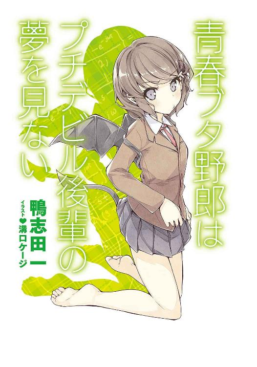
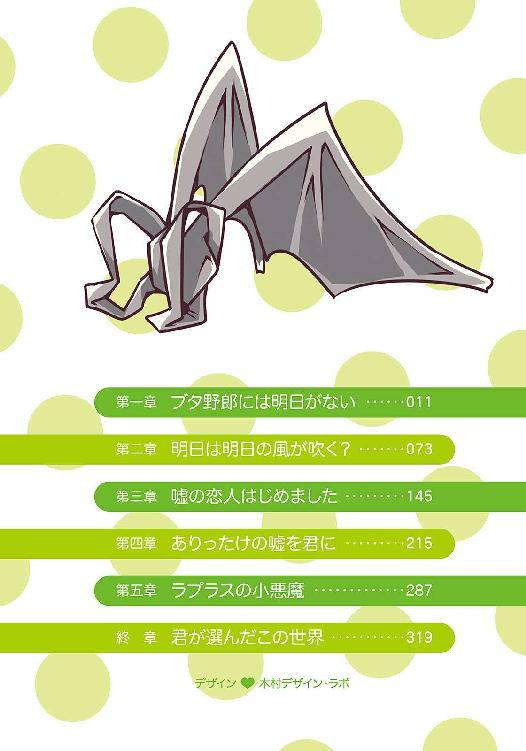
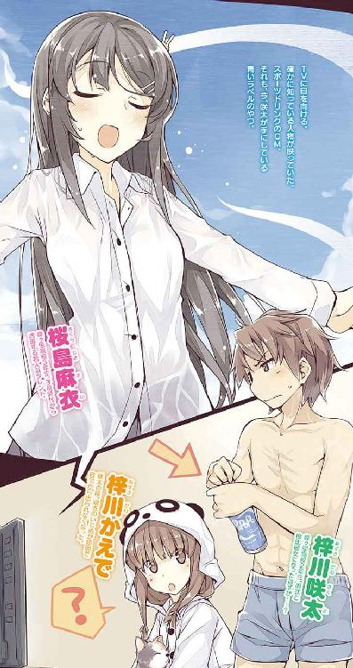
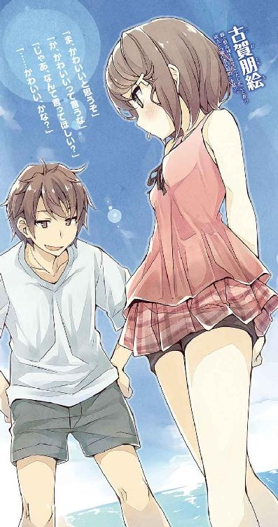
本書（電子版）に掲載されているコンテンツ（ソフトウェア／プログラム／データ／情報を含む）の著作権およびその他の権利は、すべて株式会社ＫＡＤＯＫＡＷＡおよび正当な権利を有する第三者に帰属しています。
法律の定めがある場合または権利者の明示的な承諾がある場合を除き、これらのコンテンツを複製・転載、改変・編集、翻案・翻訳、放送・出版、公衆送信（送信可能化を含む）・再配信、販売・頒布、貸与等に使用することはできません。
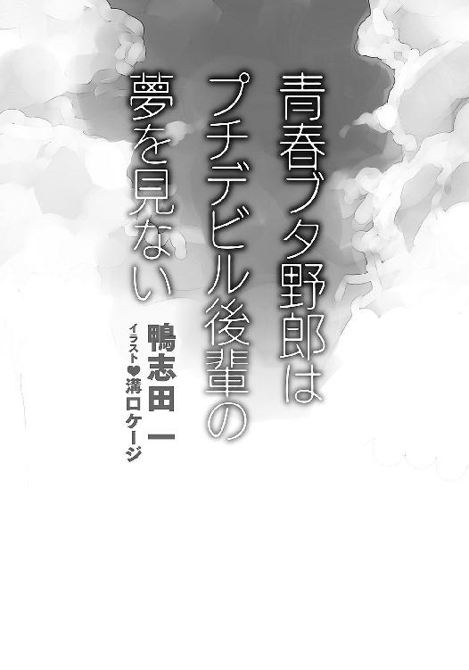
──その日、梓川咲太が目を覚ましたのは、昨日の朝だった
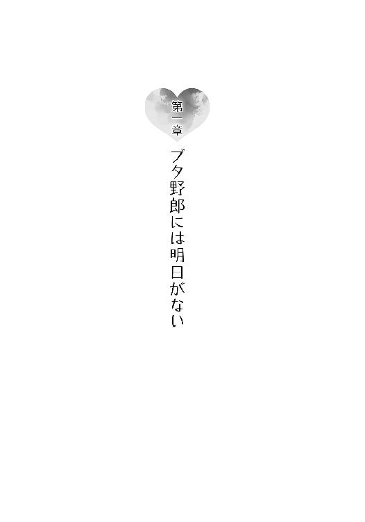
１
「やってくれました、日本代表！」
興奮を抑え切れない様子の男性アナウンサーの声で、朝のニュース番組はスタートした。
「おはようございます。今日は六月二十七日。金曜日。早速、サッカーの話題からいきたいと思います！」
リビングのＴＶに映し出されたのは、地球の裏側で行われているサッカーワールドカップのダイジェスト映像。深夜の時間帯に行われたグループリーグ第二戦の模様だ。
日本代表が、１点のビハインドで迎えた前半終了間際。果敢にドリブルで切り込んだ日本の背番号10番が、相手選手の強引な守備によって転倒する。スタジアムに響くホイッスル。ペナルティエリアの少し外側で得たフリーキックのチャンスだ。
ボールをセットした背番号４番が、一歩ずつ下がって助走の距離を取る。
画面を通しても伝わってくる緊張感。
その映像を、梓川咲太は呆然と見つめていた。
「これ、見たぞ」
深夜に試合の生中継を観戦していたわけではない。このダイジェスト映像そのものを、咲太は『昨日の朝』に見ている。日本の背番号４番が蹴ったボールは、相手キーパーの逆をついて、ゴールネットに突き刺さるはずだ。
息を呑んで、ＴＶに映ったダイジェスト映像の行方を見守る。背番号４番が蹴ったボールは、咲太の記憶と寸分たがわない弾道を描き、ゴールに飛び込んだ。
同点に追いつかれ、下唇を悔しそうに噛み締める相手選手。そのバックでは、フリーキックを決めた日本の背番号４番が雄叫びを上げた。そこへ、集まる日本代表メンバー。盛り上がるサポーターたち。
この得点を勢いにして、日本代表は後半に追加点を決める。そのまま、１点のリードを守って、見事勝利を収めるのだ。
試合結果がその通りになるのを見届けてから、咲太は全身を支配する疑問を払拭するために、一旦自室に戻った。ベッドの脇にある目覚まし時計に目をやる。デジタルの画面には、日付も表示されている。
──六月二十七日
アナウンサーが告げた通りの日付がそこにはあった。
「なんだ、これ......」
咲太が認識する限り、今日は六月二十八日のはず。それなのに、ＴＶも時計も一日前の六月二十七日だと言っている。これでは、今日が昨日で、昨日が今日だ。
「......なるほど、夢か」
咲太はベッドに入ると、毛布をかぶって二度寝をすることにした。
今日が昨日だというのなら、明日まで寝ればいい。
そう思って目を閉じたところで、部屋のドアががちゃりと開いた。
「お兄ちゃん、起きたんじゃないんですか？」
聞こえてきたのは、実の妹であるかえでの声。
小さな足音がぺたぺたと近づいてくる。
「二度寝はダメです。起きてください」
ゆさゆさとかえでが咲太の体を揺すってきた。
「僕は明日まで寝ることにしたんだ」
「学校はいいんですか？」
「ああ」
「なら、かえでも一緒に寝ちゃいますよ」
とか言いながら、毛布を掴んでベッドに潜り込もうとしてくる。
「じゃあ、起きるか」
むくりと咲太は体を起こした。
「え？ あっさり!?」
パンダ柄のパジャマを着たかえでとすれ違うように立ち上がる。現実逃避はほどほどにして、部屋を出てリビングに戻ることにした。
朝のニュースは未だにサッカーの話題を伝えていた。
少し遅れて、ぱたぱたとかえでもやってくる。
「なあ、かえで」
「はい」
「変なこと聞くけどさ」
「え、えっちなことですか？」
「違うな」
「お、お兄ちゃんが、そういうのはダメです」
両手で顔を覆ったかえでは、くねくねするだけで咲太の話を聞いてくれない。
「このニュース、昨日も見たよな？」
「......サッカーのニュースですか？」
かえでが指の隙間から画面を見ている。
「そうだ」
「えっと、見てませんけど？」
質問の意図がわからないようで、かえでは眉をひそめて困っていた。
「だよな......なら、いいんだ」
かえでに返事をしながら、咲太は胃の辺りに不穏な気配を感じていた。何かまずいことに巻き込まれている気がする。
狐につままれたような気分のまま、咲太はかえでと朝食を取り、何が何だかわからないまま、ひとまず学校に行くことにした。
外に出れば、何かわかるかもしれない。そう思ったのだ。
「お兄ちゃん、いってらっしゃい」
笑顔のかえでに見送られて家を出る。エレベーターで一階へ。「ふう」と一息吐き出してから駅へと足を向けた。
いつもとは違って、周囲に気を配りながら駅を目指した。マンションと一戸建ての家々が立ち並ぶ住宅街。公園の脇を抜けて、見えてきた橋を一本渡って大通りに出る。駅が近付くにつれて、ビジネスホテルや家電量販店の大きな建物が視界に収まる。
その間、目立った発見はなかった。咲太と同様に駅へと向かう人もいれば、ゴミ出しをしている主婦もいる。お店の周辺を掃除しているフラワーショップのおじさんもいた。
十分ほど歩いて到着したのは、神奈川県藤沢市の中心地である藤沢駅。通勤通学のサラリーマンと学生たちが数多く行き交っている。東海道線に乗り換えるサラリーマン。小田急の改札口に吸い込まれていく学生。咲太と同じく連絡通路を通って江ノ電藤沢駅を目指す人々。
誰の足取りにも迷いは感じない。目的地に向けてすたすたと歩いている。脇目も振らずにまっしぐら。きょろきょろと人々の行動を観察しているのは咲太くらいのものだった。
「もしかして、僕だけってことか......」
江ノ電藤沢駅の改札口を通り抜ける頃には、そんな嫌な予感がじくじくと疼き出していた。
二分待ってホームにやってきた電車に乗り込む。レトロな雰囲気の短い四両編成。発車のベルを合図にドアが閉まり、電車は動き出した。
約十五分揺られているうちに到着したのは、海沿いにある七里ヶ浜駅。ここから徒歩数分の場所に、咲太の通う県立峰ヶ原高等学校はある。
同じ制服を着た生徒たちがぞろぞろとホームに降りていく。外に出た瞬間、夏を間近に控えた潮の香りがした。あと十日もすれば近隣の砂浜は海開きだ。海沿いの一帯は海水浴客でごった返すことになる。
海の方へと目を向けると、梅雨の時期の晴れ間を狙ってやってきたウィンドサーフィンの帆がいくつか見えた。
見慣れた景色。特におかしな点はない。
校門までの短い道もいつも通りで、峰ヶ原高校の生徒たちのざわめきに包まれていた。クラスメイトとふざけ合う一年生の男子。参考書を片手に持った三年生。昨日の放課後に行ったカラオケの話題で盛り上がる女子生徒たち......。
どこを見ても、日常の風景しか見えてこない。
誰ひとりとして、「なあ、今日、二度目じゃね？」、「やっぱり？ 俺も！ 俺も！」、「まじ、びびるわー」などと話してはいなかった。
二度目の六月二十七日に戸惑い、夢の中にいるような気分で歩いているのは咲太くらいのものだった。
校門を抜けて昇降口に入ると、ふたりしかいない友人のひとりである国見佑真に声をかけられた。
「うす、咲太。今日も寝癖立ってるぞ」
バスケ部の朝練に出ていた佑真は、膝丈のジャージズボンにＴシャツ一枚の運動部スタイル。授業もその格好で受けて、放課後まで制服を着ない生徒は多い。佑真もそのうちのひとりだ。
「これはこういうヘアスタイルなんだよ」
「斬新だな」
そう言って笑う佑真もいたって普通......というか、このやり取りには覚えがあった。咲太の記憶の中の『昨日』と完全に一致しているのだ。
「......」
「どうした、咲太？」
「......いや」
「なんだよ？」
「ほんと国見はイケメンでむかつくよな」
「はあ？ なんだそれ」
今日が二度目だとは言わず、咲太は適当にごまかして教室に向かうことにした。
午前の授業は、数学、物理、英語、現国の四教科。その内容もまた咲太が昨日受けたものとまったく同じだった。数学教師の「ここ期末に出すからな～」も、物理教師の寒いギャグも、英語教師の「ミスターアズサガワ、リッスントゥーミー」も、現国教師のＹシャツの襟に口紅がついていたのも、咲太が『昨日』見たまんま。
時間の経過は、咲太の中にあった疑惑を確信へと変えていく。
──僕の記憶だけをそのままに、昨日に戻っている
その考えは、一見平和そのものの教室の日常風景を、どこまでも薄気味悪い空間へと変えていた。
世界がおかしくなったのか。それとも咲太がおかしくなったのか。
「そりゃ、世界だろうな」
体の感覚はいたって普通。あるのは現実感だけ。夢だと疑う余地はひとつもなかった。
そんな中で訪れた昼休み。
「今日が昨日ってことなら......」
この昼休み、咲太には大事な約束がひとつある。それを確かめるために、咲太は二年一組の教室を出た。
十分後、咲太は校舎の三階にある空き教室にいた。海が見える窓際。机をひとつ挟んだ正面には、三年生の先輩である桜島麻衣が座っている。
凜として整った顔立ちの彼女。芸能人顔負けの美人......というか、麻衣は正真正銘の芸能人だったりする。子役時代から活躍している実力派の女優さん。国民的知名度を誇る超有名人。ここ二年ほどは活動を休止していたが、最近になって再開したのだ。
その麻衣が咲太のために作ってきてくれたお弁当が机の上には置かれている。献立は咲太が昨日食べたものと同じだった。
鶏の竜田揚げ、卵焼き、ヒジキと豆の煮もの、ポテトサラダにはプチトマトが添えられている。
一品ずつ箸で摘んで口に運んで味を確かめた。少し薄味だけど、どれもやさしい味わい。見た目だけでなく、味の方も咲太の記憶通り。
「......」
一体、何が起きているのだろうか。さっぱりわからない。
「おいしくないの？」
「ん？」
声に反応して顔を上げると、麻衣のむすっとした表情が目の前にあった。不満を隠すことなく、咲太に全力でぶつけてきている。
考え事に夢中で、お弁当の感想を言うのをすっかり忘れていた。というか、すでに一度は言っているので、咲太はもう言った気になっていた。
「めちゃくちゃおいしいです」
「全然そうは見えない」
「ほんとですって。毎日食べたいくらい」
「昭和のプロポーズみたいなこと言ってもだまされないから。私のお弁当を食べながら、一体、何を考えていたのよ」
さすがに麻衣は鋭い。
「麻衣さんの手料理を食べられる幸せを噛み締めてただけですって」
今の段階で、麻衣に話すべきではないと思った。咲太自身、何が起きているのかよくわかっていない。そんな曖昧なことを麻衣に伝えても、余計な心配をさせるだけだ。
「ふ～ん」
少しも納得していないと麻衣が態度でアピールしてくる。
「麻衣さん、変なこと聞いていい？」
「エロいこと？」
かえでもそうだが、どうしてそこに結び付けるのか。心外極まりない。
「下着の色なんて教えないからね」
「それは想像するのを楽しんでるから平気」
「うわ、きもっ」
冗談のつもりだったのに、麻衣は素で引いている。
「で、変なことってなに？」
「麻衣さんにとって、僕はなに？」
「ただの生意気な後輩でしょ」
一瞬の思考時間もなく、麻衣はさらっとそう答えた。『ただの』の部分を、咲太が意識するようにちゃんと強調するのも忘れていない。
「......そっか。じゃあ、僕にとって麻衣さんはなんだと思う？」
「片想い中の......とても美人で、とてもやさしくて、心から憧れている先輩」
「当たり」
言いながら、卵焼きを口に運んだ。もぐもぐと咀嚼する。
非常に残念なことではあるが、やはり、麻衣との関係性もすっかり元に戻ってしまっている。一度はお付き合いのオッケーをもらっているのに。
彼氏彼女の関係のはずが、生意気な後輩に逆戻りとは悲しい限りだ。
だが、よくわからない現象が、咲太の恋路を邪魔するなら逆らえばいい。もう一度、麻衣からお付き合いのオッケーをもらえばいいだけだ。
この程度の障害でふてくされてはいられない。諦めるなどもってのほか。
「変な質問して、ほんと、なんなの？」
訝しげな視線が目の前にあった。
「今後のために、現状を正確に把握しておこうかと思って」
もっともらしい理由で咲太ははぐらかすことにした。嘘は言っていない。わけのわからないこの現状をよく知っておきたいのは本当だ。
「なんか、怪しい」
目をす～っと細めて、麻衣が顔を覗き込んでくる。
「そんなことより麻衣さん」
「話を逸らさない」
聞こえなかったことにして、咲太は続けた。
「好きです。付き合ってください」
じっと麻衣を見据える。
「だから、話を逸らさないの」
「告白を無視しないでほしいんだけど」
「だって、それ聞き飽きたし」
心底退屈そうに麻衣がもらした。
「そっか......失恋か。じゃあ、新しい恋を探すしかないな」
「ちょっ......」
「今までありがとうございました」
ぺこりとお辞儀をしてから、「はあ～」と失恋の深いため息を咲太は落とした。
「だ、だめとは言ってない......なに、諦めようとしてるのよ！」
拗ねた瞳で麻衣が睨んでくる。
「なら、いいの？」
「う......咲太のくせに生意気」
「いいの？」
諦めずにもう一押しすると、
「......うん」
と小さく頷き、
「いいよ」
と、消えそうな声で麻衣は呟いた。
恥ずかしさを隠すように、麻衣が卵焼きを無言で頬張る。なんともかわいらしい仕草だ。全身がぞくぞくする。
「麻衣さん」
「な、なによ」
「抱き締めていい？」
「理由は？」
警戒するように、麻衣が上目遣いで様子を窺ってくる。
「今の麻衣さんがすげえかわいいから」
「なら、ダメ。絶対ダメ」
「えー」
「そのまま押し倒されそうだし......だいたい、そんなこと聞かれて『いいよ』なんて言えるわけないじゃない」
その後も、麻衣はなにやらぶつぶつと文句を言っていた。
予鈴が鳴ったところで、お昼デートはお開きとなり、咲太は麻衣と別れて教室に戻ることにした。
その途中、通りかかった階段の踊り場に、見知った人物を見かけた。今風のおしゃれなふんわりショートボブ。うっすらとメイクした頬は、ほんのりと色付き、表情全体をとてもやわらかい印象にしている。
古賀朋絵だ。
一ヵ月ほど前、咲太を変質者と間違えたひとつ下の一年生。印象的な出会い方をしたので、名前を覚えてしまった。あのとき、咲太は迷子の女の子のお母さんを捜してあげようとしていただけだった。それは穢れのない親切心に他ならない。にもかかわらず、「くたばれ、ロリコン変質者！」の掛け声と共に、鋭い蹴りを尾骶骨にもらったのだ。
その朋絵だが、今はしおらしい感じで俯いている。よく見ると、正面に誰かいた。すらっと背の高い男子生徒。でも、体つきはしっかりしている。恐らく、運動部。髪は茶色。踵を踏んだ上履き。制服のくたびれ具合からして三年生だろうか。いわゆるイケメン。
「前沢先輩......話ってなんですか？」
緊張した様子で、朋絵が見上げる。どうやら、男子生徒の方は前沢と言うらしい。
「あのさ、よかったら俺と付き合わない？」
「え!?」
「嫌かな？」
「い、いえ、その、あの......少し考えさせてください」
必死な感じで、朋絵がそう返事をする。
「わかった。返事待ってる」
前沢先輩はさらっと告げて、階段を上がってこようとする。鉢合わせすると面倒なので、咲太はさっさと廊下を歩き出した。
「あいつ、モテるんだな。ま、かわいいもんな」
普段なら不幸になればいいと思うところだが、今日は他人の幸せを祝ってあげてもいい気分だった。なんたって、麻衣からお付き合いのオッケーをもらえたのだから。
「あとは......明日さえ来れば完璧だ」
今の咲太にとって、それが一番深刻な悩みだった。
その夜、咲太はまた同じ日が繰り返されてはたまらないので、ひとつの思いつきを実行することにした。
それは、徹夜。
朝起きて昨日に戻っていたのだから、寝なかったらどうなるのか。こうなったら、寝ないで明日が来るまで待てばいい。
深夜二時を回ったところで、咲太はあくびを噛み殺しながら、暇潰しにＴＶをつけた。画面に映し出されたのはサッカーの試合。濃い青のユニフォーム。つまり、サムライブルー。日本代表の試合だ。しかも、Ａ代表。
「おいおい、二日連続かよ......」
過密な日程だとしても、中三日程度に調整されるはずなのだが......。
「ん？」
何かが引っかかる。
試合の様子を見守っていると、咲太はあることに気が付いた。
「これ、見たな」
時間帯は前半終了間際......ピッチの中央で味方のパスを受けた背番号10番が、スピードに乗ったドリブルで敵陣に切り込む。ふたりをかわしたところで、たまらずに相手選手が背中からぶつかってきた。吹かれるホイッスル。ペナルティエリアの少し外で得た、日本のフリーキックのチャンス。
今朝のニュース番組で見たダイジェスト映像と同じシーン。けれど、画面の右上には『ＬＩＶＥ』の文字が出ている。つまり、画面に映っているのは衛星中継だ。試合は今この瞬間に、地球の裏側で行われていることになる。
「......面白い冗談だな」
急いで部屋に戻って時計を見る。午前二時十分という表示と共に、『六月二十七日』の日付が示されていた。
「......」
もう次の日になったと思って油断していた。いつの間にか、昨日に戻っている。
リビングに戻ると、試合の中継を咲太は見守った。審判のホイッスルを合図に、助走を取った背番号４番がボールを蹴る。
そのボールはゴールに吸い込まれていく......かと思いきや、強烈なシュートはクロスバーを直撃。弾かれたこぼれ球を、相手国の長身のディフェンダーがクリアして、日本の得点にはならなかった。
「は？ なんで？」
思っていたのとは違う展開。そのとき、咲太の脳裏に、友人の双葉理央と交わした言葉が蘇った。
──それは、つまりだ......サッカー日本代表の試合があったときに、結果だけをスポーツニュースで見たときは勝ってるのに、僕が試合を見るときに限って負けるって話でいいのか？
──今後、日本代表のために、梓川はサッカーの観戦はしない方がいい。二度と見るな
あれは、観測が結果に影響を与えるとかなんとか......そういう話の中で出てきた会話だったかと思う。
「いや、まさか嘘だよな......」
自分が試合を見たことで日本代表が負けるなどあっていいはずがない。
祈るような気持ちで、咲太は試合終了まで日本代表を応援した。だが、前半からの１点のビハインドに追いつくことはできず、そのまま０---１で負けとなった。
実況のアナウンサーと解説者が、惜しい場面はいくつもあったと試合を振り返っている。決定的な部分で決めきれない悪い癖が出たのだと......聞き慣れた日本の弱点を改めて指摘する。
これで、グループリーグを突破するためには、次の強豪国との一戦になにがなんでも勝たなければならなくなった。厳しい状況に追い込まれたと、実況のアナウンサーが咲太に教えてくれた。
「これは明日......っていうか、今日っていうか、昨日でもあるんだが......双葉に相談だな」
深夜。リビングでひとり咲太は頭を抱えるしかなかった。
２
結局、徹夜は無意味だとわかり、その後ぐっすり眠って迎えたその翌朝......咲太は諦め切れない気持ちで、ＴＶの電源を入れた。流れてきたのは、日本代表が惜しくも敗れたというニュース。
「ほんと、僕のせいじゃないよな？」
妙な後ろめたさから逃げ出すように、咲太はいつもより三十分早く家を出た。
三十分早いだけで、周囲の景色は不思議と違って見える。わずかに空気は白く感じたし、藤沢駅を行き交う人々の流れも微妙に異なる。サラリーマンが多い気がした。普段の時間帯ならば、もっと制服姿の中高生が多くいるはずだ。
使い慣れた江ノ電の車内は特にその傾向が顕著で、そもそも乗客が少なかった。
当然のように、七里ヶ浜駅から学校までの道は空いていた。駅で降りた利用客も、咲太以外には数えるほどしかいない。通学時間であれば、峰ヶ原高校の生徒が、ぞろぞろ列を作って行進しているというのに。
別の場所にいるような気分だった。
無人の昇降口で上履きに履き替える。人がいないと空気が違う。しんと静まり返っている。静謐というやつだろうか。
普段と違う空気を感じながら、咲太は階段の前を素通りして、物理実験室を目指した。
「双葉、いるか？」
声をかけながらドアを開ける。
お目当ての人物は、黒板の前にいた。制服の上から白衣を羽織った小柄な女子生徒。咲太のふたりしかいない友人のもうひとり......双葉理央だ。
理央は咲太を見ようともせずに、
「はあ」
と、憂鬱そうなため息をもらした。
気にせずに、咲太は机を挟んで理央の正面に座った。
ふたりの間には、ビーカーに載せられたトーストと、湯気を立てるコーヒーカップ。トーストはこんがりと焼き目がついている。今から朝食を取るようだ。
部員が理央だけの科学部の活動は少々自由すぎる。
理央が両手で持ったトーストにかぶりつく。さくっと香ばしい音がした。
「あのさ」
「嫌だね」
「まだ何も言ってないだろ」
「こんな時間に、わざわざ来たってことは、どうせ厄介事でしょ」
さすがに鋭い。いや、この状況なら誰でも何かあったと思うはずだ。
「興味深い現象の報告に来たんだよ」
「それを厄介事って言うの」
理央は手で咲太を追い払おうとする。
取りつく島もない。
「さっさと帰って」
不機嫌そうにトーストの耳を理央がかじる。
普段から淡々とした理央だが、今日はそこにちくりとしたトゲを感じる。虫の居所が悪いのだろうか。
「双葉の方こそ、何かあったのか？」
気になった咲太は、先にそう尋ねた。
「なんで？」
ようやく理央と目が合った。眼鏡のレンズ越しに、理央が瞳に警戒を覗かせる。
「機嫌悪いから」
「別に......」
そう言いながらも、ごまかす気はないらしく、
「はあ......」
と諦めたように、理央は大きく息を吐き出した。
「ま、ひとりで悶々としてるよりは、梓川に話して笑ってもらった方がいいか」
外の景色を視界に映しながら、理央は独り言のようにそう呟く。
「なんだそりゃ」
前向きなのか、後ろ向きなのか......判断に困る態度だ。
「今朝、朝練に行く国見と電車で一緒になった」
「セクハラでもされたか？」
視線は自然と理央の立派な胸元に注がれる。
「国見がそんな真似するわけないでしょ」
「まるで僕とは違うと言いたげな目で見るのはやめてくれ」
「なら、見ないで」
理央が胸を隠すように横を向いた。明らかに嫌がっているので、ここはなるべく胸を見ないよう努力をしよう。
「それで？ 国見と一緒になってどうかした？」
「別に、どうも......彼女持ちの男子に声をかけられて、うれしいとか思った自分に嫌気が差してるだけ」
自嘲気味に、理央が苦笑いを浮かべる。
「そりゃまた乙女チックな悩みだな」
「梓川に声をかけられても、虫唾が走るだけなのにね」
「その一言、必要だったか？」
絶対に必要なかったはずだ。ま、八つ当たりで理央の気分が紛れるなら、これくらいのことはなんでもない。
「なんか、私、ますますダメになってるかも」
最後に残ったトーストの耳を口に押し込み、理央がコーヒーをずずっとすする。それから、「はあ～」と深いため息を吐いた。
「いっそ、言ったらどうだ？」
「何を？」
わかっているくせに、はぐらかすように理央は聞いてくる。
「好きだって」
「......誰に？」
今度は少し躊躇いを感じた。聞けば咲太がその名前を口にするとわかっているのだ。
「当然、国見に」
「あのさ、梓川」
「好きだって言えばいい」
理央の目を見て、咲太はあえて逃げ場を封じるようにそう告げた。
「......」
目に見えて、理央は口を尖らせていく。椅子の上に膝を抱えて横向きに座ったかと思うと、
「今は正論なんて聞きたくない」
とふてくされた口調で言ってきた。
「悪かった」
「ほんと悪い」
「けど、双葉はずっとそのままでいる気かよ。それ以上こじらせる前にはっきりさせた方がいいと思うぞ」
わざわざ、朝から部活動をしているのだって、朝練の佑真に会えるかもしれないからだということを咲太は知っている。そのくせ、会えたら会えたで、この有様なのだ。
「だから、正論なんて聞きたくない」
そこで、もう一度理央がため息を吐いた。風船でも膨らませそうな深いため息。横顔は憂鬱そのものだ。
「言ったら、国見、困るだろうし」
「存分に困らせろ、あんなさわやか野郎は」
「私も梓川くらい無神経だったらよかった」
「そんなに褒められると、照れるな」
「さすが無神経」
「男は女子に振り回されて喜ぶ生き物なんだぞ」
「それ、ブタ野郎の梓川限定でしょ」
「国見の彼女もなかなかだと思うけどな」
前に、咲太はその彼女から、「クラスで浮いている梓川なんかと一緒にいると、佑真がかわいそう」と、面と向かって言われたのだ。どう考えても、そんなことを言われている咲太の方がかわいそうだった。名前は上里沙希。咲太と同じ二年一組に所属。咲太のタイプではないが、男子の間では人気が高く、かわいいと評判だ。クラスでは、最も派手で華やかなメイングループの中心的存在でもある。
誰もいない物理実験室で、科学部の活動にひとり勤しんでいる地味な理央とは正反対だ。
「梓川さ」
「なに？」
「彼女の話とかほんと無神経」
「双葉には荒療治が必要だって。嫌なら、さっさと玉砕してこい」
「梓川のくせに正しいこと言わないで」
理央もそれが唯一の解決手段だということはわかっている。わかっているけど、実行に移せずにいる。言えば終わってしまうから。
「こんな言いにくいことを言ってくれんのは、僕くらいのもんだぞ」
「それを自分で言うから、梓川はダメなんだよ」
どこか楽しげに理央が笑う。少しは気分転換になったようだ。
「で、梓川の話ってなに？」
「明日が来なくて困ってる」
「元々、梓川に明るい未来なんて来ないんだからいいんじゃないの」
ストレートにボールを投げたら、酷いことを言われた。
「ちっともよくないし、僕にはバラ色の未来が待ってるんだ」
今日の昼休みから麻衣とのお付き合いがスタートする。その先の未来はバラ色と言っても、少しも大げさじゃないはずだ。
「とにかく、今日が昨日で、昨日が今日で困ってる」
「人間にわかるように言ってくれる？」
「僕も人間だぞ」
「ブタ野郎なのに？」
「あのな......あ、いや、いい。ええっとだな......」
反論するのは諦めて、咲太は我が身に降りかかっている不思議な事態について、理央に一から説明をはじめた。
五分後、話を聞き終えた理央は、
「ふあ～」
と、眠たそうにあくびをした。
「で、どう思う、双葉」
意見を聞こうと真剣な眼差しで咲太は理央を見た。
「梓川、それ中二病だよ」
「僕は高二だ」
「なら、高二病でいいや」
「投げやりだな」
理央はいかにも面倒くさいという態度だ。コーヒーのおかわりを淹れて、ひとりで飲んでいる。
「そうでなければ、梓川の大好きな思春期症候群なんじゃないの？」
これまた投げやりに言ってくる。
「これっぽっちも好きじゃない」
思春期症候群。
ネットの一部で話題になっている不可思議な現象の総称。『他人の心の声が聞こえた』とか、『物の記憶が読めた』とか、そんなオカルトじみた眉唾物の噂話。
誰も本気で信じているわけではない。
でも、それらに類する現象を、咲太はこれまでに何度か経験している。今回のもそれだろう。他に考えられない。
「てか、なんとかしてくれ」
「そんなの梓川がなんとかするしかないでしょ」
「理由を聞こうか」
「見たところ、私も含めて他の生徒はおろか、その他七十億人の人類は、今日が三度目だなんて思ってないよ」
理央が横目に映したグラウンドでは、野球部員がランニングをしている。確かに、熱心に汗水を垂らす彼らは、今日が三度目だなんて思っていないだろう。思っていたら、悠長に部活に勤しんでいる場合ではないはずだ。
「思ってたら今頃パニックだろうし」
スマホを操作していた理央は、検索結果の画面を咲太に見せてきた。検索ワードは、『六月二十七日』、『三度目』、『繰り返し』だ。残念ながら目ぼしいヒットはない。
「ということはつまり、梓川が引き起こしている思春期症候群だと私は思うけどね」
さらっと理央は嫌なことを言ってくる。
「僕は別に思春期特有の不安定な精神状態にはないし、何か強烈なストレスを感じてたりもしないぞ」
その辺が、思春期症候群の原因ではないかと、ネットでは語られている。ままならない現実に対する過度なストレス。それが見せる幻というのが、最も有力な解釈だ。要するに現実逃避の産物。
「ま、自覚がないならいいけど」
どうも、理央は咲太が原因だと決めつけているようだ。
「要因がなんであれ、起きている事態について、梓川が思ってるのとは違う見解を述べておくよ」
「どういう意味だ？」
「さっきの説明を聞いた限りだと、梓川は時間がループしていると思ってるでしょ」
「ああ、そんな感じ」
ＳＦ小説なんかで度々見かけるループ展開だ。
「その考えには囚われない方がいいかもね」
「なんで？」
「過去に戻るのは色々と大変だから」
できないと言ってこないところを見ると、理論はあるということだろうか。
「梓川が何度か経験した『六月二十七日』は、それより前の時間から未来を見たものかもしれない」
なんかとんでもない発言が飛び出した。
先ほど、過去に戻るのは難しいと言った人間の言葉とは到底思えない。
「今の流れだと、未来予知は簡単って聞こえるぞ」
「一時期、過去へのタイムトラベルよりは、可能性に近づいたからね」
「まじで？」
「とは言っても、量子力学が登場する以前......古典物理学の時代の話だけど」
「ほう」
「ラプラスの悪魔って聞いたことない？」
「あいにく、悪魔の知り合いはいないな」
「知らないならいいけど......この世界に存在するあらゆる物質は、同じ物理法則の支配下に平等である。これはいい？」
「ああ、それが物理学ってやつだろ？」
「そう。その法則を数式化して、計算してしまえば、未来の状況を導き出せる」
随分と簡単な説明だ。実態が見えず、咲太は首を捻った。
「まるでぴんと来ない」
「具体的には、この世界に存在するすべての原子の位置と運動量......質量と速度ベクトルをかけたものだけど、このふたつさえわかれば、あとは古典物理学の数式に当てはめて計算するだけで未来の状況は導き出せる。高校で勉強するような範囲の話だよ」
非常に残念なことではあるが、同じ高校生の咲太には、理央が何を言っているのかさっぱりわからない。色々と質問をして確認したいところだ。
「すべての原子ってすごい数だよな」
それこそ無限と言っていいような数なのではないだろうか。
「そうだね」
「そんなものの位置と運動量を全部調べるなんて可能なのか？」
おにぎりひとつを構成している米粒の数を数えるのだって大変なのに。
「少なくとも、その当時......十九世紀の物理学者たちにそんな真似はできなかった。たとえ、位置と運動量をすべて把握できたとしても、膨大なデータを数式で計算するとなれば、それ相応の時間が必要となる。だから、一秒後の未来を計算するのに、一秒以上かかってしまって、近い未来の先回りはできなかっただろうね」
「だよな」
たぶん、今の時代のコンピューターにだって不可能なのではないだろうか。
「だから、そんな途方もない真似ができる空想上の存在を、物理学者のラプラスさんは考え出した」
「それが、ラプラスの悪魔か」
ゆっくりと理央が頷く。
「その悪魔には、一瞬でこの世界に存在するすべての原子の位置と運動量を把握する力があって、その数字を使って瞬時に未来を計算できるらしい。つまり、ラプラスの悪魔には未来のすべてがお見通しってわけ」
「ふ～ん」
「納得できないって顔だね」
「いや、未来を計算できるのはいいとしても、その場合、僕たちの意思みたいなものは反映されてないんだよな？ それで未来予知って言えるのか？」
「あー、そういうこと」
「感情まで予測するなんて無理だろ？」
「できるよ」
はっきりと理央が断言する。
「は？」
間抜けな声が咲太の口からもれた。
「人の体を構成するのも原子。その位置と運動量を把握すれば、脳がどう判断するか、どう感じるかも計算で導き出せる」
「なるほど......聞かなきゃよかった」
「最後まで聞けば、そうでもなくなるよ」
「ほんとか？ だって、今の話ってさ......感情部分も織り込み済みってことなら、ある瞬間の原子の位置と運動量がわかれば、どんな先の未来も計算できるって話になるよな？」
「そうだね」
「だったら、未来はひとつに決まってることにならないか？」
一度、ある瞬間の原子の位置と運動量がわかれば、あとは経過時間を変化させるだけの話で、他の数値をいじる必要はないはずだ。すなわち、時間以外は変わらない。数学とか物理とかでいう、定数として運命が定められていることになる。
「そこに気づくなんて、梓川は結構賢いね」
子供を褒めるような理央の言葉。
「梓川の言う通り、ここまでの話はそういう話」
「じゃあ、あれか？ 試験前に僕が勉強をしても、しなくても、来週の期末試験の結果は、もう決まってるってことだよな？」
「それは少し違うね。確かに点数は決まっている。だけど、梓川が勉強するか、しないかについては解釈を間違えてるよ。正しくは、梓川が試験勉強をするか、しないかも決まっていることになる」
「ん、あ、そうか」
未来の全部が決まっているとはそういうことだ。
「今日、私の話を聞いた梓川が、『未来なんて決まってるんだから、がんばってもしょうがない』と思ったとしよう」
「その場合も、今日、ここで双葉の話を僕が聞いて開き直ることを、ラプラスの悪魔は知ってるって話だよな？」
「その通り」
ややこしいけど、わかるにはわかった。
でも、つまり、
「運命は決まってるのか」
ということだ。
「私が最初に言った言葉を忘れた？」
「今朝、国見に声をかけられて、超うれしかった」
「死ね」
「え～っと......『量子力学が登場する以前』だっけ？」
「覚えてるなら余計なこと言うな」
少し拗ねたような顔で、理央が睨んでくる。普段のさばさばした態度からは想像できない女の子の顔だ。
「以前、シュレーディンガーの猫について説明したよね」
「箱を開けるまで、猫の生死は決まってないってやつな」
あれは、約一ヵ月前のこと。麻衣の身に起きた思春期症候群をどうにかするため、理央に相談したときに聞かされた話だ。
「ま、それだけ覚えていれば上出来かな」
「もっと褒めてくれ」
それを無視して、理央は続ける。
「量子力学の世界では、粒子の位置は確率的にしか存在できないことになってるって説明もしたけど、覚えてる？」
「今、思い出した。位置を確定するためには、観測するしかない......だったよな？」
「そう。で、その観測がキーなんだけど、見るためには光を当てるしかないわけ」
引き出しから取り出した懐中電灯のライトを、理央が机の上に置いた野球のボールに当てる。
「これで、粒子の位置はわかったんだよな？」
「そ、でも、粒子はとても小さなものだから、同じくらいの大きさの光をぶつけると、速度や向きが変わってしまう」
ライトの当たったボールを理央がコロコロと転がした。机から落ちてツーバウンド。椅子の脚にぶつかって止まった。
「つまり、粒子の位置を調べると速度が変化してしまうし、速度を含む運動量を正しく知ろうとすると、位置が確率的になってしまうわけ。両方を同時に知るすべはないってこと」
「そりゃ、もどかしいな」
「晴れて、ラプラスの悪魔は量子力学に退治されて、未来は決まってないってこの件に関しては証明されたの。安心した？」
正直、あまり安心はできない。その量子力学が咲太にはよくわかっていないのだ。そんなよくわかっていないものを自信にできるはずがない。
「でもさ、量子力学ってのは、人間視点の話だろ？」
「当然、そうだね」
「なら......」
言いかけた咲太の先回りをして、理央が口を開いた。
「梓川の言いたいことはわかるよ。元々、ラプラスの悪魔は、人間を超越した存在なんだから、位置と運動量を同時に正確に測れるかもしれない」
確認の視線を理央が投げかけてくる。
「ああ、まさにそれを言いたかった」
「どこまで悪魔が優秀かは、梓川が決めればいいんじゃない」
理央はそのためにこの話をしたのだと言いたげだ。
そして、それは同時に、咲太がラプラスの悪魔だと理央は言っている。
「悪いが僕はそんな怪しげな悪魔じゃないぞ」
「せいぜい、解剖されないように気を付けるんだね」
「謎の研究機関に双葉が密告しなければ大丈夫だろ」
「だとするともう会えないかも」
ちらりと理央が机の上に置かれたスマホを見ている。
「どうしても違うって言うなら、本物のラプラスの悪魔を探すんだね」
「どこにいると思う？」
少なくとも学校の授業で悪魔の探し方は教わっていない。
「悪魔だけは、梓川と同じで、繰り返されているっていう『六月二十七日』の記憶があるんじゃない？ その記憶があるなら、前回の『六月二十七日』とは違う行動を取っている可能性が高いと、私は推測するけどね」
「あ～、なるほど......」
理央の言う通りだ。この事態に気づいていれば、なんらかの対処なり、行動なりを起こしている可能性が高い。もしくは、この状況に困惑しているか。
とは言え、目星は何もない。どこから探せばいいのだろうか。
その疑問を口にする前に、朝のＨＲの開始五分前を告げるチャイムが鳴ってしまった。わざわざ早く来たのに、遅刻するのもバカらしい。
鞄を肩にかけて立ち上がる。理央の片付けを手伝おうとしたが、「いい、先行って」と言われてしまった。
「んじゃ、サンキュ」
物理実験室を出ようとした咲太だったが、ふと思い出したことがあってドア口で立ち止まった。
「あ、そだ、双葉」
「なに？」
「また今日を繰り返すことになったら、朝、国見に会わないようにしてやろうか？」
そうすれば、あんな憂鬱そうな顔を朝からしなくていいはずだ。
「......」
理央は一瞬考えたあとで、
「余計なお世話」
と、軽く笑って言ってきた。
「今のところ、自分でなんとかするつもりだから」
「どうにもならなくなったら言えよ」
「そうだね。梓川にはたくさん貸しがあるし、そのうち返してもらわないと」
「ちゃんと利子をつけて返すよ」
皮肉っぽい笑みの理央に見送られ、咲太は物理実験室をあとにした。
３
──本物のラプラスの悪魔を探すんだね
理央にはそう言われたが、一体どこから手を付けたらいいのだろうか。
誰が悪魔なのか皆目見当もついていない上、身近な人間だという保証だってない。下手したら、地球の裏側に住んでいる人物だという可能性もある。
「そうだったら、終わりだな......」
一介の高校生には、地球の裏側まで行く経済的な余裕はない。パスポートすらない。これは、前途多難。いや、この場合、お先真っ暗と言った方が正しい。
気分は絶望的。
それでも、お昼休みになると、咲太はさっさと教室を出て三階へ向かった。空き教室で麻衣と昼食を共にする約束があるのだ。
目下、咲太にとっての一番の関心事は麻衣とのお付き合い。それに関しても、再び白紙に戻された状態なのだ。今日もこのあとは、麻衣お手製のお弁当をいただきながらの告白タイムとなる。それはそれで楽しい時間なのがせめてもの救いだ。
少し浮かれた気分で空き教室のドアをスライドさせる。
すると、てっきり無人だと思っていた教室の中で物音がした。見れば、教卓の陰からスカートに包まれたお尻が飛び出している。本人的には隠れているつもりのようだ。
「......」
強烈な違和感が咲太の体を駆け抜けていく。
一回目、二回目の『六月二十七日』に、こんなことはなかった。昼休みの開始直後にここへやってきた咲太は、少し遅れてやってきた麻衣と、ふたりきりの幸せな時間を満喫しただけだった。誰の邪魔も入らなかったし、咲太はこの空き教室で、麻衣以外の人物に遭遇してはいない。
となれば、目の前に広がる光景は、一回目、二回目とは違う展開。違う行動を取っている人物との邂逅ということになる。
脳裏を過るのは、今朝、物理実験室で聞いた理央の言葉。
──悪魔だけは、梓川と同じで、繰り返されているっていう『六月二十七日』の記憶があるんじゃない？ その記憶があるなら、前回の『六月二十七日』とは違う行動を取っている可能性が高いと思うけどね
そして、目の前にあるのは、その言葉がぴたりと当てはまる状況。
「いたよ、ラプラスの悪魔」
咲太がそう口にすると、教卓の陰に隠れていた人物が恐る恐る顔を覗かせた。巣穴から危険がないか外の様子を見ている小動物のようだ。
その顔に、咲太は見覚えがあった。
イマドキな感じのショートボブの髪型。くりっとした大きな瞳。やわらかい印象のかわいいメイク。全身からイケてるオーラがひしひしと伝わってくる女子高生らしい女子高生。ザ・女子高生だ。
明太子色のカバーを付けたスマホを片手に、「あ」の口を開けていたのは、一年生の古賀朋絵だった。
女子の中でも小柄。全体的に小さくまとまったその容姿は、悪魔と呼ぶには少々か弱すぎる。せいぜい、小悪魔。プチデビルだ。
開いた窓から吹き込む海風が、朋絵の髪とスカートの裾をやさしく揺らす。先に言葉を口にしたのは、朋絵の方だった。
「佐藤一郎」
「それは世を忍ぶ仮の名前」
最初に名乗った適当な偽名をまだ覚えているとは驚きだ。咲太とは違って、一度挨拶を交わした相手の名前はきちんと覚えるタイプのようだ。
「......梓川先輩、だよね？」
少し自信のない上目遣い。
「梓川咲太。二年生」
「古賀朋絵。一年生......です」
とってつけたように敬語にすり替わる。わずかに雰囲気もしおらしくなった。
「タメ口でいい。公道で尻を蹴り合った仲なんだし」
「それ、忘れて！」
ぷうっと頬を膨らませた朋絵は、咲太の印象通りの朋絵だった。
あのときの痛みを思い出したのか、朋絵は両手でお尻を押さえている。少しだけ下級生にいけないことをしている気分になるポーズだ。
「古賀、つかぬことを聞くが」
「なに？」
「今日は何度目だ？」
「っ！」
咲太の問いかけに、朋絵が目を見開く。驚きと、少し不安が入り混じった瞳が左右に揺れていた。
「僕は三度目だ」
咲太がそう告げると、朋絵は一度、こくんと頷いた。そのあとで、
「あたしも三度目」
と、指を三本立てる。かと思えば、朋絵の表情は見る見る泣き顔に変わっていく。咲太が驚く間もなく、
「あたしだけじゃ......なかったんだぁ」
と、不安が涙の滴となって、ぼたぼたと落ちていく。安心したのか、へなへなとその場に座り込んでしまった。
「一体、なんなのこれ～！」
「さあ」
「なんで、同じ日が何度も来るの!?」
「知らん」
「どうして知らない!?」
「知らないものは知らない」
先ほどまでの安堵の表情は、すぐに不安に塗り替えられてしまう。
「これで助かると思ったのに、あたしの涙を返して！」
「水道水でも飲んで補充してこい」
「この先、どうなるの？」
それは咲太が聞きたいことだ。
「どげんなると？」
聞き慣れないイントネーションで、再度同じ質問を朋絵は繰り返してくる。この様子だと、自分がこの状況の原因であるという自覚はなさそうだ。皆無と言っていい。
「先輩はなんで平然としてるの!?」
襟首を掴んで朋絵がゆさゆさと前後に揺らしてくる。
「慌てたら解決するのか？」
「しないけど、普通慌てるよ」
「そうか？」
「そうだよ、先輩、神経いかれてる。やっぱり、全校生徒の前で告白する変人は違うんだ」
「面と向かって、他人に『いかれてる』って言える神経も、十分にいかれてると思うぞ」
「うるさいなぁ」
「一応聞くけど、古賀に心当たりはないのか？」
「いっちょんわからん」
「なんだって？」
「ぜ、全然わかんない」
「つかえねー」
「それ、先輩じゃん！」
「なんか、最近、嫌なこととか、悩んでることないか？」
「なんでそんなこと先輩に言わないといけないの？ あ、メッセージ」
と、朋絵がスマホの画面を見る。
「この状況......思春期症候群だと思うからな。古賀の思春期特有の不安定な精神が引き起こしている現象だとするなら、不安定の原因を究明して解消するしかない」
「思春期症候群って......先輩、正気？」
バカにしたような口調。視線はスマホに向かったままだ。返事を書いているらしく、画面に指で触れたり、なぞったりと忙しそうにしている。
「そんなのネットの噂じゃん。信じてるとか、信じられない」
咲太が存在を信じているのは、その信じられない現象を、過去に経験しているから。
妹のかえでが巻き込まれたときが最初だ。クラスメイトたちの心ない書き込みやメッセージを見るだけで、肌に殴られたような痣や、刃物で切ったような傷ができるのをこの目で見ている。
一ヵ月前には、麻衣が周囲から視認されなくなり、さらには記憶から消えていくという出来事があった。
そして、今まさにこの状況が当てはまる。
「気持ちはわかるが、同じ日が三日も続けば、思春期症候群がただの都市伝説じゃないって思うしかないだろ」
「う、確かに......」
夢を見ているんだと自分に言い聞かせて現実逃避するには限度がある。こうして同じ境遇に置かれた朋絵と遭遇して、ますます現実味が増してしまった。理央は未来予知を見ているのかもしれないようなことを言っていたが、どう考えても体の感覚は現実なのだ。
「てか、話してる最中はやめろ」
ひょいっと朋絵の手からスマホを取り上げる。
「あ、返してよぉ」
小柄な朋絵では届かないように、手を上に伸ばす。朋絵はぴょんぴょんと飛び跳ねて、スマホを取り返そうとしてくるが、少し高さが足りていない。
「話しながらはしないから」
反省の弁が出たので、咲太は朋絵にスマホを返した。
「ほれ」
野生動物のような俊敏さで、朋絵はスマホを掻っ攫っていった。すぐさま、無言で画面の操作に戻る。
「......」
「......」
「話す方をやめんのか」
「気が散る。話しかけないで」
「すげえな女子高生」
そんなわけで、約二十秒間、咲太は待たされることになった。
「で、なに？」
ようやく画面から朋絵が顔を上げる。
「最近、嫌なこととか、悩んでることはないか？ 六月二十七日を抜け出すヒントがそこにあるかもしれない」
「......う～ん」
眉根を寄せて、朋絵が真剣に考え込む。
たっぷり十秒ほど悩んだあとで、
「少し太った」
と、わずかに頬を赤らめながら、真剣なトーンでそう白状した。
「......」
見たところ、小柄な朋絵は非常に細い。色々なところがとてもスレンダーだ。
「な、なに、その目？」
「大丈夫だ。古賀はむしろ痩せてる。問題ない。少し太って、そのぺったんこな胸に肉をつけた方がいいくらいだ」
「全部、お尻とお腹に行くから困ってるの」
言われてみると、腰回りからお尻にかけては確かに安定感がある。
「揉めば大きくなるらしいぞ」
「そんなのもう試したよー」
咲太の視線があるにもかかわらず、朋絵は無防備に両手を胸に当てている。
「じゃあ、諦めろ。男は胸の大きさで女子を好きになるわけじゃないし。てか、他に悩みはないのか？ そんなしょうもないやつじゃなくて」
「水泳の授業はじまるから深刻なの！ 胸もないのに、くびれもないとか、夏って地獄......」
まだ何か言いかけていた朋絵だったが、急に目を見開いて言葉を詰まらせた。
「あっ」
朋絵の目は咲太の後ろ......廊下の方を見ている。
「か、隠れて！」
腕を引っ張られた咲太は、そのまま教卓の下に押し込められる。
「何の真似だ」
「いいから！」
咲太に続いて、狭い教卓の下に朋絵まで入ってくる。殆ど寝転がった咲太の上に、朋絵が跨っているような状態。
最近、一年生の間で流行っている遊びだろうか。若者の考えることはわからない。
疑問に思いながら外の様子を窺うと、開いたドアの隙間から男子生徒の姿がちらりと見えた。前回の六月二十七日に、朋絵に告白をしていた三年生......確か、朋絵は『前沢先輩』と呼んでいた。
「顔、引っ込めて！」
朋絵が咲太の頬を両手で挟んで、教卓の下に引き戻す。
「古賀を捜してるんじゃないのか？」
「そうだと思うけど......昼休みは用事がある的なメッセージ送っちゃったし......」
「用事ね～？ あるようには見えないけど」
「だから、ある的なって言ったじゃん」
要するに、前沢先輩には嘘をついているということらしい。
「わけのわからんこと言ってないで、さっさと告白されてこい」
「なんで告白のことを知ってるの!?」
「前回見たんだよ」
すぐ目の前にある朋絵の小さな顔。艶々したピンクの唇。吐息が頬にかかって少々くすぐったい。うっかり変なところを触らないように、少し体勢を正すと、
「きゃっ」
と、朋絵が体をびくつかせた。どこか敏感な部分を刺激したのかと思ったが、実際は違っていた。朋絵の手の中で、スマホが震動したのだ。バックライトに照らされながら、再び何やらメッセージを打っている。
「これ、なんてプレイ？」
「......」
スマホに集中している朋絵は取り合ってくれない。
終わるのを待つ間、何気なく視線を下げたら、スカートの裾がめくれているのに気づいた。右足の付け根部分から、白い布が顔を覗かせている。
「おい、古賀」
「あとにして」
「パンツ見えてる」
「今、それどころじゃないの」
咲太の忠告は、きっぱりと切り捨てられた。
「僕には、もう女子高生がわからん」
自分の貞操観念より、誰かにメッセージを送ることの方が大事らしい。仕方がないので、めくれたスカートは、咲太が直してあげた。これで見えているのは太ももだけ。
その間に、朋絵の方も無事返事を送れたようだ。
「なんで隠れるんだ？」
だいたい、咲太も一緒に隠れる必要はなかったはずだ。
「だって......前沢先輩は、玲奈ちゃんの憧れの人だから」
小声の朋絵は、「わかるでしょ」とでも言いたげな視線を向けてきた。さっぱり理解できない咲太は、
「はあ？」
と、当然の反応を見せた。
「はあ？」
まさかの「はあ？」返しだ。
「なんでわからないの？」
「殆ど説明を受けてないからだろうな」
「じゃあ、えっと......よく玲奈ちゃんと一緒にバスケ部の練習を見に行ってるの」
「その玲奈ちゃんはどちら様だっけ？」
国民的知名度を誇る芸能人か誰かだろうか。
「クラスの友達......香芝玲奈ちゃん。その玲奈ちゃんが、前沢先輩かっこいいって言ってて......あたしは付き添ってただけなんだけど......」
そこまで言って、朋絵がもごもごと口籠る。
「古賀の方が前沢先輩とやらに、気に入られたと？」
「......う、うん」
ゆっくりと朋絵が頷く。
「お前も、あの人のこと好きなわけ？」
「ううん......モテそうな人はいっちょん好かん」
「だったら、さっさと告白されて振ればいいだろ」
何も隠れる必要はない。正々堂々と振ってやればいい。文化祭が近付くと、突然バンドをはじめそうなイケメンが振られるのはいい気味だ。
「そんなことしたら、絶対にクラスでハブられる！ 玲奈ちゃんの......友達の好きな人なんだよ？」
「はあ？ なんだそれ。付き合うわけでもないのに」
「告白されたらダメに決まってるじゃん」
「意味わからん」
「応援するって玲奈ちゃんに約束しちゃったし......なのに、あたしが告白されるとか、空気読めてなさすぎ」
朋絵の声音は深刻に落ちていく。
「ほんと、どうしよ......」
表情はどこか青ざめてすらいた。朋絵にとっては危機的な状況のようだ。少なくとも、朋絵自身は心の底からそう思っている。
「色目使って誘惑したとか？」
「するわけないじゃん！」
「大声出すとばれる」
はっとなった朋絵が今さら両手で口を覆う。
「と、とにかく、そういうこと。わかった？」
言ってることはわかるが、価値観はやはりどうにも理解できない。
「いっちょんわからん」
「も～、話通じないな！」
感情に任せて朋絵が起き上がろうとする。だが、当然、教卓の下なので、頭上には注意が必要だった。
「あ、待て......」
とっさに咲太が声をかけたが遅かった。がんっと、朋絵がしたたかに頭を打つ。あまりの衝撃に、教卓の脚が半分浮いて、黒板の反対側へと倒れていく。
気づいた朋絵が手を伸ばしたが遅かった。朋絵の手は空を切り、教卓はばんっと大きな音を立てて倒れてしまう。
朋絵は朋絵で、床に寝ていた咲太に足を引っ掛けてバランスを崩した。
「きゃっ！」
悲鳴を上げて倒れかかってきた朋絵の体を、咲太は反射的に抱き留めた。めちゃくちゃ軽い。やはり、体重のことなどまったく気にする必要はなさそうだ。
「お前な......」
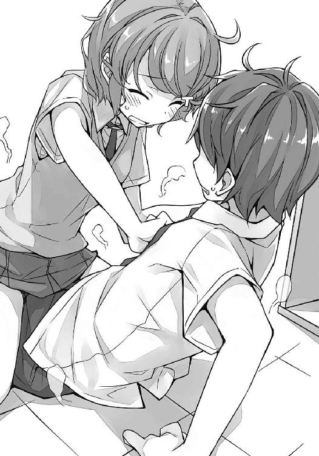
少しは落ち着け、と続けるつもりだったが、最後まで言うことはできなかった。言っている途中で、人影が視界に映ったのだ。
ドア口に立つ男子生徒と視線がぶつかる。先ほども見かけた三年生。バスケ部に所属しているらしい前沢先輩。
前沢先輩は、戸惑いを滲ませた曖昧な表情をしていた。無理もない。その視界には、空き教室の床で抱き合う咲太と朋絵が映っているはずだ。
「用事ってこれかよ。男の趣味悪っ」
なにやら、盛大な勘違いをしていらっしゃるご様子。その上、失礼なことを言われた。
「いや、違い......」
事実を告げようとした咲太だったが、その声は後ろのドアが開く音にかき消されてしまう。
どくんと咲太の心臓が高鳴った。
焦りを伴った無意識の反応。本能が「やばい」と警笛を鳴らしている。
誰がやってきたのかは、確認するまでもなく咲太にはわかっていた。痛いほどにわかっていた。
恐る恐る、後ろのドアに目を向ける。
案の定、麻衣が立っていた。
手には紙袋を提げている。中身は咲太のために作ってきてくれた麻衣お手製のお弁当だ。献立だってわかっている。鶏の竜田揚げに、卵焼き、ヒジキと豆の煮もの、ポテトサラダにはプチトマトが載っていて......。
そのすべてを把握しているのに、今日はそれを味わうことができないと咲太は麻衣と目が合った時点で確信した。
麻衣はドア口から一歩も動かずに、冷たい眼差しで咲太を見据えていた。朋絵と抱き合ったままの咲太を......心底つまらなそうな顔をして......。
「これは、誤解です」
あえて咲太は冷静に事実を告げた。人間の本質は窮地でこそ試される。慌てず騒がずここは自分の潔白を正直に説明するしかない。
「......」
真っ直ぐな瞳で麻衣を見つめて、無実を訴える。
「......」
だが、麻衣は無言で回れ右をした。
「だ～、待って、麻衣さん！」
朋絵を押しのけて、急いで立ち上がる。床に転がった朋絵が机に頭を打って、「うわっ、いだっ！」とか言っているが今は無視。
「事情の説明をさせてください」
「話しかけないで。ロリコンがうつる」
それだけ言って、麻衣は立ち去ってしまう。
「うわ～、すげえ、怒ってたよ」
とても一緒にお弁当を食べられる雰囲気ではない。告白をして、「うん、いいよ」と言ってもらうのはもっと難しそうだ。
「はあ......」
当然のようにため息が出る。
前のドア口を確認すると、前沢先輩の姿も消えていた。
朋絵はというと、未だに床に転がっていたので、ひとまず手を貸して引っ張り起こす。
「あ、ありがと」
その頭に手を置くと、咲太は腹いせにくしゃくしゃにしてやった。
「わっ！ ちょっと！」
朋絵は慌てて咲太から逃げ出す。ぼさぼさになった髪をいそいそと両手で直していたかと思うと、恨みがましい目で咲太を睨んできた。
「毎日、六時に起きてセットしてるのに」
おしゃれ女子高生の朝は早いらしい。
その朋絵のことは無視して、
「ふう......」
と、まずは深呼吸。
慌てても仕方がない。起きたことを悔やんでも意味はない。
この状況をありのままに受け入れれば、おのずと解決策は見つかるはずだ。
「ま、いっか。どうせ、明日も今日をやり直すんだろうしな」
朋絵がラプラスの悪魔なのは間違いなさそうだが、事態の把握はまだまったくと言っていいほどできていない。当然、解決の手段だって何も見出せていない。だから、麻衣に関して言えば、明日......というか、四度目の六月二十七日に上手くやればいい。うっかり朋絵と抱き合ったりしないよう気を付ければいいのだ。
これ以上はない、すばらしい解決策。
けれども、ここでのこの判断を、咲太は翌日の朝に深く後悔することになる......。
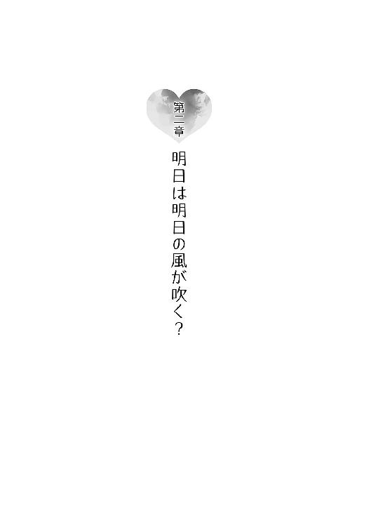
１
翌朝、咲太は呆然とリビングに立ち尽くしていた。
朝食のトーストが焼き上がるまでの短い時間。ＴＶの電源を入れてから数秒後のことだった。
どうせ、映し出されるのはサッカー日本代表の試合結果だと思っていたのに、やっていたのは民家の庭から一千万円の札束が出てきたという愉快な話題。
「おはようございます。今日は、六月二十八日。土曜日。驚きのニュースからお伝えしたいと思います」
すっかり朝の顔として定着している四十代前半の男性アナウンサーの声。落ち着きがありながら、さわやかな語り口は咲太も嫌いではない。情報がすんなり耳に入ってくる。
だからこそ、あまりにも当然のように言われたその言葉を理解するのに、咲太は数秒ほど時間を必要とした。
「......今、六月二十八日って言ったか？」
「言ってました」
いつの間にか、隣にはパンダ柄のパジャマを着たかえでが立っていた。咲太の顔を不思議そうに見ている。
「土曜日って言ったか？」
「言ってました」
「......」
「それが、どうかしましたか？」
「かえで、僕の頬をつねってくれ」
「はい、わかりました」
かえでの手が伸びてきて、むぎゅっとつねってくる。
「痛いな」
「ご、ごめんなさい」
「いや、いいんだ」
本当は少しもよくない。これが夢じゃないなら現実。痛いからたぶん現実だ。
ということは、今さら考え直すまでもなく、本当に六月二十八日がやってきてしまったわけだ。それも、ただの六月二十八日ではない。本来ならば、麻衣にお付き合いのオッケーをもらい、彼氏彼女として今日という日を迎えるはずだった。それなのに、お付き合いの話はなし。麻衣にはおかしな誤解まで与えている。そんな最悪な状況で、六月二十八日はやってきたのだ。
「笑えない冗談だな......」
まさに、天国から地獄へ突き落とされた気分。
咲太はふらふらと電話機に近づくと、受話器を持ち上げた。
「お兄ちゃん？」
心配そうなかえでの声には、「大丈夫だ」と上の空で答え、咲太は友人のケータイ番号を押した。
三度目のコールで繋がる。
「梓川だけど」
「土曜の朝っぱらからなに？」
しっかりとした理央の声。もうとっくに起きていたようだ。
「タイムマシンを作ってくれ」
率直に用件を伝える。
「......」
直後、無言で電話はぶつっと切れた。
電波が悪いのだろうか。これだからケータイはいけない。
早速リダイヤル。
「......」
だが、何度鳴らしても出てくれない。
どうやら意図的に切られたらしい。
しつこく鳴らしていると、十回目のコールでまた出てくれた。
「バカなこと言ったら、切るから」
「僕はいたって大真面目だ」
「今、着替え中なんだけど」
「具体的にどんな状態か教えてくれ」
「あと靴下を履くだけ」
「変わった順番で着替えるのな」
「普通でしょ」
「僕は靴下から履くぞ？」
「変わってるね」
「普通だろ」
「で、わざわざなに？」
「昨日相談したこと覚えてるよな？ 同じ日を繰り返してるってやつ」
「おめでと。昨日を脱出できたんだ」
「不本意な形でな」
「ラプラスの悪魔は見つかったわけ？」
「それなんだが......たぶん、峰ヶ原高校の一年生だ」
非常に遺憾ではあるが、ここは現実を受け入れて、前向きに考えていくしかない。とりあえず、昨日を脱出できた理由はきちんと考えておく必要がある。
また同じ日が繰り返されたらたまらない。
ループした一回目と二回目、しなかった三回目の違いと言えば大きく三つ。
ひとつ目は言うまでもなく、咲太と麻衣のお付き合いが白紙に戻っていること。あらぬ誤解を与えて、ものすごく機嫌を損ねている......。
ふたつ目はこれまた恋愛がらみで、古賀朋絵が前沢先輩から受けていた告白がなくなっていること。
三つ目はサッカー日本代表の試合結果。前二回は勝っていたのに、三回目は負けてしまった。咲太が試合中継を見てしまったことが理由だとは思いたくないが、妙に責任を感じてしまう。
これらの条件からラプラスの悪魔を探し出す場合、導き出される結論はひとつ。
古賀朋絵が悪魔の正体だ。
それを理央に伝えると、
「なんで、そう思うわけ？」
と質問を返してきた。
「犯人は一番得をした人間だって、相場が決まってるんだよ」
しかも、彼女だけが咲太と同じように、六月二十七日を繰り返し経験している。
「一理あるね」
咲太も日本代表も大損をしている中で、朋絵は得をしていることになる。昨日、朋絵は言っていたのだ。前沢先輩に告白されるのは困ると。友達が憧れている先輩に告白されるとか、空気を読んでなさすぎると......。
その告白がなくなったことで、ひとまず朋絵を悩ませていた問題は解消されている。だから、二十七日はクリアということになり、二十八日がやってきたのではないだろうか。
筋は通っている気がする。他にそれらしき理由を咲太は知らない。
ただ、引っかかるのは、根本的には何も解決していない気がするという点。
前沢先輩は勘違いをしただけだ。事実を知れば、また朋絵に告白をするだろう。そして、それが繰り返しのトリガーなら、再び同じ日がやってくることになる。
咲太と朋絵がそういう関係でないことなど、前沢先輩はすぐに気づくはずだ。咲太は一ヵ月前に全校生徒の前で麻衣に告白をしているわけだし、普段の咲太と朋絵の様子を見ていれば、接点などないとわかる。
咲太が麻衣の誤解を解いて、今度こそお付き合いをスタートさせた場合も同じ。朋絵とはなんでもないのだと理解するだろう。
そこまで考えたところで、咲太の思考は停止した。
「......」
ものすごく厄介な状況に陥っていることに気づいてしまった。
「梓川、そういう状態をなんて言うか知ってる？」
「詰み......だな」
「じゃ、がんばって。私、靴下履くから」
ぶつっと電話は切られてしまう。
「僕は靴下以下か......」
２
かえでと朝ご飯を食べたあと、咲太は朝の身支度を適当に済ませた。着替えたのは、峰ヶ原高校の制服。土曜日も月の半分くらいは、暗黙の了解で全員が参加する特別授業なるものがある。その実態は、午前中で終わる普通の授業。内容としては、平日だけでは消化しきれないカリキュラムをこなしているという感じ。
国の定めた余裕のある教育方針と、それだけでは足りない実社会との狭間にある教育現場では、時折こういう不思議なことが起こるらしい。
「んじゃ、かえで、行ってくるな」
「はい、いってらっしゃい」
手を振るかえでに送り出され、咲太は豪快にあくびをしながら学校に向かった。
世の中は平穏そのもの。誰も六月二十八日が来たことを話題になどしていない。普段との違いは、通勤途中のサラリーマンがいない分、駅の周辺に人が少ないが空いているということくらいだ。
藤沢駅から乗った江ノ電の車内も同じで、やはり、「やっと二十八日だよ」とか、「俺、一回目の二十七日の方がよかったのに」とか、「二十九日はちゃんと来るんだろうな」とか、話している人の姿はなかった。
そして、それは二年一組の教室の中も同じだった。
窓辺の席から見るクラスメイトたちの反応に変わったところはない。
じっと観察していても仕方がないので、咲太は七里ヶ浜の海に目を向けた。
太陽の光を反射してきらきらと光る水面。空は青から白への綺麗なグラデーションを描いている。そのふたつの間には、真っ直ぐに水平線が引かれている。
気持ちのいい景色。
「ねえ」
とにかく、あとで麻衣に謝りに行こう。簡単には許してもらえないだろうが、現状を打開する手段はそれしかない。
「ちょっと、聞いてるの？」
声をかけられていたのは、どうやら咲太だったようだ。
顔を正面に戻す。机の前にひとりの女子生徒が立っていた。
腕を組んで咲太を見下ろしているのは、クラスメイトの上里沙希。気の強そうな目元。ばっちりメイクをして、制服は襟元を崩して着ている。クラスの中でも目立つ存在。一番華やかな女子グループの中心人物で、佑真の彼女でもある。
「無視とか、酷くない？」
「まさか、また上里さんに話しかけられるとは思ってなかったんで」
「なにそれ、キモい」
一体、佑真は彼女のどこがいいのだろう。女子の趣味だけは理解に苦しむ。
「放課後、屋上来て。話あるから」
一方的にそう言って、沙希は自分の席に戻っていく。その沙希の周囲には、同じグループの女子四人が集まっていた。
「梓川、なんかしたの？」
「沙希ちゃん、かわいそう」
と、謎のやり取りがなされている。
何もしてないのに、加害者扱いされている咲太のことも、誰か気遣ってほしいものだ。
「佑真のこと。大丈夫だから」
「そっか。あ、昨日、これ見つけたんだけど」
すぐに話題は変わって、面白いスマホのアプリを見つけたとかで盛り上がっていた。
「これ、ウケる」
「いいじゃん、みんなでやろう」
「やろやろ」
教室の中心から、はしゃいだ声が響く。
それを遠巻きに見ている別の女子グループ。いかにも迷惑そうな顔をしている。けど、口に出して文句を言うわけではない。沙希たちと目が合いそうになれば、そっぽを向いて自分たちの話題に集中していた。
女子の社会は、男子の社会よりも少々複雑にできているようだ。
そんなことを考えていると、ふとあることに気づいた。
沙希を取り巻く女子の顔触れが、数日前とは少し違っている。違和感を取り除くように、咲太は教室を俯瞰して眺めた。後ろの方の席に、誰とも話さずにぽつんと座っている女子生徒がひとりいる。数日前までは、沙希と一緒にいたはずの女子。
何か揉めたのだろうか。こうした光景は時折学校内で見かける。
普段なら、さほど気にはしないが、このときはなぜか気になった。
「......」
その女子の雰囲気が、なんとなく朋絵に似ていたからかもしれない。
嫌いな一時間目の英語が終わったあと、咲太は麻衣がいる三年一組の教室に顔を出した。だが、席に麻衣の姿はない。机には鞄も置かれていなかった。
四時間目まで素直に授業を受け、帰りがけにも三年一組の教室を覗いたが、やはり、麻衣はどこにもいなかった。一応、席の近くにいた女子の先輩に尋ねたら、
「今日は登校してないよ」
と、若干笑いを堪えながら教えてくれた。全校生徒の前で告白をしたことが、今なお尾を引いているようだ。
「ありがとうございます」
きちんとお礼を言ってから、咲太は三年生のフロアをあとにする。下駄箱で靴に履き替えたところで、何かを忘れているような気がした。
「ああ、あれだ」
今朝、上里沙希から屋上に呼び出しを受けていた。
「遅いわよ」
屋上に到着するなり、咲太は沙希から苛立ちをぶつけられた。
「で、話って？」
気にせずにさっさと用件を促す。このあとはバイトがあるので、悠長に構えてもいられないし、厄介事は早々に終わらせたい。
「あたし、前に言ったよね。佑真に近づかないでって」
「僕が聞いたのは『しゃべんないで』だったと思うけど」
「同じことでしょ」
「そうだな。同じでいいし、忘れてない。たぶん、一生忘れない」
それくらいインパクトのある発言だった。あそこまでストレートに敵意をぶつけられたのは、珍しい体験だ。沙希のこういう部分に、佑真は引かれているのだろうか。取り巻きを連れずに、咲太を屋上に呼び出すあたりは、ものすごく自立しているようにも取れる。
「そういや、あの子、どうしたんだ？」
「は？」
「ひとり、上里さんのグループから外れたろ？」
「それ、梓川に関係ないじゃん」
沙希の語気が一段と荒くなる。
はっきりと苛立ちが見えた。その矛先は、咲太ではない誰かに向けられている。たぶん、グループを外れたあの女子。
「男でも取られたとか？」
「そう」
冗談のつもりで言ったのだが、冗談では済まなかった。だが、沙希の彼氏はあの佑真だ。簡単に他の女子になびくとは思えない。
「あたしじゃなくて」
グループ内の他の女子ということらしい。
「抜け駆けして、一緒に遊びに行ったんだって」
詳しい事情はわからないが、なんとなくその一言だけで状況は想像できた。
「それより、あの物理実験室の女はなに？」
「は？」
「佑真とどういう関係？ よく話してるけど」
言うまでもなく、理央のことだろう。そっとしておいてほしいのに、厄介な女子に目をつけられたものだ。どう答えたものか。
「国見に聞けよ」
「梓川も仲いいんでしょ？」
「向こうはどう思ってるかわかんないけどな」
「いいから答えて！」
「なんだよ、カリカリして......」
危うく、「生理か？」と続けて言いそうになり、咲太は言葉を呑み込んだ。
「上里、便秘か？」
代わりに別の言葉をかけた。
「なっ！」
「そっちもカリカリしてんのかよ」
「死ね！ 今すぐ死ね！」
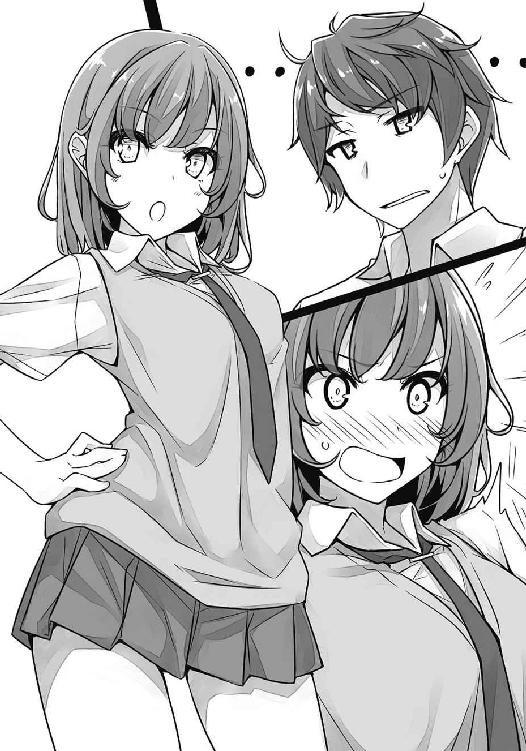
顔を真っ赤にした沙希は、屋上から出ていく。勢いよく扉が閉まった。
「食物繊維摂れよ」
残念ながら、咲太からの助言は聞こえなかったと思う。
今度こそ下駄箱で靴に履き替えた咲太は、学校を出た。
校門を出て駅を目指す。ホームにやってきた藤沢行きの電車に乗り、約十五分の単線路線の旅。
終点の藤沢駅で降りると、改札を出たところのお店でカレーパンを買った。それを食べながら、バイト先へ向かう。
「おはようございます」
挨拶をしながらバイト先のファミレスに入ると、丁度レジ前に店長がいた。
「おはよう。今日もよろしく」
「はい」
出そうになっていたあくびを我慢して、咲太は奥に引っ込むと、休憩スペースに顔を出した。ここに設置されたロッカーの陰が、男子更衣室となっているのだ。女子はきちんとした更衣室があるのだが......世の中は平等にはできていない。
「うす、おはようさん」
そう言って、ロッカーの陰から出てきたのは国見佑真だ。
「ういす」
佑真と入れ替わる形で、咲太は着替えることにした。
「国見」
服を脱いでウェイターの制服に腕と頭を突っ込む。
「ん？」
「面倒だから、先に言っとく。今日もお前の彼女に絡まれた」
「そりゃ、災難だったな」
他人事のように佑真が笑う。
「もう僕か、彼女かどっちかにしろ」
「なんだよ、その究極になってない究極の選択。わかった、今晩、電話しとくわ」
「頼むぞ、ほんと」
学校の制服を脱いでウェイターのズボンにはき替える。
「あ、そうだ。国見」
「まだあんのかよ」
「バスケ部に前沢って先輩いるよな？」
「ん？ ああ、陽介先輩な」
どうやら、フルネームは前沢陽介というらしい。
「どんな人だ？」
「どんなって、ま、うちの学校じゃ一番バスケ上手いな」
咲太はエプロンをしながら、休憩スペースに出た。
「そんでもって、かなりモテる」
「その調子で、もっと嫌いになれそうな情報をくれ」
「なんだよそれ」
佑真はわけがわからんと言って笑い出す。
「なんか揉めたとか？」
「説明しにくいんだが、いい人だと僕の良心が痛む」
事故とは言え、朋絵との関係を変に誤解させてしまった。その上、本来なら行われていたはずの告白をなかったことにしてしまったのだ。
放っておけばいずれ誤解だと気づくと思うが、さすがに少し罪悪感はある。たとえ、失礼なことを吐き捨ててくれた相手であっても。
「ま、あんま人のこと悪く言いたかないけど......」
そこで佑真が言いよどむ。本当に陰口は言いたくないのだろう。
「なるほど、変態趣味があるのか」
「それは知らないけど、昨日の部活帰りにさ、今の彼女が全然やらせてくんないから、もう別れるみたいなこと言ってたし......それ以前の別れた彼女のこととか、よくぼろくそに言ってるからさ。こうはなりたくないな～って思うよな」
佑真にここまで言わせるということは、そっち方面は本格的にどうしようもない先輩のようだ。モテると人間はダメになるのかもしれない。
「てか、彼女いるのか？」
「いるよ。別の学校の三年。かなりかわいい」
「上里とどっち？」
「そりゃ、上里だけど」
彼氏にこう言ってもらえるのは、彼女にとって幸せなことだろう。一瞬、理央の顔が脳裏を過り、少し申し訳ない気持ちになった。
「貴重な情報、サンキュ」
おかげで、前沢先輩のことは嫌いになれそうだ。付き合っている彼女がいるくせに、朋絵に告白をするという神経が咲太には理解できない。
そんな話をしているうちに、時間になったので咲太と佑真は続けて出勤のタイムカードを切った。それから、フロアに出て行く途中で、
「あ、国見君、梓川君、いいかな」
と店長に声をかけられる。
「はい」
返事をしながら振り向くと、店長の隣に小柄な女の子がいた。どこか緊張した面持ち。ウェイトレスの制服姿も初々しい。
「今日から入ってもらうことになった古賀さん。フロアの仕事、教えてあげてね」
そう紹介された人物に、咲太は見覚えがあった。
朋絵も咲太の顔を見て驚いている。
それをよそに、
「あれ、君、うちの学校だよね？」
と、佑真が朋絵に声をかける。
「あ、そっか、国見君と梓川君も峰ヶ原高校だったね。じゃあ、ほんとの後輩ってことで、色々面倒見てあげて」
役目は果たしたと言わんばかりに、店長はすたすたとマネージャールームに引っ込んでいく。しばらくして、仕事の電話をする声が室内からもれてきた。
「こ、古賀朋絵です。よろしくお願いします」
「俺は国見佑真、こっちは梓川咲太で、どっちも二年......って、咲太とは面識あんだっけ？」
ちらりと朋絵が横目で見てくる。
「そういや、前に尻を蹴り合った仲とか言ってたよな？」
朋絵がさっと両手をお尻に回す。
「なんで人に話すの!?」
困惑した様子で、朋絵が抗議してくる。若干涙目だ。
「あんな面白いこと、黙ってたらもったいないだろ」
「信じられない」
朋絵が照れながら睨んでくる。
「僕とは相性悪そうだ。国見に任せた」
「あ、おい、咲太」
制止の声は無視して、咲太は先にフロアへと出た。
朋絵の教育係を佑真に押し付けた咲太は、その分だけフロアの仕事に勤しんだ。
来店客をテーブルに案内して、オーダーを取る。でき上がった料理は即座に席に運び、お帰りのお客さんがいればレジに立った。手の空いた時間には、ドリンクバーにグラスとコーヒーカップを補充した。
店内はディナータイムになると満席になり、待ってもらう来店客も出た。
忙しさのピークの中で、バイト初日の朋絵はというと、一生懸命ぱたぱたと動いている姿が目についた。
与えられた仕事はふたつ。ひとつは食器を奥に下げること。もうひとつは空いたテーブルの再セッティングだ。
小さな体を伸ばして、大きなテーブルを拭いている様子はなんとも微笑ましい。ただ、どうにもどんくさい部分があるようで、重ねた食器をカタカタと鳴らしながら運ぶ後ろ姿には、はらはらさせられた。実際、二度ほど手元から皿がこぼれて、側にいた佑真にナイスキャッチしてもらっている場面を目撃している。教育係が咲太だったら、皿は無事では済まなかったことだろう。
そうこうしているうちに、ディナータイムのピークは過ぎて、客足は落ち着いてきた。テーブルにもちらほら空席ができている。空はすっかり暗くなり、時計の針は夜の八時を少し回っていた。
オーダーを通すために咲太が奥に引っ込むと、キッチンのカウンターの前で、佑真が朋絵にフォークやナイフの手入れを指導している最中だった。雑談交じりに仕事をしている。
「古賀さんは、なんでバイトはじめたの？」
「スマホとか、服とか、色々物入りだったので......国見先輩は？」
「似たようなもんだよ」
話しながらでもふたりの手は動いている。先端部分をお湯につけてあたためたフォークとナイフを、やわらかい布巾で磨いていた。こうすると、ぴかぴかになるのだ。朋絵は新品同然に戻った食器を見て、素直に驚いていた。
その様子を遠巻きに眺めていると、新規の来店客を知らせるベルが鳴った。再び、フロアに出た咲太は、足早に出迎えに行った。
待っていたのは、若い三人組の女子。咲太の顔を見るなり、
「あ」
と、揃って驚きの声をあげる。
見覚えのある制服。それもそのはずで、咲太が通う峰ヶ原高校の夏服だ。襟元をラフにアレンジしている三人組の女子は、朋絵と同じクラスのお友達だ。以前、一緒にいるところを見ている。
一番前に立っているのは、少し気の強そうな目元をした髪の長い子。すぐ後ろに、大きなフレームの伊達っぽい眼鏡をかけた背の低い子。
その眼鏡の子が、
「だから、朋絵ってば、バイトここなんだ」
と、一番後ろに立っていた背の高いショートヘアの子に話しかける。
「そうみたい」
でも、答えたのは一番前の子。
「三名様でよろしいですか？」
「はい」
代表して一番前の子がはっきりとした声で返事をした。その短いやり取りだけで、咲太はこの子が『玲奈ちゃん』だとわかった。佇まいが咲太のクラスにいる女子......佑真の彼女でもある上里沙希によく似ている。クラスの中で、『一番自分がかわいい』という事実を自覚している女子特有の生き生きとした自信のようなものが表情から見て取れた。
真っ先にスカートを短くして、制服の襟を崩して、ネクタイはおしゃれな巻き方にする。周囲の女子は揃ってそんな彼女の真似をする。
『かわいい』は正義。『イケてない』のと『ダサい』は悪。そんな教室内のルールの下で、女王の座に君臨する存在。
「こちらでよろしいですか？」
三人を案内したのは、四人掛けのボックス席。
「はい」
またしても答えたのは玲奈だった。席に座る彼女の横顔を見ながら、咲太は朋絵が前沢先輩の告白から逃げた理由を思い出していた。
玲奈の自信満々なこの雰囲気なら、朋絵の言っていた通りの事態になるかもしれない。実際、グループから追い出されるなんてことは、どの教室でも起こっているのだ。今日、咲太のクラスでも、そうした状況をまざまざと見せつけられたばかり。
朋絵が気にしすぎということはない気がしてきた。
玲奈と向かい合う側に、あとのふたりが遅れて座った。なんだか、いつも決まっているみたいな迷いのない座り方。たぶん、朋絵も入れた四人で行動するときの指定席なのだ。玲奈の隣には朋絵が座ることになっているのだろう。
「お決まりになりましたら、ボタンでお知らせください」
「あ、待って」
「お決まりですか？」
オーダー用の端末を開く。
「朋絵のこと、本気なんですか？」
「すいません。当店では『トモエノコト、ホンキナンデスカ』は扱っていないもので」
「真面目に聞いてるんですけど」
敬意を一切感じないとりあえずの敬語。それでも、不思議と嫌悪感はなかった。逆に、三人の視線からは妙な期待と好奇心が伝わってくる。
「桜島先輩に振られてすぐだから、そこは信用してませんから」
「これ、何の話だ？」
状況がはっきりしないので、玲奈にそう質問する。すると、
「朋絵、確かにかわいいけどぉ、どこがよかったんですか？」
と、眼鏡の子から逆に意味不明な質問をされた。
「何か勘違いしてるぞ、たぶん」
「隠さなくても、もう知ってますよぉ」
またしても、眼鏡の子がにたにたと笑う。
「あ、朋絵、いたよ」
店内に目を向けていた背の高い子が口を挟む。丁度、奥から朋絵が出てきたところだった。視線を感じたのか、揃ってそちらを見ていた咲太たちとばっちり目が合った。
朋絵は一瞬びくっとしたかと思うと、落ち着きをなくしたようにきょろきょろとする。一度、奥に引っ込むような素振りを見せたが、思い直してぱたぱたと小走りで近づいてきた。
「み、みんな、ほんとに来てくれたの？」
「絶対に行くって言ったじゃん」
「制服、かわいい」
「うん、かわいい」
わずか数秒にして、周囲が女子高生の空気に支配されてしまう。かわいいかわいい合戦がはじまった以上、咲太の居場所などここにはない。若々しくて、華やかで、自分たちのことしか見えていない自由な感じ。一刻も早くこの場を立ち去りたい。
「先輩、朋絵のこと遊びなら許しませんよ」
朋絵の腕を引いた玲奈が、咲太をじっと見つめてくる。本人的には威嚇のつもりなのだろうが、正直、迫力不足だ。日々、麻衣の威圧感に晒されている咲太にすれば、そよ風も同然。
「れ、玲奈ちゃん、いいよ」
困った様子で、朋絵が曖昧な表情を見せる。咲太にはちらちらと横目で合図を送ってきた。
何が起きているのかは、ここまでの会話の流れでだいだい理解できた。どうやら玲奈たちは、前沢先輩と同じような誤解をしているらしい。そして、その誤解を、朋絵は解いていないどころか、解きたくないようだ。
「こういうのは最初が肝心でしょ。主導権取らないと」
「う、うん」
ちらりと、朋絵が横目で助け舟を求めてくる。丁度、客がやってきたので、
「古賀さん、お客さん案内して」
と、指示を出してあげた。
「ご注文がお決まりになりましたら、ボタンでお呼びください」
玲奈たちにはお決まりの文句を告げて、咲太は咲太で別のテーブルのオーダーを取るために離れていく。
朋絵は「ごめん」と玲奈たちに両手を合わせてから、入り口に立つ客のもとへと小走りで向かっていた。
家族連れの四人の親子からオーダーを取る際、咲太は玲奈たちのテーブルからずっと視線を感じていた。それをかわすように、咲太は奥に引っ込んだ。少し遅れて朋絵もやってくる。
「あの、先輩に話が......」
「古賀も九時上がりだろ？」
「え？」
「話はバイトが終わってから」
「でも、その、色々と説明したいことが......」
手をバタバタと上下に動かしながら、朋絵はしどろもどろになっている。
「事情を聞くまで、お友達の誤解はそのままにしといてやるから」
「わ、わかった」
朋絵は佑真に呼ばれて仕事に戻っていく。その後ろ姿を見ながら、咲太は自分の与り知らぬところで、事態がややこしい方向に進んでいることを感じていた。
３
咲太がバイトを上がったのは午後九時二十分頃。今日は客の切れ間がなく、予定の九時丁度には上がれる状況ではなかった。
それは朋絵も同じで、初日から結構ハードな日にぶつかって大変そうにしていた。
着替えて店を出た咲太は、裏の駐輪場に止めてある自転車を椅子代わりにして跨った。先日、土砂降りの日に置いて帰ったのだ。おかげで、今日は楽に帰れる。
一分待ってこなかったら帰ろうと心に決めていた咲太だったが、十秒とかからずに朋絵はスマホを見ながら、店から出てきた。
咲太に気づくと、スマホを握り締めたまま駆け寄ってくる。
「実は先輩に......」
神妙な面持ちで切り出してきた。
「断る」
「まだお願いがあるって言ってない」
朋絵は不満げだ。
「断る」
「せめて話を聞いてよぉ」
「聞くのを断る」
「なしてぇ」
「大方、僕と古賀が付き合っている的な誤解を、そのままにしてほしいとかだろ？」
ため息交じりにそう口にする。思春期症候群のことで困っているなら協力する気にもなるが、今言ったようなことは話が別だ。
「先輩、心が読めるとね？」
驚いた様子で、朋絵が胸に両手を重ねる。お国の言葉が出ているが、本人は気づいているのだろうか。たぶん、気づいていない。
「昨日、古賀が言ったんだろ。友達の憧れの人を寝取るとか、ありえないって」
「そこまでは言ってない」
「友達の憧れの人に、自分が告白されるとか、空気が読めてなさすぎるだっけ？」
「そう......」
「その上で、断る」
「やけん、なしてぇ」
「てか、他にもっと気にすることがあるだろ」
たとえば、六月二十七日の繰り返しが終わって、二十八日が来た理由とか。二十七日が繰り返されていた理由とか......。前に咲太が考えた通りとは限らない。
「気にすること？」
「思春期症候群のこと」
「それは、今日になったからもういいじゃん」
きっぱりと朋絵が言い切る。
「今はそれどころじゃないの！ ピンチなの！」
どうやら、朋絵にとっては友人関係を維持することが一番大事で、そして、最優先事項らしい。思春期症候群のことなど、どうでもよくなるほどに......。
この様子では、その件について語ったところで時間の無駄になりそうだ。
仕方がなく、咲太は朋絵の用件に話を戻すことにした。
「どんな理由があれ、嘘はよくないだろ」
「うっ」
真っ向勝負の正論に朋絵が露骨に怯む。
「前沢先輩の気持ちも考えてやれよ」
佑真に話を聞いた限りだと、正直、どこまで朋絵に本気なのかわからないが......。今もまだ彼女とは別れていないようだし、朋絵は簡単にやれそうな相手だと思われているんじゃないだろうか。ぱっと見は、押しに弱そうな感じだ。
「まさしく正論......」
咲太の言葉に、朋絵は肩を落としてしょんぼりしている。
「ま、何より、僕が面倒くさい」
「それはなんか腹立つな！」
「だいたい、誤解をそのままにっていつまでだよ。三年生が卒業するまでか？ 無理だろそんなの。絶対にばれる。そしたら余計に厄介なことになるぞ」
「そこはちゃんと考えてきたよ」
「は？」
意外な返しに間抜けな声が出た。
「あ、信じてないでしょ」
「信じてないっていうか、どうでもいい」
「ほんと、腹立つ！」
「そうか、悪かった。顔も見たくないだろうから僕は消える」
そう言って、ペダルを力強く踏む。走り出した自転車は、残念ながらすぐに止まってしまった。
振り向くと、朋絵がサドルの後ろを捕まえて踏ん張っている。
「誤解してもらうのは、一学期の間だけだから。お願い！」
「いや、別に古賀の作戦に興味はないし」
「そのあとは夏休みになっちゃうから、学校がない期間に、関係がうやむやになったことにすればいいでしょ？ 二学期は普通にできる」
「計画的な犯行だな。お前、意外と腹黒いのか？」
「必死なの！」
「それは見ればわかる」
帰ろうとする咲太の自転車を、腕力で引き留めているくらいだ。
だが、計画には色々な穴があるんじゃないだろうか。ひとつは咲太のこと。
「自分で言うのもなんだが、学校内の評判が最悪な僕と、付き合ってる的なことにするのはいいのか？」
「最近の先輩、一年生の間じゃ、一周回ってありってことになってるから平気だと思う」
「なんだそりゃ」
どこを一周回ったのだろうか。詳しく聞きたい。いや、嘘だ。
「グラウンドの中心で愛を叫ぶなんて普通ありえないし」
「それ、笑いのネタにされてるだけだろ」
とは言え、今思い返してみると、玲奈たちの態度は意外と普通だった。二年の教室では、相変わらず誰も話しかけてこないのに、玲奈たちは向こうから話しかけてきたのだから。
元々、『中学時代に同級生を病院送りにした』という噂が流れ、咲太が学校内で微妙な立場に置かれたのが約一年前。その当時の空気をリアルタイムで経験していない朋絵たち一年生にとっては、それほど深く根付いた話題ではなかったのかもしれない。「なんか先輩たちが言っている」くらいの捉え方。
それに加え、一学期も終わりが近づき、一年生も独自の文化を持ちはじめたことで、学年ごとのずれが生じてきているようだ。
「あたしは、ああいうのちょっと憧れる」
「古賀には絶対しないけどな」
「されたら、すごく困るからいいけどぉ」
なんにしても、女子高生の考えることはよくわからない。
「あ、そだ。『付き合ってる』だと急すぎるから、その手前くらいがいいな」
「なに勝手に話を進めてんだ」
「先輩以上恋人未満的な？」
「そんな微妙なライン、付き合っているふりより難易度高いだろ。お前、大丈夫か？」
「大丈夫って何が？」
「恋人っぽいふりとか」
まじまじと朋絵を観察する。見慣れた峰ヶ原高校の夏服。白いブラウスに、短いスカート。紺のソックスとローファー。全部が小さくコンパクトにバランスよくまとまっている。
「ま、古賀は男と付き合ったことくらいあるか」
イマドキ女子高生は進んでいるはずだ。
「う、うん。短い期間だったけど......」
視線を逸らしながら、朋絵が肯定する。
「ふーん」
「な、なに？」
「大人だなあと思って」
「なんか感じ悪い。いい？ 先輩もちゃんとあたしのことを好きな感じにしてよ？」
もはや、朋絵はやる前提で話を進めている。咲太は了承した覚えがないのに。
「お前さ、自分が何をしようとしているか、わかってるのか？」
嘘をつく主な相手は、確かに前沢先輩ひとりでいいのかもしれない。だが、その嘘がばれないようにするためには、その周囲も欺いていく必要がある。事実、すでに朋絵は三人の友達に嘘をついているわけだし、その範囲は徐々に広がっていくことになるだろう。
誰と誰が付き合っているなんて情報は、放っておいても勝手に拡散する。それが嘘であろうとなかろうと。
学校内で不名誉な知名度を誇る咲太絡みの話題となればなおさらだ。
つまり、前沢先輩ひとりに嘘を信じ込ませるために、咲太と朋絵は学校全体をだまさなければならないのだ。
「全校生徒の約千人に嘘をつくってことだぞ」
決して小さな嘘ではない。
「わかってるよ、そんなこと」
咲太の話を聞いた上でも、朋絵に驚きや戸惑いはなかった。
「まじか」
「まじだよ」
これは、肝が据わっていると考えるべきか、純粋さがねじまがった真っ直ぐさと捉えるべきか、判断に困るところだ。
「とにかく、お願い！」
ぱんっと両手を合わせて拝んでくる。
「あのな......協力して、僕に何の得がある」
マイナスの要素なら色々と思いつく。主に麻衣に関連して。お付き合いは遠のくばかりだ。本来の歴史では、咲太と麻衣はもう彼氏彼女になっていたはずなのだ。今頃、イチャイチャラブラブしていたはずなのに......。
「協力してくれたら、ひとつだけ何でもするから」
「いや、別に古賀にしてもらいたいことはひとつもない」
咲太は即答した。
「な、なんでもするのに？」
自信のなさそうな上目遣い。なかなかツボを押さえている。
「年頃の娘が軽々しく男になんでもするとか言うな」
ちょっと興奮してしまう。
「だ、だって、このままだと、あたしクラスに居場所なくなるんだもん」
しゅんとした様子で、朋絵は自分の指を深刻そうに見つめていた。
「休み時間もひとりで、お弁当もひとりで食べて、トイレもひとりで行くのは嫌」
「トイレはひとりで行けよ」
まさか、個室に一緒に入るわけでもあるまい。それとも咲太が知らないだけで、そうなのだろうか。女子ってすごい。
「先輩には、ばれてるっぽいから言うけど、あたし、中学までは福岡で、こっちには高校からの友達しかいないし......玲奈ちゃんと、日南子ちゃんと、亜矢ちゃん」
「今日の三人か？」
「うん」
俯くように朋絵が頷く。
「ひとりはひとりで楽だぞ。周囲に合わせる必要ないし、なってみれば、思ったほど寂しいとは感じない」
咲太の場合、佑真や理央、それに最近は麻衣がいるおかげでもあるが。
「別に寂しいから嫌なわけじゃないし」
「はあ？ ならなんだよ」
「ひとりは......恥ずかしい」
その言葉を、朋絵は小さな声で呟いた。
咲太の胸に、何かがすんなりと溶け込んでくる。
「みんなから、『あいつ、いつもひとりだ』って思われるのは嫌」
「そっか」
妙に納得した気持ちだった。ペダルに置いた足も、自然と地面に下ろしていた。
恐れているのは孤独そのものではない。みんなの輪から外れている自分を、みんなに見られるのが嫌なのだ。みんなに噂をされるのが嫌なのだ。どこかバカにされたように笑われることが、なによりも嫌なのだ。
寂しさよりも、そうした恥ずかしさの方が、未熟な心を深く傷付ける。情けなくて、どんどん人を卑屈にさせていく感情......。自信を奪い去り、心を閉じ込めていく。
「......」
黙って俯いてしまった朋絵の頭に、咲太はぽんっと手を置いた。
「先輩？」
不安そうな上目遣いで咲太を見上げてくる。
以前、かえでがいじめに遭ったとき、同じことを言っていた。
──学校行くの......恥ずかしい
いじめられている自分をみんなに見られたくないという気持ちが大きくなりすぎて、かえでは外に出られなくなってしまった。他人の視線をこわがるようになった。
その頃のかえでと、今の朋絵が咲太には重なって見えていた。
ハブられる切っ掛けなんて些細なものだ。何が原因になるかわかったものではない。ちょっとしたことで、そういう空気が生まれて周囲に一瞬で感染する。そうなったらもう手遅れだ。その病を治療するのは難しい。
特に、女子のグループ文化は、男子とは明らかに違う。表向きはどうであれ、傍から見ていても、グループ同士の仲がよろしくないのがわかる。今のグループと折り合いが悪くなったからといって、別のグループに移籍できる確率は低そうだ。
「古賀って、メイングループだよな？」
「え？」
「クラスで一番かわいい女子の集まり」
「それ、頷きづらい」
口を尖らせながらも、何気に朋絵は肯定している。
メイングループのリーダーに嫌われるのは、確かに何かと厄介だ。クラスで一番の権力者である彼女には、誰も逆らわない。逆らえない。機嫌を損ねたら、孤独の島への島流しが待っている。だから、無条件で賛同する。彼女がかわいいと言えばかわいくて、嫌いと言えば嫌いなのだ。
そして、今回の場合、そのポジションにいるのが香芝玲奈であり、よりにもよって、朋絵は玲奈が憧れている前沢先輩に好かれてしまった。
朋絵が真剣に悩むのも今ならわかる。
咲太は、一度大きく息を吐き出すと、
「わかった」
と、しっかりそう言葉にした。
「え？」
「全校生徒約千人に、嘘をついてやるって言ったんだ」
「ほんとに？」
「ただし、条件がある」
「か、体!?」
自分を抱くようにして朋絵が身構える。
「誰が古賀の貧相な体に欲情するか。失礼だな」
「失礼はそっち！ 絶対！」
「とにかく話を聞け」
「う、うん」
緊張した面持ちで朋絵が頷く。ごくりと喉を鳴らしていた。
咲太はひとつ息を吐いたあとで、
「グループリーグの第三戦、死ぬ気で日本代表を応援しろ」
と、大真面目な顔で告げた。
「は？」
朋絵が素っ頓狂な声を出す。
「もし、負けたら、この話はその時点でなかったことにするからな」
「意味わかんない！ どういうこと？」
必死に説明を求めてくる朋絵には応じず、
「いいか、絶対だぞ」
と、咲太は念を押して、再びペダルに足を乗せた。
「あ、待って」
「話は以上だ」
「サッカーの応援はちゃんとする！ まだお願いがあるの......」
振り向くと、朋絵はなにやらもじもじしていた。
「あ、明日なんだけど」
「明日？」
「先輩、バイト二時までだよね？」
「そうだけど」
「お、終わったあと......で、で、で......」
「デコピンだな」
「違う！」
おでこを隠しながら、朋絵が大きな声を出す。
前の道を横切っていった大人のカップルが、「痴話喧嘩かしら」と、くすくす笑っていた。それでなおのこと顔を真っ赤にした朋絵は、
「デ、デートして」
と、のたまったのだった。
話が終わったあと、咲太は朋絵を家の近くまで送り、それからのんびりと自転車を走らせながら自宅を目指した。意外と朋絵は近所に住んでいるようだ。
六月の終わり。夏は本番を迎えようとしていて、その蒸し暑さの中、風を切って走るのはそう悪くなかった。
薄暗い空を白い雲が横切っていく。星空が顔を覗かせた。咲太でも知っている夏の大三角。こと座のベガ。わし座のアルタイル。織姫と彦星。あとひとつは、少し考えて思い出した。
はくちょう座のデネブだ。教えてくれたのは、咲太にとって初恋の女子。中三のときに出会った牧之原翔子という名の女子高生だった。
今はどこで何をしているのかわからない。連絡先も知らない。もう二度と会うことはないであろう人物。
顔を思い浮かべようとしても、今となっては記憶が曖昧で怪しい。上手くできない。その代わりに、ぱっと思い浮かんだのは、不機嫌そうな麻衣の表情だった。
「さて、どうするかな」
別れ際。朋絵が口にした言葉が脳裏を過る。
──デ、デートして
それに対して、咲太は、
「なぜだ」
と冷静に質問を返した。
「玲奈ちゃんに、デートはしないのって聞かれて、そういう感じに......」
「どういう感じだ」
「週末はデートするって感じ」
「まさか、調子こいてするって言ったわけか？」
「先輩、目ぇこわい！」
「やっぱり、デコピンだな」
さっと再び朋絵がおでこを隠す。
「けど、そんなの、適当に『あ～、週末はハッスルした～』ってごまかせばいいだろ」
「念のため、写真を撮っておきたい」
「......お前、意外と抜かりないな」
わからない話ではない。「昨日デートだったのぉ」となれば、「写真とかないの？」、「見せて見せて」という展開になってもおかしくない。そうした場合、一枚も撮ってきていないのは不自然に思われるだろう。このご時世、ケータイやスマホには当たり前のようにカメラ機能が搭載されているのだ。迷惑なことに......。
そんなことがあって、明日は朋絵とデートをしなければならなくなった。
話は妙な方向に転がっている。
このことを麻衣にどう伝えたものか。ただでさえ、昨日、朋絵と抱き合っている場面を目撃され、機嫌がとても悪いのだ。そこに、さらに朋絵の話題を積み重ねようものなら、麻衣は遠慮することなく咲太に苛立ちをぶつけてくるだろう。
自分を不愉快にさせた罰であり、当然の権利だと言わんばかりに、咲太にいじわるをしてくるに違いない。無理難題を楽しそうに押し付けてくるに決まっている。負い目がある分、咲太が断れないのをいいことに。そして、困っている咲太を見て、麻衣は心底楽しそうに微笑むのだ。
その状況はなんとも......。
「やべ、すげえ楽しそう」
想像したら、全然悪い気はしなかった。そのまま、顔をにやつかせながら、咲太は家まで自転車を軽快に走らせた。
４
バイトの疲れを癒すため、ゆっくりと風呂に浸かっていた咲太が、パンツ一丁で出てくると、リビングのソファに座って、かえでが珍しくＴＶを見ていた。
やっているのは動物番組......ではなく、ある動物園に勤務する飼育員さんに密着したドキュメンタリーのようだ。生まれたばかりの赤ちゃんパンダの世話に頭を悩ます毎日。
猫のなすのを胸に抱いたかえでは、まだ白一色の赤ちゃんパンダがよちよちと歩くさまを熱心に見つめている。
それを横目に捉えつつ、咲太は冷蔵庫からスポーツドリンクを出して、コップに注いだ。一気に飲み干す。
あたたまった体の中心に、冷たさが心地よく流れ込んでくる。もう一杯飲もうと冷蔵庫を再び開けたところで、
「あっ」
と、かえでの声がした。
「お、お兄ちゃん、この人！」
画面を指差して、何やら必死にアピールしている。
「知ってる人でも映ったか？」
「そうなんです！」
「は？」
冗談のつもりだったのだが、かえでとの会話が成立してしまった。何事かと思い、冷蔵庫の陰から顔を出してＴＶに目を向ける。
「......」
確かに知っている人物が映っていた。
スポーツドリンクのＣＭ。それも、今、咲太が手にしている青いラベルのやつ。画面に向かって、「一口、あげよっか？ ふふ、やっぱだ～め」と悪戯っぽく笑い、白い砂浜の砂を蹴って画面の奥へと走り出したのは麻衣だった。
「こ、この人、前にお兄ちゃんがつれてきた人ですよね？」
「そうだな......」
正真正銘、麻衣だ。芸能人の桜島麻衣。
しかし、ＣＭの出演が決まっていたことなど、咲太は一言も聞いていない。
短いＣＭはすぐに終わってしまう。
丁度そのタイミングで、インターフォンが鳴った。
「なんだ、こんな時間に......」
時計はすでに十時を回っている。
疑問に思いながら、受話器を取って「はい」と応じる。
「私」
聞こえてきたのは短い返事。少しむすっとしたその声は、今さっきＴＶから流れてきたものと同じだった。
三分後、突然やってきた麻衣を家にあげた咲太は、パンツ一丁のまま自室で正座をさせられていた。正面のベッドには、麻衣が足を組んで座っている。不機嫌そうな瞳で、咲太を冷たく見下ろしていた。
「どうして、言い訳しに来ないのよ」
「お言葉を返すようで恐縮ですが、伺いましたけど、お目通り願えなかったんです」
事実、今日、学校で休み時間や帰りのＨＲのあとに、麻衣が在籍する三年一組の教室を咲太は訪ねた。だが、麻衣の姿はなかったのだ。
「私が悪いって言いたいんだ」
「僕の努力が足りませんでした」
「わかってるなら、言うことあるんじゃない？」
「えっと、麻衣さん、なんか気合入ってる？」
玄関を開けたときから気づいてはいたが、普段とは明らかに雰囲気が違う。ばっちりメイクをしているし、髪もプロの手が入っている感じだ。毛先は内側を向いていて、かわいい印象に仕上げられていた。いつもの麻衣とは方向性がちょっと違う。
「今日、ファッション雑誌の撮影だったの。咲太のためにしてるんじゃないから」
だから、学校にはいなかったようだ。
「めちゃくちゃかわいいです」
「知ってる」
「好きです」
「ふざけてると、踏むわよ」
麻衣が黒タイツに包まれた足を上げる。その足先を、正座している咲太の膝の上に、本当に置いてきた。
そこから伝わってくるのは麻衣の体温。すべすべした黒タイツの感触。
これは貴重なご褒美だ。
思わず、顔がにやけそうになる。
「悦ぶな」
どうやら顔に出ていたらしい。麻衣が足を下げてしまう。もったいないことをした。
「そういや、麻衣さんのＣＭ見たんだけど」
「そう」
麻衣は退屈そうに視線を窓の外に逸らす。
「僕、聞いてなかったんですが」
「流れる時間は決まってるし、放送の直前で教えて驚かそうと思ってたの。それなのに、誰かさんが一年生とイチャイチャしてたから。何か言うことは？」
「すいませんでした」
「ほんとに反省してる？」
「してます」
「どうだか」
「してますって！ けど、この状況では非常に言いにくいんですが」
「なによ？」
「その一年生のことで、ひとつ相談が」
一学期の間、朋絵と少しいい関係であることにしなければならない。麻衣に言わずに、二面作戦に出るのは無謀すぎる。どうせばれる。ならば、早々に言ってしまった方がいい。
とはいえ、すでに不機嫌な麻衣を目の前にすると、なかなか言い出しにくいものがある。
「咲太」
「はい、なんでしょうか」
「とりあえず、服着たら？」
咲太は未だにパンツ一丁のままだった。
膝までのズボンとＴシャツを着たあとで、咲太は再び正座すると、麻衣の顔色を窺いながら、朋絵の件について説明した。昨日、空き教室になぜ朋絵がいたのか。どうして抱き合う事態になったのか。前沢陽介というバスケ部の先輩に告白されると、朋絵は非常に困った状況に陥ることも、きちんと伝えた。そして、今日、その朋絵がたまたまバイト先に新人として入ってきて、一学期の間は『先輩以上恋人未満』的な関係にしておいてほしいと頼まれたのだと。包み隠さず、咲太は全部を話した。
ただし、思春期症候群のこと......咲太と朋絵が六月二十七日を三度経験したことや、麻衣から告白のオッケーをもらったことなどは一切言わないでおいた。
順調に芸能活動を再開した麻衣に、余計な心配はかけたくなかったし、お付き合いのオッケーをもらえたことを言うのは、ルール違反のような気がしたのだ。
話を聞き終えた麻衣は、
「ふ～ん、女子高生って大変ね」
と、素っ気無い感想をもらした。
自分もれっきとした女子高生のはずなのに、麻衣にはその自覚がないらしい。
「事情はわかった」
しかも、割とあっさり納得してくれている。何のお咎めもないのだろうか。
「それだけ？」
「私が叱ると、咲太悦ぶじゃない」
見事に見透かされている。
「咲太の場合、罰を与えない方が罰になるみたいだし」
「もっと構ってください」
「嫌よ」
「えー」
「甘えるな」
これはこれでよかったと思うべきか。いや、問題にされないのは、よくない気がする。
「でも、なんか釈然としない」
「どこが？」
「恋人のふりなんて嘘、咲太嫌いでしょ」
「恋人じゃなくて、先輩以上恋人未満のふり」
「どっちも一緒じゃない」
「ま、こんな嘘、好きなやついないと思うけど」
「だから、釈然としないの。何を隠してるのよ」
身を乗り出して麻衣が睨み付けてくる。
「実はさっきから麻衣さんの足を見て興奮してる」
「そ、それは知ってるわよ」
スカートの裾を押さえながら、麻衣が足を組み直す。
「あ、あまりじっと見ないの！」
「減るもんじゃないし」
「いいからさっさと白状しなさい」
麻衣の目は据わっている。これは本気だ。
「古賀のやつ......かえでと同じこと言ってたんですよ」
「なんて？」
「前沢先輩に告白されたことが友達にばれて、その子のいるグループにいられなくなったらクラスに居場所がなくなるって......そんな自分は恥ずかしいから嫌だって」
ゆっくりと咲太は言葉を噛み締めるように声にした。
──恥ずかしい
朋絵がその言葉を口にしなければ、咲太は先輩以上恋人未満のふりをしてほしいなんて提案、絶対に引き受けてはいなかった。
「かえでのときは、最悪のところまで行ったんで......」
そのときのことが脳裏を過った。
学校に行くのを拒み、部屋にこもり、挙句の果ては思春期症候群に苛まれた。全身にできた痣と切り傷。
その現実を受け止めきれず、母親は精神を病んで病院のお世話になっている。おかげで、今は離れて暮らしているのだ。
切っ掛けはある女の子のメッセージをかえでが無視したとか、そんな些細なこと。
小さな綻びから事態はバカみたいに大きくなって、あれから二年が経った今も、咲太とかえでの生活に影響を残している。
ほんの小さなことで、人生はこれほどまで変わってしまうのだ。だから......。
「今回はどうにかしたいと思ったのかも」
正しい判断をしたという自覚はない。何もできなかった過去への罪滅ぼしというか、気持ちの整理を朋絵でしようとしているだけなのかもしれない。あのときのわだかまりはまだ胸の中にある。
「咲太」
「なんですか？」
「つまらない」
「真面目な話をしたらそれ？」
「妹さんのこと持ち出されたら、文句なんて言えない」
いや、今のは十分文句だと思う。態度でも不満をあらわにしている。
「咲太はわかってると思うけど」
「なんです？」
「その嘘の責任は、ちゃんと取りなさいよ」
「絶対ばれないようにするし、墓場まで持っていきます」
「黙ってるのも大変だって、わかってるならいいの」
「前沢先輩ってのが、彼女持ちのくせに、古賀にちょっかい出すわ、今の彼女が全然やらせてくんないから別れるとか......そういうのまじで言い出す人みたいなんで、気は楽です」
「男ってサイテー」
なぜだか、麻衣は咲太を侮蔑の眼差しで見ている。
「僕は麻衣さん一筋だって」
「先輩以上恋人未満のふりをしてたら、あの一年生のこと本気で好きになったりして」
「信用ないなー」
「言っておくけど、一学期が終わるまでしか、私、待たないからね」
「逆に、ちゃんと今回の件が終わったら、付き合ってくれるってこと？」
「それは......」
麻衣がそれとなく視線を逸らす。
「そのときの気分しだい」
「えー」
「なんで咲太が不満そうなのよ」
「麻衣さんのご褒美が待ってたら、がんばれるのに」
「自分で勝手に抱え込んだ問題のくせに図々しい」
そう言ったあとで、麻衣は何か思い出したように、「あ」の形に口を開けた。
「咲太、明日バイト？」
「はい」
「何時まで？」
「二時まで」
「ふ～ん」
なんだか上機嫌に麻衣が足をぶらぶらとさせはじめた。その目は、咲太に何かを期待している感じだ。
「私、明日の午後は予定空いてるの」
デートに誘えということのようだ。
「鎌倉のアジサイ、まだ咲いてるわよね？」
行き先まで決定している。
逆にここまで期待されると、非常に次の言葉を言い出しにくい。
「あの」
おずおずと咲太が口を挟む。その態度を見て、麻衣は何かを察したようだ。すぐさま退屈そうな顔に戻ってしまう。
「へー、あの一年生とデートの約束があるんだ？」
「デートと言うか、デート的な何かと言うか」
「......」
「麻衣さん？」
「......は～」
やる気のないため息をもらしている。
「あっそ」
「......」
「......」
もっと文句を言われるかと思ったが、それ以上の罵声は飛んでこない。
「『私より、あの子のこと優先するんだ？』とか言わないの？」
「なんで、私が焼きもちなんて焼かなきゃいけないのよ」
「えー」
「咲太が私にベタ惚れなのは知ってるし」
「ま、そうだけど」
「あの一年生に負ける気もしない」
「うわー、すげえ自信」
さすが桜島麻衣。麻衣はこうでなければいけない。
「だから、今回だけは大目に見てあげる」
「ありがとうございます」
「でも、そうね......」
麻衣は考える素振りを見せると、二秒後には口元にいじわるな笑みを浮かべた。
「ただ許すのも今後のためにならないから、相応の誠意を見せなさい」
「何をしろと？」
「自分で考えなさいよ」
「じゃあ」
咲太は身を乗り出すと、四つん這いの体勢で、ベッドに座った麻衣との距離を詰めていく。
「ちょ、ちょっとなに？」
狼狽した麻衣が後ろに下がる。けど、すぐに背中は壁にぶつかってしまう。
構わずに咲太が前進を続けると、
「迫ってくるな！」
と、麻衣の足の裏が飛んできた。顔面に直撃。
「あだっ」
鼻を潰されてのけ反った咲太は、ベッドから仰向けに転がり落ちた。
「なにする気よ？」
「誠意を表そうかと」
「それは性欲」
「あ、そうかも」
「物事には順序があるでしょ。まだ付き合ってもいないのに」
「これを機にお付き合いを」
「しない」
「へこむな～」
「誰のせいよ」
冷たい目が咲太を睨んでいる。
「全面的に僕が悪いです」
「なら、反省しなさい」
咲太は三度正座で座った。
「デートだけど、麻衣さん来週の日曜日は？」
「明日から一週間、ドラマの撮影で私は鹿児島」
「あー」
「......」
姿勢を正した麻衣が、訝しげな視線を向けてくる。
「なんか驚きが薄い」
それは、麻衣のドラマ出演に関しては、前に聞かされていたからだ。ただし、聞いたのは最初に経験した『六月二十七日』のこと。
「そりゃ、麻衣さんだったら、すぐにドラマの役くらい取れるだろうし」
「そうだけど......」
何かが引っかかるのか、麻衣の目から疑いの色は消えない。
「いいなー、鹿児島」
「遊びに行くんじゃないのよ」
麻衣がベッドの縁に座り直す。その際、足に紙袋が当たって倒れた。麻衣が自分で持ってきたものだ。それを掴むと、「はい」と咲太に差し出してくる。
「ん？」
「あげる」
素直に受け取っておく。
中からは、かわいい感じのワンピースが出てきた。当然、女子用の......。
「鹿児島に行っている間、これを麻衣さんの代わりだと思えと？」
「妹さんによ」
そう言った麻衣は心底呆れた様子だ。
「は？」
だが、咲太には言っている意味がよくわからない。
「今日、ファッション雑誌の撮影だったって、さっき話したでしょ？ 使った衣装をくれたから」
つまり、麻衣の脱ぎたて。そう思うと、いい匂いがする気がした。
「私が着るにはフェミニンだし」
広げてみると、スカートの裾や袖口などにフリルがついている。
「だから、かえでに？」
「身長、私より少し低いくらいだったと思うから、サイズはあってると思う」
「いや、そんな心配はしてないんですが......」
なんでいきなりかえでに洋服をプレゼントなのか、それがぴんと来ない。
「少しは妹さんの服装に気を配りなさいって、遠回しに言ってるのよ」
「今、ストレートに言いましたよね？」
「パンダのパジャマも、お気に入りならいいけど......今年で十五歳でしょ？」
「はい」
「おしゃれをしたら、ちょっとは外に出てみたいって気持ちになるかもしれないし」
「あぁ......」
今の一言ですべて納得した。麻衣はかえでの心配をしてくれているのだ。かえでがこの先もずっと家の中だけで過ごすわけではないと思ってくれているのだ。
同情するのではなく、「かわいそうだね」と口先だけで言うのでもなく......向き合おうとしてくれているのだとわかった。
「......」
思わず、麻衣を見つめてしまう。
「な、なによ、じっと見て」
「麻衣さんがかえでのこと考えてくれてるのがうれしくて」
「当たり前でしょ、そんなの」
なんでもないことのように麻衣は言ってのける。咲太をからかっているときは、子供っぽいことをするくせに、時々こういう大人びた一面を見せられるから困る。たまらない気持ちにさせられる。敵わないと思わされるのだ。
「かえで、呼んで来ます」
すっと立ち上がる。
「大丈夫？」
「麻衣さんがこわい顔しなければ」
「しないわよ」
むすっと咲太を鋭い視線で突き刺してくる。
「その顔なんだけど」
「どの顔のこと？」
しれっと苛立ちを引っ込めると、麻衣はやさしく微笑みかけてきた。
この変わり身の早さは、ある意味余計にこわい。言うと本気で怒られそうだったので、今はやめておいた。
ドアノブを掴んで勢いよく開ける。直後、がんっと何かにぶつかってドアは開かずに止まった。五センチくらいしか開いていない。
「うっ......」
外から聞こえたのはかえでの呻き声。
ゆっくりとドアを開けると、今度はちゃんと開いた。
部屋の前に、おでこに手を当てたかえでが蹲っている。
「なにしてるんだ？」
視線を上げたかえでと目が合う。しまったという感じで、口をぽっかりと開けている。
「違います」
まだ何も言っていないのに、かえではそんなことを言ってくる。
「忍者ごっこをしていたわけじゃありません」
「僕は盗み聞きをしてたのかと思ってたんだが......」
もっと高度な遊びをしていたようだ。先月まで読んでいた時代小説の影響だろうか。恐らくそうだ。
「ま、丁度いい」
「何がですか？」
きょとんしたかえでを咲太は自室に引っ張り込んだ。
かえではすぐさま麻衣を気にして、咲太の背中に隠れる。
「こんばんは」
麻衣の挨拶に、かえでが少しだけ顔を出す。
「こ、こんばんは」
消えそうな声だけど、麻衣にも聞こえたはずだ。
「かえで、これ、麻衣さんから」
フリルのついたかわいいワンピースを、咲太は背中にしがみ付いたかえでに押し付ける。戸惑いながらも受け取るかえで。ようやく離れてくれた。
「これは？」
疑問を口にしながら、両手でワンピースを広げている。すぐに視線は釘付けになっていた。どうやら興味を持ったらしい。
「かわいいです」
「着てみたら？」
そう麻衣に言われたかえでは、判断を仰ぐように咲太を見てきた。
咲太がゆっくり頷くと、かえでは待ちきれない様子で、急いで部屋を出ていった。
これまでに見たことのない妹の反応だ。
やはり、女子のことは女子が一番わかっている。
待つこと数分、戻ってきたかえでは、恥ずかしそうにドア口から頭だけを覗かせた。
「お兄ちゃん、笑わないと約束してください」
「面白かったら笑うぞ」
かえでが頭を引っ込めてしまう。
「大丈夫よ。絶対似合ってるから」
麻衣にそう励まされると、かえではおずおずと部屋に入ってきた。
「ど、どうですか？」
膝丈くらいの夏らしいさわやかな白が基調のワンピース。スリムな体型のかえでによく似合っている。
「うん、かわいい」
「こんなのはじめてだから恥ずかしいです」
顔を真っ赤にしてかえでが照れている。ガラス窓に映った自分を眺める表情は楽しそうだ。右を向いたり、左を向いたり、背中を向けたりしていた。
「お、お兄ちゃん、どうですか」
「ちっとも面白くない」
「素直にかわいいって言ってあげたら？」
いじわるな笑みを麻衣が浮かべている。
これは早々に話題を変えた方がよさそうだ。
「麻衣さんに、お礼言わないとな」
かえでにそう促す。
麻衣と目が合うと、やはりかえでは咲太の背後に隠れてしまったが、
「あ、ありがとうございます」
ときちんと自分で伝えることができた。
「どういたしまして」
「あ、あの......」
ちらちらとかえでが麻衣を観察している。
「なあに？」
「かえでも、麻衣さんと呼んでいいですか？」
「いいわよ。その代わり、私もかえでちゃんって呼ぶから」
「は、はい」
「それで、あの......」
「ん？」
「麻衣さんは、お兄ちゃんとどういう関係なんですか？」
「そうね......」
考えるような素振りを見せながら、麻衣がちらりと咲太を見てくる。明らかに何かを企んでいる顔をしていた。
「後輩以上恋人未満の関係かしら」
皮肉たっぷりの言い回しだ。
「こ、恋人になるんですか？」
「それは咲太しだいね。他にも仲のいい女の子がいるみたいだし」
「そ、そうなんですか、お兄ちゃん？」
「麻衣さん、嘘を吹き込まないでください」
正しい情報をかえでに伝えようと思っていると、ぴぴっと時計が電子音を鳴らした。夜の十一時を知らせるアラームだ。
「遅いし、帰るわね」
麻衣がベッドから立ち上がる。
「これ以上ここにいると、咲太に何をされるかわからないし」
「な、何をするんですか？」
かえでが咲太の顔を覗き込んでくる。
「そりゃ、エロいことだろ」
事実を告げながら、咲太は麻衣と一緒に部屋を出た。
「下まで送ります」
玄関で靴を履く。
「そう？ じゃあ、送らせてあげる。かえでちゃんもまたね」
「は、はい」
距離を縮めるのは、まだこわいらしく、かえでは咲太の部屋から顔を出して、小さく手を振っていた。
玄関を出た咲太と麻衣は、止まっていたエレベーターに無言で乗り込んだ。
ドアが閉まり、エレベーターが動き出すと、足元から浮遊感が駆け上がってくる。
「今日はありがとうございました」
「なによ、改まって」
「かえでが僕以外の人としゃべるの久しぶりなんですよ。それがうれしくて」
「咲太がそう素直だと、いじり甲斐がない」
言っている途中でエレベーターは一階に到着した。
オートロックのガラス扉を開けて外に出る。夏場特有のむわっとした空気が肌にまとわりついてくる。
「もう、夏ね」
日が暮れても、全然涼しくない。寝苦しい日々のはじまりだ。
「麻衣さんは、夏嫌い？」
「日焼け対策が大変なの」
そう言いながらも、麻衣の口ぶりは「もう慣れた」と語っていた。
「だから、黒タイツなんだ」
「そ、モデルの仕事もあるし......咲太は？」
「ん？」
「夏は好き？」
「麻衣さんの生足を堪能できない夏なら来なくていい」
暑いし、じめじめするし、水泳の授業では胸の傷を晒さなければいけないしと、いいことなんて何もない。
他愛のない話をしているうちに、目的地に着いてしまった。目の前のマンションなのだから当然だ。
「ふりが本気にならなきゃいいけど」
一瞬会話が途切れたあとで、ぽつりと麻衣がそんなことを言う。
「なに？」
「あの一年生のことよ」
「僕は麻衣さん一筋だって、さっきも言いましたよね？」
「......」
横目で麻衣が咲太を見ていた。何か言いたそうな視線。けれども、麻衣は、
「わかってないならいい」
とだけ言って、マンションの中へと入っていく。
「麻衣さん？」
「おやすみ」
オートロックの扉を開くと、一度振り向いて麻衣が手を振ってきた。
「おやすみなさい」
軽く手をあげて応える。
扉が閉まると、麻衣の背中は奥へと消えて完全に見えなくなった。
それを見届けてから、咲太は回れ右をして、かえでの待つ部屋に帰ることにした。
明日は午前から昼過ぎまでバイトだ。早めに寝た方がいい。寝た方がいいのだが、今日が終わりに近づく中で、咲太には気がかりなことがひとつあった。
「ちゃんと明日は来るんだろうな......」
思ったままに、エレベーターの中でぽつりと呟く。
その答えは、誰も教えてくれない。
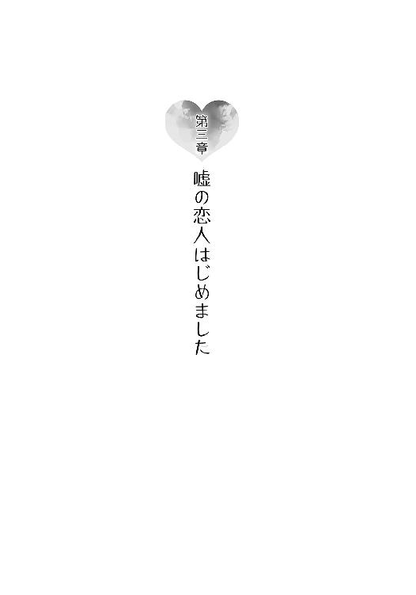
１
結論から言うと、翌日の六月二十九日はあっさりとやってきた。
朝、かえでにゆさゆさと体を揺すられて目を覚ました咲太は、
「おはよう、かえで」
と、朝の挨拶を口にしながら、ベッドの脇に置いてあるデジタルの目覚まし時計に手を伸ばした。
半分しか開いていない目で日付を確認すると、きちんと『六月二十九日、日曜日』を示していたのだ。
「......」
これは喜ぶべき状況なのだろうか。同じ日の繰り返しは起きていないが、原因や理由がはっきりしていないので気分はすっきりしていない。
今後は二度と起こらないのなら、誰かにそうだと言ってほしい。実はまだ可能性があるのなら、それはそれでやはり誰かにそうだと言ってほしかった。
どっちかわからないと、心がむずむずするのだ。
「それも、古賀の側にいれば、いずれわかるか」
猫のなすのを追いかけて部屋を出て行ったかえでを見送りながら、独り言をもらす。
朋絵からの無茶な提案を受け入れたのは、今回の思春期症候群の実態を知るためでもある。落ち着かない気分を払拭するには、結局、自ら関わって解決するしかない。
それに、様々な思春期症候群の事例を知ることには意味がある。今なおかえでを縛り付けている思春期症候群を解決に導く糸口が見つかるかもしれない。
ひとまず、かえでの体から傷は消えているけれど、それはネット環境から長らく距離を置いているからに過ぎない。ネット上の他人の悪意に触れたら、かえでの体にはまた傷が生まれてしまうと思う。
だからと言って、一生閉じこもって生活するわけにはいかない。
そんな理不尽を許すわけにはいかないのだ。
「なんにしても、朝起きるまで、明日が何日かわからないってのは、落ち着かないな......」
事前に明日の予定を決めておくことができない。もしかしたら、前の日かもしれないのだから......。
そんな落ち着かない気持ちを抱えたまま、咲太は午前中からバイトのシフトに入った。しっかりとフロアの仕事をこなす。
「明日が今日の繰り返しになったら、僕はタダ働きをしたことになるんだろうか......」
繰り返した分だけ、自給が加算されるわけではない。
バイトの時間が終わったところで、咲太はちゃんと明日が来ることを自給の神様に祈った。
二時過ぎに退勤のタイムカードを切った咲太は、ファミレスを出ると、江ノ電藤沢駅にやってきた。
定期券をかざして改札口を通り抜ける。
電車が出発したばかりの駅のホームは空いていた。
自販機でペットボトルの水を買い、咲太はベンチにどっかり腰を下ろした。ここが朋絵の指定したデートの待ち合わせ場所なのだ。
いつも通学に使っている見慣れた駅のホーム。途中駅にある観光地の案内や、名物のポスターが壁には並んでいる。休日の昼下がりだと、利用する人の雰囲気がだいぶ違った。地元の人よりも、観光で訪れた人の方が多い。これから鎌倉まで足を伸ばすらしいおばちゃんの集団。海を見にやってきたらしい家族連れ。それと、江の島デートをするらしい若いカップル。ちなみに、咲太と朋絵も、江の島をぐるりと回る予定だ。
のんびりとした時間が駅のホームには流れていた。そこへ、ぱたぱたと足音が近づいてくる。
「お、お待たせ」
顔を上げると、はにかんだ朋絵が脇に立っていた。
デニムのショートパンツに、上は肩口や裾にフリルがあしらわれたノースリーブのブラウス。足元は足首までの動きやすそうなスニーカー。惜しげもなく晒された生足をガードするように、青と白の縞模様が目を引くマリントートバッグを両手で下げている。
女の子っぽいやわらかさを残しながら、海辺のデートに合わせたさわやかな印象。
何も言わない咲太の前で、朋絵は困ったように視線を泳がせている。その表情からは緊張と照れが窺い知れた。
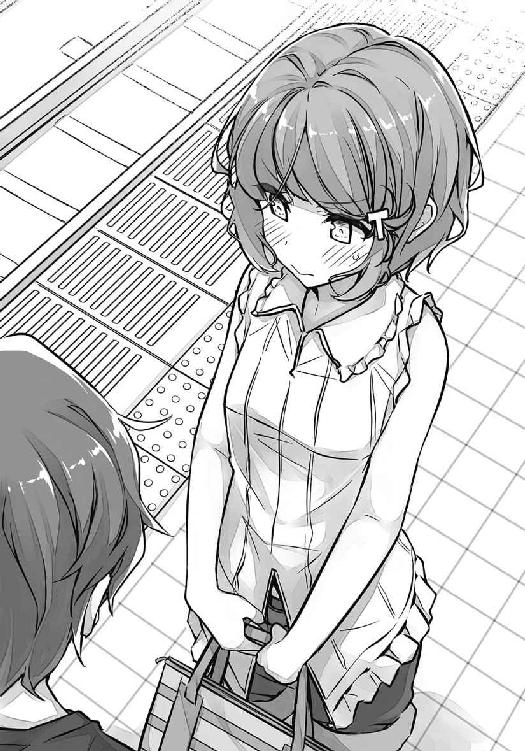
「顔、赤いぞ」
「急いできたから」
「なら、いいけど」
「デートくらい、別に余裕だし」
朋絵は言い訳するようにそう付け足してきた。
「てか、古賀、五分遅刻」
バイト先のファミレスを出る際には、二時半にここに集合と約束したはず。朋絵が来たのは三十五分で、時計の針は着々と四十分を目指している。
「しょうがないじゃん。準備あったし」
「準備ねえ」
まじまじと朋絵の全身をなめ回す。確かに、「準備した」と言われて納得の服装。イマドキでおしゃれなオーラが出ている。派手すぎず、いい塩梅で周囲に馴染んでいた。
「な、なに？」
「ま、かわいいな」
「か、かわいいって言うな」
「しょうがないだろ。かわいいんだから」
「二度も言うな！」
「ミニスカートじゃないのは減点だけど、生足だから許す」
「足ばっか見るのも禁止」
せっかくの生足を隠すように、朋絵は両足を抱えてその場にしゃがみ込む。
「どうせ、太いですよ」
咲太を見上げてくる少し潤んだ瞳は、咲太の中のもっといじりたい願望を刺激する。そこで、目に付いたのは、ショートパンツに包まれた丸いお尻。
「お尻のことは絶対言わないでよ」
咲太の視線に気づいた朋絵がそう先回りをしてきた。意外と目ざとい。
「なんで？」
「おっきいし」
ふてくされたように、自己申告してくる。
「きっと元気な赤ちゃんが産める」
「へ、変な褒め方するな！」
今日一番の動揺を朋絵が見せる。
「もう信じられない！」
耳まで真っ赤になって、周りの人に聞かれていないかを気にしていた。
「そういう服って、どこで買うんだ？」
「え？ どこって、普通にお店で......」
「どこの？」
「なんでそんなこと聞くの？」
「バイト代が出たら、妹に服を買おうと思って」
麻衣にも少しはかえでの服装に気を遣うように言われたわけだし。年齢的には朋絵とかえではひとつ違いなので参考になると思ったのだ。
「先輩、妹いるんだ。いくつ？」
隣に朋絵が座ってきた。
「古賀のひとつ下。古賀より大きいけど」
「別に胸のことは聞いてない」
「別に胸のことは言ってない。背の話だ」
「わ、わかってたもん......あ、そだ、先輩、ＩＤ！」
大事なことを思い出したと言わんばかりに、朋絵がトートバッグのポケットからスマホを取り出している。
「は？」
「少し遅れるって連絡しようと思ったのに、あたし、先輩のＩＤ教えてもらってない」
不満そうに朋絵は唇を尖らせた。
「僕が悪いって言いたいのか」
「遅刻はあたしが悪いけど......ごめんなさい」
今度は、素直に謝ってくる。
「ま、五分くらいで、僕はがたがた言わないけどさ」
「もう言ったじゃん。てか、ＩＤ」
すでに朋絵は登録画面を表示していた。
「ないよ、そんなの」
「え？」
「ない」
「アプリ使ってないの!?」
そんな人間がこの世にいるのかという反応だ。
だが、この程度で驚かれては困る。
「スマホもケータイも使ってない」
「は？」
朋絵は目をぱちくりさせている。
「なにそれ、どういうこと？」
「持ってないって意味」
両手を軽く上げて、咲太は事実を訴えた。以前、海に投げ捨てたのだ。あれは、峰ヶ原高校の合格発表当日。七里ヶ浜の海に放り投げた。かえでの周囲から、ネット環境をなくすために決別したのだ。
「いっちょんわからん」
「わかってくれ」
「だって、先輩、どうやって生きてるの!?」
「スマホがないと人は死ぬのか？」
「死ぬよ！」
力強く断言されてしまった。
「むしろ、死んでる......」
ゾンビを見るような視線が咲太に向けられる。でも、信じられないという顔で青ざめているのは朋絵の方だ。
「あ、電車来たぞ」
まだ何か言っている朋絵を無視して咲太は家族連れに続いて電車に乗り込んだ。
「あ、待ってよ」
慌てて、朋絵もついてくる。
発車時刻を知らせるベルが鳴り、ドアがゆっくりと閉まった。
静かに走り出す電車。シートに並んで座った咲太と朋絵の体を左右に揺らす。
しばらく、朋絵は「信じられない」とぶつぶつ繰り返していたが、次の石上駅に到着する頃には、なぜか急に大人しくなった。
再び電車が走り出す。すると、咲太の右肩が重たくなった。朋絵が寄りかかってきたのだ。横を見れば、口を半開きにして寝息を立てている。
「こら」
軽めのデコピンをお見舞いした。
「いたっ」
おでこを両手で押さえた朋絵の恨めしそうな視線。
「いきなり寝るか、普通」
「あんま寝てないの」
「デートが楽しみで？」
「昨日、二時過ぎまで、みんなでグループメッセージしてて......そのあと、動物のおもしろ動画見てたら朝になってた。あと、デートの予習をちょっと......」
両手を口に添えて、朋絵が大きなあくびをする。メイクが崩れないように、すぐさま涙を拭って、トートバッグから出した鏡で確認していた。
「古賀って、昨日バイト初日だったよな？」
「うん」
「疲れたよな？」
慣れないことをしたあとは、人間普段以上に疲れるものだ。
「すごく疲れてた」
「なら、さっさと寝ておけよ」
「みんな起きてるのに、あたしだけ寝るなんて無理」
「動物のおもしろ動画はヒマなときでいいだろ」
「みんな見たことあるって言ってたし、話に入れないと困る。それに、玲奈ちゃんのオススメなんだよ？」
「また玲奈ちゃんね......」
友達付き合いも大変だ。
「あ、そだ。感想」
スマホを出すと、朋絵はすぐに無料通話アプリのメッセージ機能を立ち上げる。慣れた手付きで、すごいよかったという旨のメッセージを送っていた。
すぐに返事が戻ってくる。
ちらりと見えた画面には、「これもオススメ」と書いてある。今日の夜も、朋絵の睡眠時間は削られることになりそうだ。
そう思っていたら、朋絵はその場で動画の再生をはじめた。どんくさいパンダが小さな液晶画面の中で尻餅をついている。見事なＶ字開脚。お股おっぴろげだ。
その再生が全部終わる前に、電車は目的地の江ノ島駅に到着する。
「ほら、降りるぞ」
スマホの画面に気を取られている朋絵の腕を引いて、咲太はホームに降りた。
江ノ電が停車する駅の中では、大きな部類に入る江ノ島駅。湘南モノレールにも乗り換えることができる。少し歩けば、竜宮城をイメージした駅舎が目を引く、小田急江ノ島線の片瀬江ノ島駅もある。ちなみに、どこの駅も、江の島という島にあるわけではない。江の島の近くにある駅。
駅を出た咲太と朋絵は、南に足を向けた。すなわち、海がある方向。吹き込む風は夏の香りがした。
両脇に商店が立ち並ぶレンガ風の石畳の通り。すばな通りと名前が付いている。おしゃれなカフェなどもあり、休日は人通りも多い。今日は特にカップルが多かった。
「カップルばっか」
「日曜だしな」
「あたしたちも、そう見える？」
「見えないだろ」
「なんで？」
「そりゃあ......」
咲太は自分と朋絵との距離を目で測った。推定距離は一メートル強。道幅の狭いこの場所でこの距離は、もはや他人と言った方がいい。事実、先ほどからふたりの間を、平然と人が通り抜けていく。カップルに見えていたら、そこは通らないだろう。
咲太の視線の意味に気づいたのか、朋絵が間を詰めてくる。一メートル強が一メートル弱に縮まった。
「これくらい？」
「あれくらい」
咲太は前から歩いてくる大学生のカップルを目で示す。時々、肩がぶつかりそうな距離だ。
それでようやく、朋絵は咲太のすぐ隣にやってきた。
「あとは、あんな感じとか？」
外に出されたカフェのメニューを眺めているのは、咲太たちと同じ年くらいの初々しいカップル。
彼氏の指を二本だけ彼女が握っている。小指と薬指。
「男の子とお付き合いの経験がある古賀なら、どうってことないよなあ」
「と、当然じゃん」
恐る恐る、朋絵が手を伸ばしてくる。その手は咲太の手には触れず、別のものを掴んだ。腰のあたりで垂れているベルトの余った部分。
さぞ、以前の彼氏とは健全なお付き合いをしていたのだろう。そんな人物が本当に存在していたならの話だが......。
これが精一杯という感じで、朋絵は恥ずかしそうに下を向いていた。
小柄な朋絵がすると、不思議とかわいく仕上がっている。ただ、ひとつ問題なのは、
「犬になった気分だな」
という点だ。
「あ、うち、犬いるよ」
「僕んちは猫だ。てか、今は無理して恋人っぽく振る舞う必要ないだろ」
学校の中ならいざ知らず、見ず知らずの人をだましても仕方がない。
「それが、そうでもないって言うか......」
歯切れの悪い感じで、朋絵は露骨に顔を背けた。
「その......先輩に、言っておきたいことあるんだけど」
石畳の通りが終わると、目の前に海が見えてきた。
海に浮かんで見えるのは、今から行こうとしている江の島だ。弓のような弧を描く相模湾にぽっこりとはみ出した陸繋島。その西には小田原や箱根、天気がよければここから富士山も見えるが、曇っている今日はうっすらと輪郭が確認できる程度。
「それ、後ろでこそこそしてる三人組のことか？」
江ノ島駅に着いたときから、何気に視線を感じていた。朋絵を見るふりをして背後を確認したら、玲奈とあとふたりの友達、日南子と亜矢らしき姿が見えたのだ。
「気づいてたんだ」
「古賀も挙動不審だったしさ」
「そ、そうかな」
これで、適当にデートの思い出を写真に残すだけでいい、というわけにはいかなくなった。常に玲奈たちの視線があるとすれば、先輩以上恋人未満っぽい距離感を保ち、気を遣って行動しなければならない。
「玲奈ちゃんが、先輩のこと審査するって言い出して......」
「あの子だけは、昨日から疑ってたしな」
疑っていたのは、嘘をついているとかではなく、咲太の神経と人間性に関して。一ヵ月前に全校生徒の前で麻衣に告白をしたくせに、あっさり朋絵に乗り換える軽さが信じられないという態度だった。そんな相手で大丈夫かと、玲奈は朋絵を心配しているのだろう。
「友情ってすばらしいよな」
「なんか、その発言悪意を感じる」
その友情のせいで、状況はややこしくなっているのだから、皮肉のひとつも言いたくなる。
正直、見られているのがわかっていて、道化を演じるのは気分が悪い。ばれないと高をくくっている下級生に、人生の厳しさを教えるのも先輩の役目のはずだ。
「古賀、予定変更」
「え？ わっ！」
直進しようとしていた朋絵の腕を引っ張って、咲太は１３４号線沿いに進路を取った。七里ヶ浜に背を向けて、海へと流れ込む境川にかかった橋を一本渡る。
「どうするの？」
咲太の行動に、戸惑った様子の朋絵。
「あそこ」
対岸に渡ってすぐに見えてきたのは、海に面して造られた四角い大きな建物......水族館だった。
チケットをふたり分購入して水族館に入った咲太と朋絵を最初に出迎えたのは、地元である相模湾に生息する大小様々な種類の海の生き物たち。下の階まで繋がった巨大な水槽の中を力強く泳いでいる。頭が三角形のサメ。食べるとおいしそうな鯛。優雅に旋回するのはウミガメだ。二匹並んだエイが人の顔に見えるお腹を見せながら横切っていく。数千匹もいるというマイワシは群れを成してぐるぐると回り、水槽のど真ん中に不思議な球体を描いていた。
小さな子供たちは水槽に張り付いて、躍動する海の生命に見入っている。朋絵も隅っこに混ざり、特等席をゲットしていた。その朋絵の目の前を、突然大きなサメが横切っていく。
「きゃっ」
かわいい悲鳴を上げながら、朋絵が尻餅をつくように後ろに倒れてきた。背後に立っていた咲太の足元に自慢のお尻で寄りかかっている。
玲奈たちの視線がある手前、咲太は彼氏らしく手を貸して、朋絵が立ち上がるのを手伝った。
入場料の壁があるので、玲奈たちはついてこないと思っていたのだが、そのあては外れていた。ただ、外よりは玲奈たちの動きを抑制できるので、機会を見て反撃はするつもりでいる。大人しく見世物にされるほど、咲太は人間ができてはいないのだ。
巨大水槽を堪能した咲太と朋絵は、ルートに沿って奥へと進んだ。
あたたかい海に生息する色鮮やかな魚たち。深海に生きる不思議な生物などが続く。クラゲのエリアは、一段と照明が落とされて、プラネタリウムのような雰囲気だ。
カップルたちが足を止めて、写真を撮っている姿が目についた。
ふわふわとゆったり泳ぐクラゲ。
「かわいい」
朋絵もスマホを取り出して写真を撮っている。
お菓子みたいなクラゲもいた。
「マカロンみたい」
朋絵も同じことを思ったようだ。
「先輩、写真」
スマホを受け取り、朋絵とクラゲをフレームに入れる。
「そうじゃなくて」
朋絵の視線は隣の水槽の前で肩を寄せ合うカップルに向けられている。彼氏が腕を伸ばして構えたスマホのカメラは、彼ら自身を捉えていた。
ご要望に応えて、咲太は朋絵に肩を寄せた。わずかに触れると、びくっと朋絵が反応する。ちらりと盗み見た横顔は緊張で強張っていた。
構わずにパシャリとシャッターを切る。
撮れた写真をふたりで確認すると、案の定、朋絵の表情は硬い。
「先輩、目が死んでる」
「普段と同じだろ」
「じゃあ、普段から死んでるんだ」
緊張は解けたのか、朋絵は楽しそうに笑っていた。
順路をさらに進んでいくと、多くの人の気配を感じた。水族館の一角に、大勢の人が集まっている。
岩場の海岸を再現した水槽の中には、約十五羽のフンボルトペンギンがいた。
丁度ショーが行われるらしく、奥からインカムをつけた飼育員のおじさんが出てきた。
「見てくか」
「うん」
フンボルトペンギンの特徴を、飼育員のおじさんが丁寧に説明している。なんでも、お腹の模様は一羽ずつ違っていて、兄弟や親子だと似ていたりするらしい。一羽のペンギンを抱っこして、ガラスのこちら側に見えるようにしてくれた。
他のペンギンたちは、飼育員さんの足元に集まっている。右に歩けば、よちよちと右へとついていき、左に行けば、またよちよちと左について歩く。
あちらこちらから、「かわいい」と声が上がった。
「かわいい。すごくかわいい」
朋絵も目を輝かせていたのは言うまでもない。
陸上でのかわらしい一面の次は、水中を泳ぐかっこいいところを披露してくれるらしい。どうするのかと思ったら、飼育員さんが小魚を水の中に「それ～」と投げ込んだ。
一斉に飛び込むペンギンたち。水の中を弾丸のように突っ切る。その姿は、飛んでいるようにすら見えた。空を飛べないペンギンたちは、海の中で飛ぶようだ。
「あのペンギン......」
「ん？」
なぜか朋絵は岩場の隅っこを見ていた。
小魚を求めて賑やかに動き回るペンギンたちから離れたところに、のんびりとお昼寝をしているペンギンが一羽。
「なんか、先輩っぽい」
「あそこまで足短いか？」
「みんなショーに参加してるのに、マイペースにサボってるとこが似てるの」
「なら、古賀は前から二番目にいるあの元気なペンギンか？」
その場合、先頭を行くのは香芝玲奈だ。飼育員さんが投げた小魚は、結局、四羽のペンギンが独占して食べてしまった。ペンギンの社会にも、序列はあるのかもしれない。
「あたしは、違う......後ろからみんなについていってるペンギン」
小さな声で、朋絵はそう言ってきた。
「お尻も大きいしな」
「今は真面目な話だったのに」
両手でお尻を押さえた朋絵が、上目遣いで睨んでくる。その仕草はなんだかペンギンっぽい。
「なんで、あのペンギンはみんなと一緒にいないんだろ」
昼寝から目を覚ました隅っこのペンギンは、左右に首を振って周囲の様子を確認する。それに気づいた飼育員さんが、「やっと起きたようですね。ショーはもう終わりなんですが」とすかさずいじって笑いを誘っていた。
それも気にせずに、ペンギンは再び寝てしまう。集まったお客さんたちからまた笑いが起こった。
「みんなに笑われても平気で......ほんと先輩そっくりじゃん」
勝ち誇った朋絵の笑顔。
そんな感じで、ペンギンのショーは大盛況のうちに幕を閉じた。
集まっていた人々がばらけていく。
咲太は隣にあったアザラシの水槽の前に朋絵を残して、トイレに寄ることにした。一旦、その場を離れる。
けれど、トイレには行かずに、ぐるりと水族館のルートを大きく回り込んだ。ペンギンのショーの最中に、玲奈、日南子、亜矢の三人を見つけていたのだ。
一度、入り口の方に戻ってから、通ってきた道を足早に進む。売店の柱の陰に、玲奈たちを見つけた。アザラシを眺める朋絵の様子を、覗き込んでいる最中だった。
その背後に近づいて、
「珍しい魚でもいるのか？」
と声をかけた。
日南子と亜矢がびくりと反応する。玲奈は何食わぬ顔で、咲太を振り向く。
「先輩も来てたんですね」
たいした度胸だ。
「女子高生ってヒマなんだな」
「忙しいですよ」
「そうは見えないけど」
「先輩の方こそ、朋絵を放っておいていいんですか？」
「ねえ、あれ！」
今日も伊達っぽい眼鏡をかけた日南子が割り込んでくる。その目は、柱の陰から朋絵の様子を窺っていた。
何かと思って咲太も顔を出した。
朋絵がふたり組の男に声をかけられている。揃って茶髪。揃ってウォレットチェーンが腰にぶら下がっている。足元はサンダルだ。
一緒にイルカのショーを見ようとでも言っているのだろうか。男のひとりが外を指差していた。
「なんか、こわそうな人だよ」
断るように胸の前で振った朋絵の手首を、男が掴んでいる。
「どうする？」
日南子が判断を求めるように玲奈を振り向いた。
その脇を通り抜けて、咲太はさっさと柱の陰から出ていく。すたすたと朋絵の横から近づいていき、
「なに、ちょっと目ぇ離した隙にナンパされてんだ」
と、脳天に軽くチョップを叩き込む。両肩をぐっと引き寄せて、茶髪から遠ざけた。
「彼氏いたのかよ」
若干の苛立ちを男が瞳の奥に覗かせる。
「先輩、トイレ長いよ」
小声で朋絵が抗議してくる。
「大の方だったんだ」
本当はまったく別の用事だったのだが、茶髪ふたりの意欲を失わせるには十分だったらしい。
「デート中に、大とかすげえな、お前」
鼻で笑いながら、ふたりは遠ざかっていく。
ちゃらちゃらした後ろ姿を見ながら、
「あれも、友達の憧れの先輩か？」
と、咲太は朋絵に小声で聞いた。
「そんなわけないじゃん」
同じく小さな声で朋絵が答える。
「なら、さくっと断れよ」
「そうなんだけど......」
「なんだよ？」
「急に、声かけられて、びっくりしたから」
「ああいうのには、さっさと慣れた方がいいぞ」
来週には近隣の海水浴場が揃って海開きを迎える。そうなれば、海辺の街には愛の狩人が大量発生する。
「なんで、あたしなんだろ」
「お前、自分の顔、鏡で見たことないのか？」
「毎日見てるよぉ」
水槽のガラスに映った自分を朋絵は見ていた。
「感想は？」
「......あたしじゃないみたい」
俯きながら朋絵がもらしたのは、そんな言葉だった。
２
水族館をあとにした咲太と朋絵は、江の島へとかかる弁天橋の上にいた。
風と波の音。潮の香りが全身を包み込む。海面からそれほど高さはないので、海の上を歩いているような気分になれて気持ちがいい。
半分ほど進んだところで、咲太は足を止めて振り向いた。三歩遅れて歩いていた朋絵も、反射的に立ち止まっている。
視線を落とした朋絵は、なにやら元気がない。水族館を出てから、ずっと何かを考えているようだった。
「これは亭主関白ごっこか？」
「違うけど」
「なら、わけありカップルごっこ？」
ゆっくりと朋絵が距離を詰めてくる。
隣までやってくると、手すりに両手を乗せて、「はあ」とため息をついた。雲の隙間からもれる夕日が朋絵を赤く照らす。
「福岡の出身だって、先輩には前話したよね？」
「お国の自慢か？」
「違う」
「なら、なんだよ」
咲太は逆を向いて、手すりに背中から寄りかかった。
「中学まで、あたしこんなんじゃなかったの」
朋絵は真下の海面を見据えている。
「写真、見る？」
「興味ない」
「これ」
むっとした朋絵がスマホの画面を咲太の顔の前に突き出してきた。
見たくなくても見えてしまう。
昔ながらのセーラー服。スカートは膝下まであって野暮ったい。その上、画面の中の朋絵は見事なおさげ髪だった。
「これは......イモだな」
「だから、見せたくなかったんじゃん」
「古賀が無理やり見せたんだよな？」
「お父さんの転勤で、東京に来ることになって」
「ここ神奈川」
「細かいことはいいの。だいたい、東京じゃん」
「ま、いいけどさ」
「クラスでも、目立たないグループにいたし」
「ふ～ん」
「都会では、ダサいと友達なんかできなくて、絶対にいじめられると思った」
「ま、そういうことはあるかもな」
「だから、お父さんの転勤が一月のはじめにわかってから......こっちに来るまでの三ヵ月間で、色々研究したの」
朋絵が自分の髪に指で触れる。
「はじめてメイクもしたし、おしゃれな美容院に行って髪型変えて......服もファッション雑誌読んで真似して、言葉も特訓して......そしたら、こんな風になっちゃった」
「気に入ってないのかよ」
「え？」
「今の自分」
その質問に、朋絵は考える素振りを見せる。少し時間を置いてから、
「......気に入ってる。すごく好き」
と、自分の気持ちを確かめるように言ってきた。
「だったら、なに悩んでんだよ。鬱陶しい」
「な、なにそれぇ！」
「どうせ、思春期丸出しで、『本当の自分はこんなんじゃない』とか思ってるんだろ？」
「そ、そうだけど」
「ウザいわー」
「ひどっ！」
「ま、でも、いいんじゃないの」
「なにが？」
「それが古賀だよ。前がどうだろうと、今のその姿が古賀」
「なんで先輩にそんなことが言えんの」
何を知っているんだという視線が突き刺さる。
「切っ掛けはどうであれ、古賀はなろうと努力してそうなったんだろ？」
「う、うん......」
「で、今の自分は気に入ってるんだよな？」
「うん」
「なのにそれが自分じゃないとか、その方がどうかしてるって」
「......」
「ま、だから、気にするな」
「......なんか悔しい」
「は？」
「先輩に言いくるめられた気がする」
「あのな」
文句を言おうとしたところで、朋絵がスマホに気を取られて視線を外した。
「あ、玲奈ちゃんから......」
画面を操作してメッセージを開いているようだ。
「なんだって？」
「......『ふたり結構いい感じ。先輩も意外といい人かも』だって」
「意外とは余計だろ」
「『意外とは余計だろって先輩が』で送信」
「送るな」
「もう送ったし......あ、返事。『はあ？』だって」
「そうですか」
女子高生同士の会話に参加しても疲れるだけだ。
「ほら、江の島行くんだろ？」
「うん......あ、待って」
何かに気づいたらしい朋絵が見ていたのは、橋の脇に伸びた砂浜。日も傾き、人もまばらになった波打ち際に、人影がひとつある。下を向いて、何かを捜しているのだろうか。体格からして女子。ここからでも、どこか落ち着きがないのはわかった。
「米山さんだ」
「知り合い？」
「クラスメイトの米山奈々さん」
わざわざフルネームを覚えているのが朋絵らしいと思った。咲太などクラスメイトの下の名前は殆ど記憶にない。
江の島に背中を向けて、朋絵が弁天橋を戻っていく。通りを外れて、ふらふらと砂浜に下りていった。ひとりで江の島に行っても仕方がないので、咲太もあとから追いかける。
波打ち際に近づくにつれて、米山奈々の輪郭ははっきりしてきた。黒縁の眼鏡。髪は中学生のようにふたつに結い、肩から前に垂らしている。膝下までのスカートに、紺色のカーディガン。身長は朋絵と同じくらいの小柄で、ぱっと見の印象は大人しい子。図書館が似合いそうな感じだった。
その奈々は、泣き出しそうな顔で、砂浜の上を行ったり来たりしている。
「米山さん」
朋絵の声に、怯えたように全身を震わせていた。
顔を上げて朋絵に気づくと、再びびくっと体を反応させている。
「彼女に何かしたのか？ めちゃくちゃびびってるぞ？」
小声で、朋絵に囁く。
「な、なにもしてないよ！」
同じく小声で朋絵が言い返してきた。
「古賀さん......そ、それに、一周回ってありの先輩がなんで」
「それ、一年生の間でほんとに浸透してるのな」
咲太と目が合うと、奈々は先ほどよりも大きな怯えを覗かせて、
「ご、ごめんなさい」
と謝ってくる。
「先輩の方こそ、なにしたの？」
ここぞとばかりに朋絵が反撃してきた。
「まだなにもしてない」
「今後もしないでよ」
じろりと朋絵が釘を刺してきた。
「米山さん、どうしたの？」
気を取り直して、やさしく声をかけていた。
「え、なんでもない」
どう見ても、なんでもある態度だ。
「何か捜してるの？」
朋絵が質問を変えると、
「う、うん」
と、今度は頷く。
別に何かあったわけではなく、奈々は人見知りで、ろくにクラスで話したことがない朋絵に戸惑っているだけのようだ。その上、よくない噂が色々と流れている咲太も一緒なので、距離を測りかねている。
「あたしも一緒に捜すよ。何を落としたの？」
「い、いいよ、古賀さんは香芝さんのグループだし」
随分と面白い断り方をするなあと咲太は思った。
同時に、今の一言から、朋絵のクラスの勢力図が見えた気がした。
見た目からして地味な米山奈々。イマドキオーラ全開の朋絵や、その朋絵を含む玲奈グループの女子とは明らかに雰囲気が違っている。だから、気後れしているのだろう。
中学生時代は、今の奈々以上に朋絵がイモだったことを教えてあげたくなる。
けど、先ほど朋絵の努力を認めたばかりなので、余計な真似はしないでおくことにした。
「三人で捜した方が早いだろ」
捜し物が何かわからないまま、咲太は砂の上に目を配りながら歩き出した。
「先輩もああ言ってるし」
「う、うん......ストラップなの」
「どんな？」
「小さいクラゲの人形が付いてる。水族館で買ったの」
「色は？」
「透明っていうか、青っぽいっていうか」
「大事なものなんだよね？」
「うん......今の友達とゴールデンウィークにお揃いにしたやつだから」
それをひとりだけなくしたというのは確かに気まずい。
新しいのを買えばいいという問題でもないだろう。奈々にとっては、友達と一緒に買ったやつでなければ意味をなさない。
「この辺に落としたのは間違いないのか？」
「す、すいません、それもわかりません」
「謝らなくていいよ」
目が合うと、また怯えさせそうだったので、咲太は下を向いたまま手だけをひらひらとさせた。何気にここまで露骨に怯えられるとちょっとへこむ。
「先輩、変な人だけど、こわくはないから」
朋絵が失礼なフォローを入れている。咲太から見れば、朋絵も十分に変なのだが......。
「う、うん」
その朋絵に対しても、まだ奈々は明らかに距離を置いている。
微妙な緊張感を漂わせながら、三十分ほど捜したが、クラゲのストラップは見つからない。日も暮れてきて、捜索は困難になってきた。
仲がいいわけでもない三人を取り巻く空気的にも限界は近い。
そろそろタイムアップかもしれないと思ったそのとき、波打ち際にいた咲太の目に、きらりと光るものが見えた。
波が引いて濡れた砂浜に落ちていたのは、まさしくクラゲのストラップ。
「あった！」
思わず、大きな声が出た。
「ほんと？」
朋絵と奈々が駆け寄ってくる。
拾おうとした咲太だったが、次の波が押し寄せてきたので一旦退却。その視界の隅に、海に飛び出していく人影が映った。
「あ、古賀さん」
止めようとする奈々の声よりも先に、朋絵が海に両手を突っ込む。次の瞬間、一際大きな波が、頭を下げて屈んでいた朋絵に襲い掛かった。思い切り波をかぶっている。
「うわっ」
驚いた朋絵がバランスを崩して尻餅をついた。もう全身びしょ濡れだ。
「おい、大丈夫かよ」
声をかけると、朋絵は笑顔で振り向いて、
「大丈夫」
と、ストラップを見せてきた。朋絵を心配しての発言だったが伝わらなかったらしい。
「古賀さんは大丈夫なの？」
どう見ても無事ではない。確実にパンツまでぐっしょり。白のブラウスも濡れてぴたっと張り付き、下着と肌がスケスケになっている。
咲太は靴のまま海に入って、朋絵を引っ張り起こした。砂に足を取られた朋絵が、咲太にしがみ付いてくる。
「うおっ、離れろ！ 濡れる！」
「ここ、喜ぶところじゃん！」
「眉毛の溶けた顔で言われてもな」
「わっ、見ないで！」
朋絵が顔を隠す。けれど、隠さなければならない場所は他にもあるのだ。
「下着も透けてるから隠した方がいいな」
「あ～、手が足りない！」
「僕の手でよければ貸すぞ」
一瞬考える朋絵。
「って、ダメに決まってるじゃん！」
そんな咲太と朋絵を見て、奈々は声を上げて笑っていた。
３
朋絵とデートをした翌日......六月三十日の月曜日は何事もなくやってきた。
もしかしたら、もう同じ日の繰り返しは起こらないのかもしれない。思春期症候群は解決したのかもしれない。
そんなことを考えつつ、咲太が学校に向かうと、江ノ電藤沢駅のホームで、偶然朋絵と一緒になった。
峰ヶ原高校の生徒もちらほら周りにいる中で、素っ気なく他人のように振る舞うわけにはいかない。ふたりは『先輩以上恋人未満』の関係なのだから。それ相応の男女のやり取りをしてしかるべき。そう思い、咲太は声をかけた。
「古賀、一緒に行くか」
「うん」
こくんと頷いた朋絵の声は、掠れていて聞き取りづらかった。
俯いた顔を覗き込むと、妙に赤いことに気づく。
「風邪かよ」
昨日、海でずぶ濡れになったのが原因だろう。あのあと、電車に乗るわけにもいかず、藤沢まで約三キロの距離を、水を滴らせながら歩いて帰ったのだ。
夏とは言え、さすがに油断しすぎていたようだ。
「全然平気」
言葉とは対照的に、目は虚ろだ。咲太を見上げる元気もないのか、ずっと下を向いている。呼吸をするのも辛そうに見えた。
「少しも平気に見えないぞ」
おでこに手を当てる。熱い。だいぶ熱い。咲太なら喜んで学校を休む体温だ。それなのに、ホームに電車が入ってくると、朋絵は迷わずに乗り込んでしまう。
ひとまず、空いている席に朋絵を座らせた。
「次で降りて、引き返すぞ」
「やだ」
子供みたいな返事。
「そんなに学校が好きか」
「休んだら、みんなの話についていけなくなるもん」
「一日くらい」
「その一日が命取りなの」
なんとも気の休まらない日々を送っているようだ。
「なら、駅に着くまで寝とけ。起こすから」
「ありがと」
素直なお礼を口にして、安心したように朋絵は目を閉じた。
とりあえず、学校までは朋絵を連れていった。ただ、昇降口で上履きに履き替えるのもままならない有様だったので、問答無用で保健室に連行。保健室の先生に身柄を預けた。
「裏切り者ー」
部屋を出る際に、掠れた声で恨み言が聞こえたが当然無視。
昼休みになると、咲太は学校を抜け出して、近所のコンビニに足を運んだ。教師に見つかる前に買い物を済ませて素早く戻る。それから、保健室に顔を出した。
朋絵が寝ているベッドの周りには、玲奈、日南子、亜矢の三人が集まっていた。
入ってきた咲太に気づいた三人は、からかうような笑い声を残して、「ごゆっくり」とかなんかと言いながら保健室を出ていく。
先生も用事で留守にしているのか、室内にはいなかった。
おかげで、咲太と朋絵だけになってしまう。
「少しはよくなったか？」
ベッドの脇に丸い椅子を置いて腰を下ろす。
「うん」
小さな声で朋絵が答えた。朝よりは声が出ている。
「みかんの缶詰食うか？」
ベッドにかかったテーブルの上に、コンビニ袋をどんと置いた。
「途中で外出るの、校則違反だよ」
「じゃあ、いらないな」
中からみかんの缶詰を取り出す。
「食べる」
伸びてきた朋絵の手を、ひょいっとかわした。
「少し待て」
「なしてぇ、あたしのためでしょー？」
咲太はコンビニ袋からプラスチック容器に入ったクラッシュアイスを出した。
「氷？」
朋絵が首を傾げる。疑問はスルーして、咲太は氷を水に浸した。その中に、缶詰を放り込み、定期的にくるくると回転させる。
「先輩、なんしよーと？」
前に理央がやっているのを真似した瞬間冷却法だ。
二分ほどして缶詰を取り出すと、蓋を開けて今度こそ朋絵の前に置いた。
「あ～ん、の方がよければしてやるよ」
「食べにくいからいい」
コンビニのフォークに刺して一口。
「あ、すごい冷えてる」
うれしそうに朋絵が微笑む。その様子をまじまじと見ていると、
「食べてるとこ、見ないで」
と、言われた。
「なんで？」
「恥ずかしい」
「それこそなんでだよ」
疑問は深まる一方だったが、弱っている後輩女子を困らせて喜ぶ趣味はない。咲太は立ち上がると、窓を少し開けた。
クーラーの効いた保健室に、潮の香りが吹き込んでくる。
「あー、海のにおい」
自然の風を浴びて、朋絵は気持ちよさそうに目を閉じていた。
しばらくそうしたあとで、
「ねえ、先輩」
と、声をかけてきた。
「ん？」
咲太は窓の外に身を乗り出しながら返事をした。
「なんで、あたしの無茶なお願い聞いてくれたの？」
「それは、先輩以上恋人未満的なやつのこと？」
「先輩以上恋人未満的なやつのこと」
七里ヶ浜の海では、多くのサーフボードが波と戯れている。
「古賀が必死に頼んできたからだよ」
「あたしのこと殆ど知らないのに？」
「尻を蹴り合った仲だろ？」
「もー、真面目に聞いてるの」
肩越しに振り向くと、ふてくされてフォークを咥えていた。
「でも、あのときに、古賀はいいやつだと思った」
小さな女の子が変質者に襲われていると思い、咲太の臀部に強烈なキックを放ってきたのだ。勘違いではあったが、その勇気ある行動は誰にでもできることじゃない。そうした朋絵のスタンスは、昨日、米山奈々がなくしたストラップを捜す際にも発揮されている。
「だから、助けてくれるの？」
「あとは、ぶっちゃけかわいいから」
「まーたふざける」
「古賀がブサイクだったら、同じ風にしてたかわからない。男なんてそんなもんだ」
「......してたよ、先輩は」
小声で何か言っていたが、咲太は聞こえなかったことにした。
「誰にでも親切にするほど、僕の親切は余ってない」
「けど、その分、一部の人には親切なんだ」
「そりゃ、少しくらいはいい人だって僕も思われたいからな」
「ふーん」
まだ納得していない様子だったが、食い下がってくる気配もない。朋絵はみかんの缶詰を全部食べると、残っていた汁を一気に飲み干した。
「古賀はさ、好きなやついないのか？」
「え!?」
急な咲太の質問に、朋絵が露骨に動揺していた。
「な、なんでそんなこと聞くの？」
「片想い中の相手がいるなら、僕と付き合ってるなんて噂が流れたら迷惑だろ」
「いないから平気」
「気になってる相手も？」
「いない」
「へー、もったいない」
「今は、そんな余裕ないし」
「友達オススメの動画をチェックしないといけないもんな」
「その言い方、やな感じ」
「そう思うのは、古賀が自分に疑問を持ってるからだろ」
「なにそれ」
「これでいいって思ってれば、僕の言うことなんか気にならない」
「......」
一度は沈黙で認めつつも、
「なるよ」
と、朋絵は言ってきた。
「人にどう思われてるかは気になる。今も、保健室にいることを教室のみんなにどう思われてるのか気になってる」
「自意識過剰だな、古賀って」
「先輩がおかしいんだよ。みんなに変な目で見られたり、笑い者にされたりして、どうして学校に来れるの？ どうして生きてられるの？ 神経ないんだ」
「よくそんな酷い質問を面と向かって言えるな」
「う、ごめん」
「傷付いてないからいいけどさ」
「じゃあ、ごめんじゃない」
そう呟いた朋絵の視線は、どこか真剣さを含んで咲太に注がれていた。質問にちゃんと答えてほしいと目で語っている。
仕方がないので、咲太は外に向かって独り言のように言葉を紡いだ。
「別に全人類に好かれるために生きてるわけじゃないからな」
「あたしはみんなに好かれたい......ってか、嫌われたくない」
「僕はたったひとりでいいけどね。そのひとりが必要としてくれたら、生きていける」
自分用に買ってきたコンビニのおにぎりの封を開ける。海苔を巻いて頬張った。海を見ながら食べる昼食は美味い。これだけでも、この学校に入学した価値はある。
「世界中に嫌われても？」
「その方が幸せだろ？」
「そうかな」
「ま、古賀もいつかわかる」
投げやりに言ってだんだん恥ずかしい方向に進んでいる会話を終わらせる。
「その上から目線むかつく」
朋絵は子供っぽく頬を膨らませた。それを咲太が軽く笑うと、すぐにしぼませていた。年下扱いされる理由が、そういうところにあるのだと気づいたのだろう。
バイトの初日には、少しどんくさい後輩だと思ったが、こうしてやり取りしていると、しっかりと咲太の言葉を汲み取っているのがわかる。表も裏も含めて。
というか、取りこぼさないように、朋絵は常に気を張って周囲を見ているのだ。よく言えば、ちゃんと空気が読める。悪く言えば、空気を気にしすぎている。そして、空気に合わせて自分の行動を選択している。メイクをしたり、髪型を変えたり、おしゃれをしたりしたのはその典型。
今回の嘘の恋人の件だってそうだ。
そうやって、周囲との衝突や、軽い摩擦すら回避して、上手に生きている。波風が立たないように努力している。そもそも問題が発生しないように、常に気を配っている。
ちょっと咲太には真似のできない生き方だ。絶対に疲れる。
「先輩、なにか失礼なこと考えてない？」
「いや、別に」
「やっぱり考えてたんだ」
「むしろ、その逆だよ」
「どういう意味？」
その質問は無視して、咲太は別の質問を朋絵に投げかけることにした。
「古賀はさ、もし、玲奈って友達と同じ人を好きになったら、どうするんだ？」
答えは聞かなくても想像できる。そんな質問をわざわざ口にしたのは、朋絵自身に気づいてほしかったからだ。
この世には、避けて通ってはいけない摩擦もある。避けていては、自分がどんどん擦り切れていくことになる摩擦もあるのだ。
「同じ人を好きになったことを、玲奈ちゃんには絶対に言わない」
「日南子って友達と同じ人を好きになったら？」
「言わない」
「亜矢って友達の場合は？」
「言わないよ」
「で、勝手に諦める」
「そうなると思う」
「だと思った」
「なら、聞かないでよ」
諦めると決めて、諦め切れるうちはいい。その程度の感情なら、それでもいい。だが、それでは割り切れない感情と出会ったときが問題だと思った。今の朋絵の答えでは、恐らく出口がなくなってしまう。そこに朋絵の危うさを感じた。
「お子様め」
「こ、子供扱いしないでよ」
「そういう台詞が出てくるところが子供なんじゃないの？」
「うっ......あ、そうだ、先輩。今の話で思い出したんだけど......」
「ん？」
「桜島先輩と、結局どうだったの？」
「返事待ち」
「え!? まだ振られてないの!?」
「例のループ現象が起こってなければ、あの日の昼休みにお付き合いのオッケーもらってたんだよ」
「嘘っ!?」
「ほんとだって」
「絶対に嘘だ」
「どうして信じない......」
「だって、桜島先輩だよ？ 芸能人の桜島麻衣だよ！ あの、桜島麻衣だよ!?」
「そうだな」
「桜島先輩から『好き』って言われたの？」
疑いの眼差しで、そんなことを聞いてくる。
「それは......言われてない」
「ほら、じゃあ、先輩の気のせいだって」
確かに麻衣の口から「好き」と聞かされていないのは事実。麻衣に言ってもらいたいのも事実だ。その方が、関係もすっきりする。
朋絵が妙な指摘をしてきたせいで、やけに気になってしまった。果たして、麻衣は咲太のことを好きなのか。一ヵ月間告白を続けた結果、最後の方はだいぶ投げやりな扱いを受けていた。告白をスルーされたりもしたのだ。だから、仕方なくお付き合いという雰囲気もあったような気がする。
そう思うと、咲太の胸に一抹の不安が宿った。
「次に告白するときは、そう言ってもらえるよう努力するよ」
「絶対に振られるよ」
朋絵はまだ信じてくれない。
「ま、なんにせよ、まずは一学期だ」
一学期の間、全校生徒をだまし切る。
そこを乗り越えないことには、咲太にも、朋絵にも明るい未来はない。
「......うん」
幸い、玲奈たちが嘘に気づく気配はない。この様子ならば、そっちの方は約三週間を無事に終えられるだろう。ただ、まったく状況を把握できていないのが、前沢先輩の動向だ。
咲太と朋絵が付き合ってる的な嘘がばれようがばれまいが、それとは関係なく前沢先輩が朋絵に告白する、ないしは好意があることが玲奈に知られてしまえばそれまで。一巻の終わり。実は狙っていた的なことすら、玲奈の耳に入ってはいけないのだ。
今はまだ、楽観視できる状況ではなかった。
４
翌日の火曜日。暦の変わった七月の初日。昨日、熱がありながら学校に来て、結局その日一日を保健室で過ごした朋絵は、さすがに観念したのか学校を休んだ。
それでも、水曜日にはすっかり元気になり、昼休みの時間帯になると、二年一組の教室に桃の缶詰を持ってきた。
教室で昼食を取っていたクラスメイトたちからは、「なぜ、桃の缶詰」という視線が突き刺さる。
月曜日に保健室に差し入れしたみかんの缶詰のお礼なのだろう。
「桃尻だけに？」
理由がわかっていながら、咲太はあえて朋絵をからかった。
すかさず、朋絵が両手でお尻を隠す。
「変態禁止」
唇を尖らせて、朋絵がむっとする。
「今日の夜は、これを古賀だと思っておいしくいただくかな」
さらに踏み込むと、すぐさま朋絵の手が伸びてきて、咲太の手から桃の缶詰を奪い去った。
「ア、アホー！」
羞恥に顔を染めながら、朋絵は教室から逃げ出していく。
「さすがにやりすぎたか」
次はきちんとぎりぎりのラインで留めよう。
そんな咲太には、いくつも視線が注がれていた。女子からは、「セクハラ、信じられない」という侮蔑の感情を送られ、男子からは、「イチャイチャしやがって」という、嫉妬を感じた。咲太と朋絵が一緒にいることに、彼らはそこまでの驚きを感じている様子はなかった。
さすが、プラチナバンド時代。ふたりの噂は順調に学校内に浸透しているようだ。
その日、放課後になっても、朋絵の機嫌は直っていなかった。シフトが同じだったため、バイト先のファミレスで一緒になったのだが、仕事中に咲太とばったり遭遇すると、お尻を隠したポーズでじっと睨んできた。まるで親の仇を見るような目で......。
ただ、残念ながら少しもこわいとは思わなかった。
午後八時を回ると、この日のディナータイムは落ち着きを見せはじめた。来店する客も減り、すでにいた客のオーダーも済んでいる。料理もあらかた出揃っていた。
レジ前に咲太が立っていると、朋絵の方から近づいてきた。
「先輩にひとつ言っときたいんだけど」
「デリカシーがないことなら自覚してる」
「その点は、もう諦めた」
「なら、なんだ？」
「......」
咲太を見上げた朋絵からは、ただならぬ緊張を感じる。
何か大事な話だろうか。そんな気がした。
「あたし、そこまでお尻大きくないからね」
けれど、朋絵の口から飛び出したのは、お尻の話。
「またまたー、ご謙遜を」
慰めるように、ぽんと朋絵の肩に手を置く。
「その返しおかしい！」
「もっと自信を持てよ」
「なんの!?」
「桃尻の」
「だから、違うって言ってるのに！」
「いやいや、そんなことないって」
「もー、いい！ 先輩とは話してあげない」
今度こそ本気で機嫌を損ねたらしく、朋絵は大股歩きで離れていった。
けれども、その一分後。やったことのないアルコールのオーダーを取ってきて、自分からおずおずと話しかけてきた。
「ビール、どうしたらいいの？」
ばつが悪そうにそわそわしている。
「......」
咲太は聞こえなかったふりをして、ドリンクバーにグラスを補充した。
「無視しないでよ」
くいくいっとエプロンを引っ張ってくる。
「......」
「お、お願いします。教えてください」
若干、泣きそうになっている。
「お、お尻にも自信持つから」
それを聞いて、咲太はようやく朋絵と目を合わせた。
「桃尻も？」
「み、認めればいいんでしょ！ あたしは桃尻です」
もはや完全にやけになっている。
「そうか、なら仕方ない。教えてやろう」
「先輩の超いじわるー」
そうやって朋絵をからかいながら、ふたり揃って九時過ぎにバイトを上がった。家の近くまで朋絵を送り、咲太が自宅に帰り着いたのは九時半。
丁度お風呂から出てきたかえでと入れ替わりで、咲太も一日の汗を流した。
さっぱりしたところでお風呂から上がる。
パンツ一丁のまま、冷蔵庫からスポーツドリンクを取り出してコップ一杯を一気に飲む。あたたまった体の芯に、冷たさが流れ込んできて気持ちいい。元々、気に入っているスポーツドリンクではあったが、今はＣＭに麻衣が出ているので、美味しさに補正がかかっている気がした。飲むたびに、麻衣を思い出すのだ。
その麻衣は、ドラマの撮影で今週は鹿児島に行っている。
すでに夜の十時を回ったが、まだ撮影中だったりするのだろうか。それとも、宿に戻って休んでいる頃だろうか。芸能界のことはまったく想像がつかない。
もう一杯スポーツドリンクをコップに注ぐ。今度はゆっくりと三回に分けて飲んだ。
飲み終わったコップを洗い、水切りに置くと電話が鳴った。
タオルで手を拭いてから受話器を取る。
「はい、梓川です」
「私」
聞いた瞬間に、誰かはわかった。
「麻衣さん、どうしたの？」
「咲太が私の声を聞きたいんじゃないかと思って電話してあげたの」
「まさに今、麻衣さんのこと考えた」
「パンツ、はいてるんでしょうね」
随分と飛躍した疑いがかけられているようだ。
「咲太が私でそういうことするのは仕方ないけど......」
もやは、行為に及んでいることは決定事項らしい。
「パンツだけは、はいてますって」
「はあ？ なんでパンツだけ？」
「風呂上がりなんです」
「なにそれ、普通」
普通ではいけないのだろうか。
「悶々として眠れない夜は、麻衣さんのお世話になるかもしれません」
「はいはい、好きにしたら」
照れてくれるかと思いきや、あっさり流されてしまった。
「そっちはどう？」
「どうって言われても、それこそ普通ですよ」
「かわいい彼女とのデートは楽しかった？」
「ま、それなりに」
朋絵の反応は新鮮で見ていて面白い。
「ヘー」
いかにも、麻衣の声はつまらなそうだ。
「今の質問、なんて答えるのが正解なんですか？」
「今すぐ家を飛び出して、鹿児島に会いに来てくれるとか？」
「で、抱き締めればいいんですか？」
「それは引く」
嫌悪感が鼓膜に突き刺さる。本気で嫌そうだった。
「麻衣さんは？ 撮影以外で何かあった？」
「白クマを食べた」
「肉食系ですね」
「かき氷よ」
「実は知ってました。フルーツが載ってるやつですよね」
「つまんない」
女王様はなかなか理不尽だ。
それでも、声は弾んでいて、どことなく浮かれているように聞こえる。好きな演技の仕事ができて、テンションが上がっているのだろうか。
「麻衣さん、撮影は楽しいですか？」
「楽しいわよ」
淀みのない素直な感想。
「咲太は、やりたい仕事ないの？」
「普通の高校生は、仕事のことなんか考えてません」
「もったいない」
「ま、将来はサンタクロースになりたいかな」
「年三百六十四日も休みだから？」
「ばれたか」
「バカ言ってるとバカになるわよ。じゃ、おやすみ」
「あ、はい、おやすみなさい」
麻衣の方から切れるのを待って、咲太は受話器を置いた。
５
週末になると、気象庁は関東地方の梅雨明けを発表した。いよいよ夏が到来。ここから暑さは本番を迎え、海開きを翌週に控えた海岸線の一帯もにわかに活気付いていく。
フライングで遊びに来た大学生のヒマそうなグループを何組も見かけたし、七里ヶ浜の波を楽しむサーファーの数も日を追うごとに増えていた。
そうした海と青空が似合うさわやかな季節の中でも、咲太と朋絵の灰色の嘘は、順調に継続している。付き合いはじめらしい節度ある距離を保って上手に接していた。
無理にべたべたはしない。毎日の登下校も、時間が合えば、という具合。
朋絵が友達付き合いを優先できるように心がけた。
そんな咲太と朋絵の関係は確実に学校内に知れ渡っていき、咲太はクラスメイトからの何か聞きたそうな視線を毎日のように感じた。
ただ、野次馬根性を剥き出しにして、実際に咲太に尋ねてくる勇者はひとりもいなかった。
当然、咲太と朋絵が『嘘の恋人』だと疑われることもなかった。
それはそうだろう。普通、そんな風に周囲を欺いているクラスメイトがいるなどとは誰も考えないし、聞こえてきた噂話の真偽を熱心に確かめたりはしないものだ。他人のことなど、その程度の興味で見ている。この場合、その適度な無関心は、咲太にとって正直ありがたかった。
おかげで、嘘がばれるかもしれないと心配する必要はなくなったのだ。
ただ、それとはまったく別の不安要素が、まだ咲太の中にはあった。
朋絵が引き起こしていたと思われる思春期症候群。その決定的な解決は未だに見ていない。
そのため、毎朝起きるたびに、ベッドの脇に置いたデジタル時計で日付を確認してしまう。日課になりつつあった。
今のところ、六月二十七日以降は、同じ日が繰り返される現象は起きていないが、いつまた起きるかわからないので、どうにも落ち着かない。
そして、咲太はその不安感を、週の終わりの七月五日になっても、拭い去ることができずにいた。繰り返しから抜け出して、丁度一週間が経っていた。
放課後になるのを待って、咲太は物理実験室を訪ねた。
「双葉、いるか？」
そう声をかけながらドアをスライドさせる。
白衣の後ろ姿を、窓際に見つけた。窓の外に立った誰かと何か話している最中。その相手はＴシャツに膝丈ズボンのジャージ姿。佑真だ。手にはバスケットボール。これから部活なのだろう。
咲太がやってくると、理央と佑真は同時にドア口に顔を向けてきた。
「悪い、邪魔した」
ふたりの顔を見比べてから、咲太は回れ右をしてドアを閉めた。
思春期症候群のことで理央に相談しようかと思ってきたのだが、日を改めた方がよさそうだ。そんなことを思っていると、内側から勢いよくドアが開いた。
振り向くと、珍しく慌てた様子の理央がいる。
「梓川はバカか！ バカなのか！」
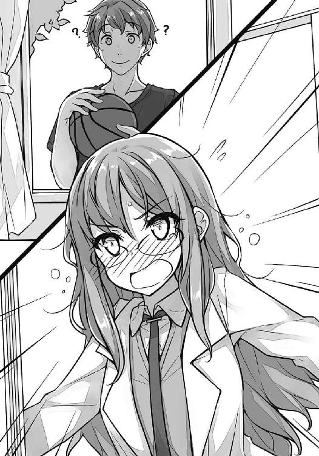
小声でまくし立ててきた。ちらちらと気にしているのは佑真の視線。その佑真はバスケットボールを指の先で器用に回している。
「双葉よりはバカだろうな」
「私に変な気を遣うな。国見に気づかれる」
「このくらいで気づくなら、あいつもう気づいてると思うぞ。双葉の気持ちに」
それでも今は気づいていないふりをしている可能性は高い。
「それは......困る」
消えそうな声で俯く理央。見る見る肌が赤く染まっていく。
これ以上いじるのはかわいそうだったので、咲太は理央を置いて教室の中に入った。
「ちょうど、咲太のこと話してたんだよ」
窓辺に近づくと、佑真はそんなことを言ってきた。
「ふたりで僕の悪口とか酷いな」
「古賀さんと付き合ってるって話はまじ？」
咲太の冗談には取り合わず、佑真はストレートに質問してくる。
「まじだな」
「まじか！」
「実はまだお試し期間って感じだけど」
「ふ～ん」
釈然としない態度の佑真。遅れて側に来た理央からは、どこか疑いの視線を感じた。理央に関しては心当たりがあるはずだ。思春期症候群のことを相談しているし、ラプラスの悪魔が朋絵だという話も前に伝えてある。
それでも、理央が追及してくることはなかった。
「ま、だったら、一応耳に入れておくか」
だむだむと佑真がバスケットボールを弾ませる。
「古賀さんだけどさ」
わずかに言いよどむのがわかった。
「なんだよ」
「よくない噂流れてる」
「男の趣味が悪いとか？」
学校内での咲太の評判を考えれば、それくらいは言われるかもしれない。一年生の間では、一周回ってありということになっているらしいが、二、三年からすれば、やはり『病院送り事件』の噂というのは、きちんと拭われてはいないだろう。一度、そういうレッテルを貼られると、剥がしても、シールの跡みたいにしつこく何かが残るのだ。
「させ子だとか、ビッチだとか、咲太とやりまくってるとかね」
理央に気を遣ったのか、佑真の声が少し小さくなる。それを察知してか、理央は積極的に会話に参加せずに、なんとなく聞いているくらいの態度を取っていた。
「なんだそりゃ」
咲太にとってはどれも初耳。
「男子バスケ部のグループメッセージで俺も知ったんだけどさ」
それを聞いて、咲太は妙に納得した。
「咲太、バイトのときに、陽介先輩のこと聞いたよな？」
佑真の視線も意味深だ。暗にそこが噂の発生源だと語っている。
「教室でも、女子がそんな話してたよ」
さりげなく理央がそう付け足す。
ということは、それなりに学校内に浸透している噂のようだ。
また厄介な状況になってくれたものだと思う。咲太は自分が何を言われようが、今さら気にはしないが、朋絵は確実に気にするだろう。
「ひとまず伝えたぞ」
「ああ」
片手を上げると、佑真は「部活行くわ」と言って、体育館の方へと軽く流していく。その後ろ姿を、それとなく理央は目で追っていた。
邪魔をしては悪いと思い、咲太は窓に背を向けると、アルコールランプを出してマッチで火をつけた。ビーカーに水を入れて、お湯を沸かす。
これ以上、朋絵の噂が広がるようなら、どうにかした方がいい。
「梓川は、なにをしてるわけ？」
気が付くと、机を挟んだ正面に理央がいた。
「とりあえず、コーヒーでも飲んで落ち着こうと思ってる」
「そうじゃなくて、桜島先輩は？」
「粉ってどこだっけ？」
教卓の下の引き出しを開けてもそれらしきものはない。
「それ、聞くなってこと？」
隣の引き出しを開けたら、インスタントコーヒーの瓶を見つけた。
「ま、いいけど......で、梓川はなにしにきたわけ？」
「あれ以来、同じ日の繰り返しは起こらないから、結局なんだったのかと思ってさ」
お湯が沸いたので、アルコールランプの火を消した。ビーカーの中に直接インスタントコーヒーの粉を落とす。透明だった液体は、ゆっくりと黒く染まっていった。
「なら、梓川が言ってた通りなんじゃないの」
「ん？」
「今、梓川の恋人ってことになっている例の一年生がラプラスの悪魔」
わざとらしい言い回し。やはり、理央は嘘の恋人関係に気づいているようだ。
「その一年生が、自分にとって都合のいい未来が出るまで、サイコロを振り続けていた」
どこから出したのか、理央が机の上にサイコロを転がす。『５』、『４』、『２』と続く。
「で、今は満足のいく状態だから、やり直す必要はないというわけ」
赤い目の『１』が出たところで理央はサイコロを振るのをやめた。
「本人は自覚なしだけどな」
「自覚してたら、本物の悪魔かもね」
「言えてる」
ずずっとコーヒーをすする。苦い。
「なんか、梓川はまた繰り返しが起きてほしそうだね」
眼鏡を外した理央が、何気ない感じで言ってきた。
「もう起きないなら起きないって、誰かに言ってほしいだけだ」
「何かやり直したいことでもあるわけ？」
咲太の発言を無視した質問。最初からそれを言うために、理央はこの話を切り出したのだろう。
「......」
「なるほど、あるんだ」
「双葉はさ、もしあのとき......って考えることないか？」
「梓川にとっては、妹さんのこと？」
はぐらかそうとしたのに、理央はどうもやさしくない。最近、佑真の件でいじめていた腹いせだろうか。
「そうだよ、悪いか」
「悪くはないけど、梓川らしくないかもね」
「別に、ほんとにやり直そうと思ってるわけじゃない」
「なら、なに？」
「『もしも』なんて考えても仕方ないことを、考えなくて済むようにしたいだけだ」
「なるほど。それは梓川らしいね」
「僕は今を生きるのに精一杯だからな。過去へ戻るとか......そんな別の可能性のことまで、いちいち面倒見れるか、鬱陶しい」
それは無視して、理央はガスバーナーの用意をはじめた。
机の上に転がったサイコロを咲太が指で弾く。『３』の目が出た。
「あのさ、双葉」
「なに？」
火を灯した理央は、どこか面倒くさそうだ。自分の聞きたいことは聞けたので、もう咲太には興味をなくしたらしい。
「運動部で鍛えてる上に、自分よりも体のでかいやつに勝つ方法ってあると思うか？」
「......」
理央の手が一旦止まる。少し驚いた光を瞳に宿していた。でも、それはゆっくりと呆れた感情に塗り替えられていく。最終的には、鼻で笑われた。
「私の専門外」
「だよな」
空気を調整されたガスバーナーの火は赤から青になる。
「でも......」
「ん？」
「人間はサルじゃないんだから、頭を使えば勝てるんじゃない？」
それは実に理央らしい答えだった。
１
週末の日曜日。夜、咲太がバイトから戻ると、留守番電話が録音されていた。
「誰だろ」
別々に暮らしている父親だろうか。
そう思いながらスイッチを押した。
「桜島麻衣です。つい先ほど鹿児島から戻りました。一応、報告しておきます」
入っていたのは予想と違う人物の声。普段と違うかしこまった麻衣の態度はやけに新鮮だった。
もう一度再生する。
「桜島麻衣です。つい先ほど鹿児島から戻りました。一応、報告しておきます」
電話機は健気に麻衣の音声を聞かせてくれる。
さらに、もう一度再生ボタンを押したところで、
「三度はウザいって思われるか」
と、自分で気づいてやめた。代わりに受話器を持ち上げる。すでに覚えてしまった麻衣のケータイ番号を押す。三回目のコールで繋がった。
「どちら様？」
「僕です」
「知ってるわよ。家の番号登録してるし。私、お風呂に入ろうとしてたんだけど」
どこか面倒くさそうに、言いたいことを一方的に言ってくる。こんなタイミングで電話をかけてくるなということらしい。乙女心は複雑だ。
「ってことは、麻衣さん裸？」
「だったら、電話無視した」
「なんで？」
「裸で男の子と電話するなんて変態じゃない」
言われてみればそうだ。麻衣にはそんな痴女になってほしくない。
「それで、なに？」
短い言葉の裏には、「早くお風呂に入りたいんだけど」という意思を感じた。
「麻衣さん、おかえりなさい」
「......」
少し戸惑ったような吐息が聞こえる。
「それだけ？」
「僕は別の言葉を聞きたいんだけどなあ」
「ただいまなんて言ってあげないわよ」
今のは言ったうちに入らないのだろうか。咲太の感覚では入るが、麻衣の感覚では入らないようだ。そんなことを考えているうちに、
「じゃあね」
と、電話を切られてしまった。相変わらず自由でいらっしゃる。
かけ直してもどうせ出てくれないので、咲太は大人しく受話器を置いた。麻衣の無事の帰宅を確認できたので、目的は十分果たしていた。
週が明けた翌日の月曜日。七月七日。七夕でもあるこの日は、朝から雲ひとつない晴天だった。
朝食を取りながらＴＶをつける。
「この様子なら、織姫と彦星も無事に会えそうですね」
朝の顔となっている男性キャスターが、そんな気の利いたことを言っていた。
続く天気予報では、すでに各地の気温が三十度に迫る勢いであることを、お天気お姉さんが笑顔で語っている。聞いただけでやる気がなくなる情報だ。
許されるなら学校をサボりたい。だが、咲太にはそれが許されない理由があった。よりにもよって、今日から期末試験がはじまるのだ。
暑さに耐えながら登校した咲太を待っていたのは、数学と英語の試験。数学は一通り解答欄を埋めたが、英語のリスニングはさっぱり聞き取れなかった。心の中で、将来は英語を必要としない職業に就くことを決心しながら下校する。
サンタクロースになるのは無理かもしれない。
駅までの短い通学路は、峰ヶ原高校の生徒で賑わっていた。普段の帰り道より混雑しているのは、試験中のため、部活動で放課後学校に残る生徒がいないせいだ。
校門を出てすぐに、咲太は見覚えのある後ろ姿を見つけた。
紐を長くしてお尻を隠して背負ったリュック。朋絵だ。
どこか居心地悪そうに俯き、しょんぼりと肩を落としてひとりで歩いている。いつも一緒の玲奈、日南子、亜矢の三人は、十メートルほど前で笑い声を上げていた。
何か用事があって遅れた朋絵が、今からみんなに合流しようという雰囲気ではない。玲奈たちはそこに朋絵がいるのを知っていながら、気づかないふりをしているように思えた。
意図的に作られた朋絵と玲奈たちの距離。
真っ先に思い浮かんだのは、先週の金曜日に佑真から聞かされた話。
──よくない噂流れてる
佑真はそう切り出したあとで、
──させ子だとか、ビッチだとか、咲太とやりまくってるとかね
と、教えてくれたのだ。
七里ヶ浜駅の小さなホームは、峰ヶ原高校の生徒でいっぱいになっていた。
藤沢方面の先頭側。駅の端っこに、朋絵は申し訳なさそうに立っている。周囲にいる生徒は、朋絵からわずかに距離を置き、見えない壁を作っているように思えた。同じ空間にいるのに、朋絵だけが別の空気に包まれている。
定期をかざしてホームに入った咲太は、集まる視線を無視して朋絵の隣まで移動した。その頭をこつんと軽く小突く。
「辛気臭い顔するな」
「先輩......」
一度は顔を上げた朋絵だが、周りを気にしてすぐに下を向いてしまう。
咲太が合流したことで、注がれる視線からは遠慮がなくなった。かと言って、露骨に見てくるわけではない。噂の真偽を確かめるように、ちらちらと盗み見ているのが殆どだ。
適度に嘲笑い、噂話を面白がり、レールを外れた人間を見下したような視線の数々。
咲太にとっては、もはや日常的なもの。なんとも思わない。けれど、朋絵は隣で小さく縮こまって窮屈そうにしていた。
少し俯いた横顔は、いたたまれない感情に支配されている。逃げ出したくてしょうがないという切実な思いが痛いほどに伝わってきた。
不安げな瞳は、今にも泣き出しそうにも見えた。
こういう注目のされ方は、朋絵が何よりも苦手としているものだ。こうした状況に陥らないように、必死に空気を読んで振る舞っているのだ。恥ずかしい目に遭いたくない一心で、嘘の恋人まで演じてきた。
その朋絵に追い討ちをかけるように、背後から露骨な笑い声が聞こえた。
びくっと、朋絵が怯えた反応をする。
体の真ん中に苛立ちを感じながら咲太が振り向くと、背後には嫌な笑みを浮かべた三年生の男三人組がいた。チャラチャラした雰囲気。全員揃って腰のあたりにチェーンが垂れ下がっている。その中心にいるのは前沢先輩だ。
咲太と目が合うと、わざとらしく笑った。
「最近の一年はお盛んだよな」
他の生徒にも聞こえるように、一緒にいたふたりに話しかけている。視線はご丁寧に咲太を挑発していた。
だいぶ、安いケンカの売り方だ。逆にそれが面白かったので、咲太は鼻で笑い飛ばしてあげた。もらったものは返しておくのが人としての礼儀である。
「はあ？」
露骨に前沢先輩の表情が険しくなる。不快で威圧的な感情を撒き散らしながら、咲太に一歩、二歩と近付いてきた。
「今、笑ったよな？」
「まだ笑ってますけど、なにか？」
「ふざけてんのか！」
胸倉をぐっと掴んで一喝される。
「僕はバカにしてるだけです」
ホームの奥で、誰かがぷっと吹き出した。
次の瞬間、強烈なパンチが咲太の顔面を捉える。鈍い音。咲太はよろよろと二、三歩後ろに下がった。
「きゃあっ」
今のは恐らく朋絵の悲鳴だ。
目の前が真っ白で、左の頬の感覚がない。
数秒遅れて、熱い痛みがじんじんと頬を疼かせた。咲太よりも五センチほど背が高く、バスケ部で鍛えた体躯から繰り出された一撃は、予想以上に威力があった。
「いって......」
峰ヶ原高校の生徒で溢れ返った駅のホームは、息を呑んだように静まり返っている。異様な緊張感がこの空間を支配していた。
さらに、もう一発お見舞いしようと、前沢先輩が振り被る。
「先輩！」
声と共に、朋絵の小さな体が咲太と前沢先輩の間に割り込んできた。
「バカ！」
とっさに、咲太は朋絵のリュックサックを掴んで後ろに引っ張る。その反動で立ち位置を朋絵と入れ替えた。
朋絵の行動に驚いたのか、前沢先輩は拳を振り上げたまま固まっている。
この場に居合わせた野次馬の視線は、そんな三人に注がれたままだ。
最初は我慢するつもりだった。だが、なかなか頬の痛みが治まらず、苛立ちが込み上げてくる。咲太の体はその熱に徐々に支配されていった。
「先輩......」
心配そうに、朋絵が咲太の袖を引っ張ってくる。泣きそうなその顔を見たら、我慢しているのがバカらしくなった。
大きく前に踏み込んで、思い切り腕を振り被る。
前沢先輩は、即座に両腕を上げてガードの体勢。おかげで、足元が完全に疎かになる。咲太はがら空きの脛を、靴の先端で蹴り上げた。
「いっ!?」
驚きと激痛が混ざった呻き声。前沢先輩は、すぐに咲太に蹴られた右足を抱えてその場に蹲った。
「お前っ！ 卑怯だろ......」
憎悪を宿したぎらついた瞳。
「それはあんただろ！」
今度は顔面を狙って、咲太は靴の底を押し付けるように二度目の蹴りを放つ。ケンカキックだ。前沢先輩の顔を見事に捉えた。
「ぶへっ」
受け身を取ることもできずに、前沢先輩は無様に尻餅をついてホームに転がる。
咲太を睨みつける瞳は、羞恥と怒りと屈辱で真っ赤に染まっていた。
誰も何も言わない。目に映る光景に驚き、まだどう反応すればいいのかわかっていない様子だ。咲太の第一声を待っている空気。
その期待に応えるつもりはなかったが、咲太は前沢先輩が一番言われたくないであろう言葉を口にしていた。
「ダサ」
野次馬の一部がざわつく。くすくすと忍び笑いが聞こえてきた。
「誰がだっ！ 誰が！」
怒りで頭が上手く回らないらしく、待っていても続きの言葉が出てこない。口を金魚のようにぱくぱくさせている。
代わりに、一緒にいた三年生ふたりが咲太ににじり寄ってきた。
それを無視して、咲太は前沢先輩に声をかける。
「顔、洗った方がいいですよ」
「はあ？」
「昨日、うんこ踏んだので」
慌てて、前沢先輩が手で顔を拭う。その手の匂いを嗅ぐ仕草に、また別のところから笑い声が上がった。
咲太に手を出そうとしていたふたりの三年生は、足を止めて咲太から距離を置いている。うんこバリアは最強だ。
周囲を見れば、手にしたスマホをいじっている生徒もいる。目の前の出来事をつぶやき系ＳＮＳに書き込んだり、ここにいない友達にメッセージで伝えているのだろう。
そうした人垣の中で、玲奈は唖然とした様子でこちらを見ていた。その隣では日南子がおろおろしていて、それを亜矢が落ち着かせようとしている。
「ふ、ふざけんな！」
ようやく、前沢先輩が立ち上がる。
「ふざけてるのはそっちでしょ。自分が見世物にされてるのが嫌なら、アホなことするなよ。生き方がダサすぎる」
「ざけんな！」
「それ、さっき聞きました」
「......」
今なお、言語回路は故障中らしい。前沢先輩から別の言葉は出てこない。壊れたスピーカーのように、「ふざけるな、ざけんな」を連呼するだけだ。
「先輩、もういい」
いつの間にか、制服の後ろを朋絵が掴んでいた。困ったような顔。他の生徒から嫌な注目のされ方をしている前沢先輩を心配しているのだ。自分が衆目に晒されるのも嫌なら、誰かが同じ目に遭うのも朋絵は嫌なのだ。
それでも引かずに咲太は続けた。
「いいや、これだけは言わせてもらう」
咲太は再度前沢先輩を見据えた。
「やりまくってる？ 冗談じゃない、僕は童貞だ」
吐き捨てるようにそう告げると、咲太は朋絵の手を引いて駅を出た。一歩、二歩と駅から離れるにつれて、歩調は速くなる。気が付くと走り出していた。
別に、前沢先輩が追いかけてくると思ったからではない。
咲太も朋絵も、気分が高揚していたせいか、走り出さずにはいられなかった。楽しい気分が押し寄せてくる。どうして楽しいのかはわからない。ただ、今の状況に胸が躍った。
「先輩、やりすぎ」
「知るか」
「絶対、やりすぎだって」
そう言いつつも、朋絵は走りながらずっと笑っていた。
波の音。風の音が高ぶっていた心を落ち着かせていく。
心の中にあったどす黒く濁った部分も、晴れやかな色に塗り替えられていく。
海辺にはそういう不思議な力がある。
駅から逃げ出した咲太と朋絵は、七里ヶ浜の砂浜を西の方角へと歩いていた。少しずつ近づいてくるのは、海にぽっかりと浮かんだ江の島だ。
「先輩も入ったら？」
朋絵は靴と靴下を脱いで、波打ち際で波と戯れている。咲太は二メートルほど離れて、波が来ないぎりぎりのラインを選んで歩いていた。
「僕に靴を持たせたのは誰だよ」
朋絵が砂浜に残した靴と靴下は、咲太が持ってあげているのだ。
平日にもかかわらず、砂浜には遊びに来た人々の姿がぽつぽつと見える。小さな子供と一緒の家族連れだったり、大学生らしき集団だったり、大人のカップルだったり......波打ち際で声を上げて遊んでいる。天気にも恵まれた今年最初の海を楽しんでいるようだ。明るい笑い声が響いていた。
「先輩」
「だから、入んないって」
「そうじゃなくて」
朋絵が頬を膨らませる。
「なんだよ？」
「ありがと」
「......」
「さっき、すごくうれしかった」
「どういたしまして」
感情を込めずに咲太は答えた。左の頬はまだ痛い。熱を帯びている。
「前に先輩が言ってたこと、少しわかったかも」
「ん？」
「世界中が敵でも、ひとりだけ必要としてくれたらいい的なやつ」
「的なってな、ちゃんと覚えておけよ」
「ほんとに、先輩の彼女って感じだった。大事にされてる感じだった」
風と波が、朋絵の楽しげな気持ちを咲太の耳まで運んでくる。
「一学期の間は、そうする約束だからな」
当初は、『先輩以上恋人未満』の関係だったはずだが、今となっては恋人未満の見え方ではなくなっている気がする。
「普通、嘘の恋人にあそこまでしないよ。あんなに大切にはしてくれない」
「僕は完璧主義だからさ」
「なにそれ、しけとー」
「なんだそれ」
「先輩、そげなことも知らんとね」
どういうわけか、呆れたような視線を朋絵が向けてくる。
「あたしが教えちゃあ」
今度は誇らしげだった。
「つまんないって意味」
「完璧主義って言ったのは、ボケじゃないからな」
足は止めずに、咲太は朋絵と並んで歩き続けた。
「古賀」
「ん？」
「こっちこそ、ありがとな。割って入ってくれなかったら、あのままボコられてた」
体格差のある前沢先輩から、続けて二発、三発と殴られたら反撃などできなかった。
「でも、気を付けろよ。古賀が殴られてたら、下手すりゃ大ケガだぞ」
「なんか、必死だったから」
「さすが正義の女子高生」
そう口にしながら思い出していたのは、朋絵と出会った日のこと。咲太を変質者と勘違いして、小さな女の子を助けるために、後先考えずにお尻に蹴りを叩き込んできたのだ。
その正義感は、間違いなく朋絵の本質だと思う。
いざというとき、考えるよりも先に体が動いてしまう。そこにあるのは、なんとかしなければという純粋な親切心だけ。
誰にでもできることではない。普通、何かあったとき、人間の足は竦むものだ。
「あと、悪かったな」
「なにが？」
横から疑問の視線を感じる。
「友達が憧れてる先輩に酷い仕打ちをした」
「それ、どうしよー」
ずーんと沈んだ表情で、朋絵が立ち止まる。
その足元を、何度も波がさらっていった。
「ま、考えても仕方ないだろ」
「先輩のせいじゃん！ 考えてよー」
「代わりに謝っただろ」
「無責任ー」
口を尖らせる朋絵。その朋絵が突然ぴくりと肩を揺らした。制服のポケットからスマホを取り出す。着信があったようだ。
「あ、玲奈ちゃんから......」
画面を見つめる表情に緊張が走る。
「なんだって？」
「『ごめん、どうかしてた』って」
「どうかね」
思わず、笑ってしまう。
「『前沢先輩には幻滅』だって」
「それは悪いことしたな。ま、顔にうんこが付いたくらいで冷めるなら、その程度の憧れだったんだろうけどさ」
ほんの上澄みの部分でしか人を見ていない。本当に好きなら、ある一瞬がどれだけ無様であろうとも関係ないはずだ。その無様も含めて、その人はその人なのだから。
「『みんなで試験勉強するから来ない？』だって」
どうやら、変な誤解は解けて仲直りはできたようだ。返事を送って、何度かメッセージのやり取りをしていた朋絵の表情には笑顔が戻っている。
ただ、スマホをポケットにしまっても、一向に海から上がってくる気配がない。
「行かなくていいのか？」
「今日は先輩に勉強教えてもらうって送ったから」
「そしたら？」
朋絵がスマホの画面を咲太に向けてきた。玲奈、日南子、亜矢からのメッセージに文字はなくて、にやにやした感じのスタンプがいくつも押されていた。
「あ、そだ、先輩」
「ん？」
「ひとつ、言っておきたいんだけど」
なにやら朋絵はもじもじしている。
「トイレか？」
「違う！」
「じゃあ、なに？」
「あ、あたし......その、したことないから」
「なにを？」
何の話かはわかっていたが、咲太は照れる朋絵が面白くてわざとわかっていないふりをした。果たして、朋絵はどう説明する気だろうか。
期待に胸を膨らませていると、
「あたし、処女だからね」
と、朋絵は上目遣いで言ってきた。
我慢ができずに吹き出してしまう。声を上げて笑った。
「わ、笑うとか酷くない？」
朋絵が足を振り上げて、水を飛ばしてくる。それをさらりと、咲太は回避した。
「避けるなー」
「僕があんな噂を信じてると思ったのか？」
「思わないけど、信じてたらやだなあって」
「だからって、『あたし、処女だからね』は、随分と思い切ったな」
丁度、犬を連れた老夫婦が通りかかる。
「お、大声やめてぇ！」
「言ったの古賀だろ」
「だ、だって......はっきりしときたかったし」
「はっきり記憶したよ。ま、僕はその辺気にしないけどさ」
きりがないので、咲太は朋絵を置いて歩き出した。
「あ、待ってよ」
バシャバシャと水音を立てながら、朋絵が追いかけてくる。
朋絵は波打ち際を、咲太は砂浜を......二メートル以上はくっつかず、かといってそれ以上は離れずに、しばらく歩き続けた。
「でも、古賀って彼氏いたことあるんじゃなかったっけ？」
半笑いでそう投げかける。
「先輩、それ嘘だってわかってて聞いてるでしょ」
照れたような怒ったような視線。
「いてもおかしくないとは思った」
「だって、みんな、中学のときに彼氏いたって言うから。玲奈ちゃんも、日南子ちゃんも、亜矢ちゃんも。日南子ちゃんは今もその男子と続いてるって」
「ふ～ん」
「あたしから言い出したわけじゃないんだよ？ なんか、『朋絵はいたよね』的な感じでみんなに納得されちゃって......否定するのも悪いような気がして、そのまま今日になってるわけで......」
「なるほどねー」
「それに、付き合ったことないなんて言ったら、先輩になめられると思ったし」
「古賀は何と戦ってんだよ」
「わかんない」
あえて言うなら、世間体や、周囲が自分に期待する見栄えだろうか。誰かにとっての『古賀朋絵』のイメージを守るために、朋絵は日々よくわからない努力をしている。
嫌われない自分を作るために、日々戦っているのだ。目には見えない何か......空気のようなものと。
「あのさ、先輩」
足元の波を蹴りながら、朋絵が横目で咲太を見てきた。
「ん？」
砂に足を取られないように、咲太は足を下ろす場所を選びながら返事をする。
「あたし、先輩にどうやって恩返しすればいい？」
隣で聞こえていた足音が止まっている。
二、三歩先に進んだところで、咲太も足を止めて振り向いた。
待っていたのは、真剣な朋絵の表情。
「真面目な顔でなに言ってんだ？」
「真面目に聞いてるの」
「別に恩返しなんていいよ。日本代表も無事にグループリーグを突破したしな」
先日、決勝トーナメントの出場をかけた強豪国との大一番に、見事勝利を収めたのだ。四年という時間をかけて構築した、組織的にして攻撃的なサッカーが爆発した。
約束通り、朋絵はその試合を必死に応援したらしい。日本代表のユニフォームを着て、顔に日の丸のペイントまで施したそのときの写真を、先日見せてくれた。
「でも」
「不満なら週末、付き合ってくれ」
「どこに？」
「バイト代も出たし、妹に洋服買いたいんだけど、流行とか僕はわかんないし」
「うん......」
承諾しながらも、朋絵はまだすっきりしない様子だ。恩返しとして足りないと思っているのだろう。
「んじゃ、もうひとついいか？」
「なに？」
食い気味に答えた朋絵が身を乗り出す。
「嘘が終わったら、友達になってくれ」
「......」
意外な発言だったのか、朋絵が目を見開く。すぐにくすっと笑い、でも、少し不満そうな顔をする。
「嫌なのかよ」
「いいけど、なんか嫌っていうか」
「なんだそれ」
何か気になるのか、朋絵の右手は胸に当てられている。その手を握ったり、開いたりして、落ち着かない様子だった。
「嫌ならいいぞ」
「ううん。しょうがないから、親友になってあげる」
朋絵の笑顔は夏の太陽の下で、きらきらと輝いていた。
「いや、友達でいい」
「なんでよー」
海岸線に沿って、二駅分歩いた咲太と朋絵は、腰越駅から電車に乗った。
座る前に、電車内を確認。前沢先輩と揉めてからすでに一時間以上が経過したこの時間帯の電車内には、峰ヶ原高校の制服は殆ど見当たらなかった。明日の試験に備えて、誰もが早々に帰宅したようだ。
朋絵はほっとした表情で胸を撫で下ろしていた。
空いていたシートに横並びに座る。真向かいにいた大学生のグループは、民家の隙間を縫うように流れる車窓に歓声を上げていた。
「これ、すごくね」
「まじ、近い、当たる当たる」
「斬新だよな」
その感想はまったくの逆ではないか......そう思った矢先、朋絵と目が合った。同じことを思っていたらしく、口元に笑みが浮かんでいる。新しいのではなく、ノスタルジックな雰囲気が正しい。日本語は乱れている。
「そういや、古賀。勉強どこでする？」
「え？ ほんとにするの？」
「しないと友達に嘘ついたことになるぞ」
「......先輩、化学得意？」
探るような朋絵の目。
「古賀よりは得意な気がする」
「なんか屈辱的」
「なんでだよ」
「ほんとかどうか確かめたい」
「んじゃ、うち、来るか？」
「え？」
「親いないし」
「ええっ!?」
「電車内で大声を出すな」
一瞬、視線がふたりに集まっていた。
「だ、だって、その、準備してないし......でも、その、はい」
慌てたり、焦ったり、照れたりの百面相を披露した朋絵だったが、最後は小さな声で頷いた。
「お前、勘違いしてるな」
「し、してないよ。子供扱いしないで」
「大人の階段は上らないからな」
藤沢駅に着くまでの数分間、咲太は朋絵に手を出さない十の理由をとつとつと語った。ずっとつまらなそうに聞いていた朋絵は、電車を降りる際にわざとらしく咲太の足を踏んできた。
駅から歩くこと約十分。咲太は朋絵と一緒に自宅マンションに帰ってきた。エレベーターで七階に上がり、
「ただいまー」
と、玄関を開けた。
奥のリビングからかえでが顔を出す。
「おかえ......」
途中まで言いかけたかえでだったが、咲太がひとりでないことに気づくと、ドアの陰に身を隠す。天敵の様子を窺う小動物のように、朋絵のことを覗き見ていた。
「お兄ちゃんが、前と違う女の人を連れ込んでる」
不名誉な発言が聞こえてきたが無視する。
「ほら、上がって」
「お、お邪魔します」
ぺこりとお辞儀をしてから、朋絵は靴を脱いだ。きちんと揃えてから、咲太に促されるまま部屋に入る。
咲太も続こうとしたが、かえでに制服の袖口を引っ張られた。
「なんだ？」
背伸びをして、かえでが耳打ちをしてくる。
「夜の蝶のお姉さんと同伴帰宅するなら、先に言っておいてください」
「かえで、お前は何か勘違いしているな」
だいたい、朋絵は夜の蝶と呼ぶには、いささか色気が足りない。髪も盛っていないし、メイクだって薄めだ。それに、同伴帰宅とはなんだろうか。同伴出勤なら聞いたことがあるが、帰宅は聞いたことがない。
「どれくらい貢いだんですか？」
「彼女は古賀朋絵。学校の後輩」
「年下ならかえでがいるじゃないですか」
「これ、何の話だっけ？」
「麻衣さんに言い付けますよ」
それは少々困る。一応、朋絵との件は承諾してもらっているが、逐一報告が入ったら女王様の機嫌を損ねるに決まっている。
「兄は試験勉強をするから、またあとでな」
かえでを引き剥がして部屋のドアを閉める。
「とりあえず、適当に座って」
と、座布団を勧めた。
大人しく正座する朋絵。その前に折り畳み式のテーブルを広げる。
「足、崩した方がいいぞ」
「う、うん」
スカートの裾を気にしながら、朋絵はぺたんと女の子座りになった。
その正面に、咲太も座る。
明日に備えて現国の教科書を開いた。朋絵の前には化学の教科書とノート。だが、見ている様子はない。視線は咲太の部屋をぐるりと一周し、ベッドを見ては赤くなり、机を見ては俯いて小さくなっている。
最終的には、
「なんか、無理！」
と、突然叫び声を上げた。教科書とノートをぱたんと閉じて、リュックに突っ込む。慌てて背負おうとするが、なかなか腕が入らない。
「や、やっぱり、あたし、玲奈ちゃんたちと勉強する！」
そうまくし立てると、朋絵はばたばたと部屋を出ていく。
「お、お邪魔しました！」
すぐに玄関を飛び出していった。
「おーい、古賀」
玄関まで追いかけた咲太は、片足だけサンダルを履いてドア口から顔を出した。
朋絵はもうエレベーターの前にいる。すぐに到着を知らせるベルが鳴った。
遅れてドアが開いた。
飛び乗ろうとしていた朋絵だったが、口を「あ」の形にして踏み留まる。
エレベーターから降りてくる人物がいたのだ。
「あ」
出てきた人物を見て、咲太も同じ反応をした。峰ヶ原高校の制服。夏服にもかかわらず、黒タイツをはいているのは麻衣だ。
その麻衣と入れ替わりで、朋絵がエレベーターに乗り込む。
麻衣は玄関先に出ていた咲太と、エレベーターで降りていった朋絵を、一度だけ見比べるような仕草を見せた。
かつかつとリズミカルな靴音を鳴らして、麻衣が咲太のところまでやってくる。
「私がいない間に、随分と仲良くなったみたいね」
細くて白い指が咲太の鼻を摘む。
「あの子、顔、真っ赤だったわよ。一体、なにしたの？」
咎めるような目。
「一緒に勉強をしようとしただけです」
「何の勉強なんだか」
「僕は現国で、古賀は化学です」
「ふーん」
ますます不機嫌な顔で、麻衣が指に力を込める。
これは早々に話を変えた方がよさそうだ。
「麻衣さんは......お土産？」
手に下げている紙袋が目に入る。まだ不満そうではあったが、ようやく咲太の鼻は解放された。
「はい」
麻衣が咲太に紙袋を押し付けてくる。
中を見ると、立派なかつおぶし、薩摩揚げ、それと、カスタードクリームをスポンジで包んだ『かすたどん』というお菓子が入っていた。
「冷やしてもおいしいわよ」
「ありがとうございます」
用が済むと、麻衣は回れ右をしてエレベーターの方へと引き返していく。
「麻衣さん、上がらないの？」
「ここで家に上がると、私があの一年生に対抗意識燃やしているみたいじゃない」
わかるような、わからないような理由を口にして、麻衣は帰ってしまった。
立ち尽くしていても仕方がないので、家の中に戻る。咲太はかえでを呼んで、もらったお土産を一緒に食べることにした。
「これ、美味いな」
「はい、おいしいです」
２
期末試験二日目の火曜日。咲太は登校するなり、職員室に呼び出された。隣にある進路指導室なる部屋に連行され、そこでひとり寂しく試験を受けるはめになった。
理由は聞くまでもない。七里ヶ浜駅で起こしたケンカが原因だ。
昨日のうちに、駅員さんから連絡が入ったらしい。
「中間のときは、グラウンドで告白して......期末は期末でケンカって、梓川は試験に不満でもあるのか？」
「試験なんてなければいいと思ってます」
「それはいかんだろ」
注意を口にしながらも、担任の態度はさほど厳しくなかった。野次馬という名の目撃者が大勢いたので、ケンカの状況が正しく伝わっていたおかげだ。
先に手を出したのは、前沢先輩の方である、と。
それでも、気を付けるようにと言われた。この場合、一体何に気を付ければいいのだろうか。道路に落ちた犬のフンだろうか。
担任の教師の話によれば、前沢先輩は欠席しているらしかった。
放課後、咲太が進路指導室を出ると、前の廊下で朋絵が待っていた。
どこか申し訳なさそうに俯いている。咲太が呼び出しを食らったことを気にしているのだろう。
「試験、できたか？」
「あんまり」
返事も全然元気がない。
「友達と勉強とか言って、ファミレスでだべってたんだろ」
咲太は先に歩き出した。朋絵が慌ててついてくる。
「先輩は？」
「ばっちり」
「できたの？」
「できなかった」
「なんだ、先輩、仲間じゃん」
同類を見つけても試験の点数は上がらないのに、なぜか朋絵はほっとしている。
「あ、そだ、先輩。スマホ持とうよ」
「は？」
「昨日さ、あたし突然帰ったでしょ？ だから、その......あのあと先輩にどう思われたのか、不安だったし」
「情緒不安定な女だと思った」
すると、一瞬で朋絵が顔を真っ赤にする。怒りで沸騰したようだ。
「そういうのを先にフォローしたいの」
むすっとして、朋絵が横目で睨んでくる。
「今日も先生に呼び出されたっていうから、早く連絡取りたかったのにさあ......それで、試験も集中できなかったんだからね」
「僕のせいにするな」
まだ不満なのか、膨れっ面の上目遣いを向けてくる。
「でも、その......それだけ？」
どこか遠慮がちに、朋絵はさらにそう聞いてきた。
「なにが？」
「昨日のこと、他には何も思わなかった？」
「特に古賀のことは考えなかった」
「言い方がむかつく。......でも、そっか」
よかった、と続けて呟いた朋絵は、安堵の表情を浮かべる。咲太はその目元が少しむくんでいることに気づいた。
「昨日は徹夜で勉強か？」
それで試験ができなかったのなら悲惨だ。
「違うけど、なんで？」
「目元がちょいパンダ」
「嘘っ！」
鏡を出して朋絵が確認している。
「あー、ほんとだ、直してくる！」
すぐに近くの女子トイレに、駆け込んでいった。まったくもって忙しない。
置き去りにされた咲太は、
「泣き腫らしたあとって感じだったな」
と、思ったことを独り言にした。
試験中盤の水曜日は、教室で試験を受けることができた。
朝、登校する際には、電車の中で前沢先輩の姿も見かけた。無事、ショックから立ち直ってくれたようだ。ただ、一度だけ目が合ったときには、嫌悪感を剥き出しにされたので、あまり反省はしていないのかもしれない。
渦中のふたりが乗り合わせた電車内の空気は最悪で、方々から「うんこ」という単語が聞こえてくる。咲太を指している場合もあれば、前沢先輩を指している場合もあった。あとは「童貞シャウト」だ。こちらは、確実に咲太を笑い者にするための単語。別に恥じることはない。
とりあえず、影響はその程度。
騒動の大きさを考えれば、もう少し騒がれても仕方がないところだったが、試験期間中ということもあってか、周囲の反応は比較的小さくて済んだ。誰もが自分のことでいっぱいいっぱいなのだ。
ただ、ひとつはっきりと感じたのは、咲太と朋絵の仲に対する浸透度の高さ。前沢先輩と咲太が揉めたのは、咲太が朋絵を庇ってのものだという認識がなされていて、明らかに彼氏彼女の関係に当てはめられていた。もはや、『先輩以上恋人未満』などという甘酸っぱい感じでは許されなくなっている。
こうなると、夏休みの間に自然消滅しました......という終わらせ方では、信憑性に欠けてくるかもしれない。もっと明確で具体的な『別れた理由』が必要になりそうだ。
試験の余った時間に、咲太は窓の外に広がる夏の海を見ながら、そんなことを考えていた。
木曜日は朝から不安定な空模様で、雨が降ったりやんだりを繰り返す嫌な天気だった。
午後になっても、青空が顔を出す気配はなく、部屋に干した洗濯物は元気がない。
「こら、よそ見をするな」
そんな洗濯物が下がった咲太の部屋には、どうしたことか麻衣がいる。
かえでとのんびり昼食を取り、咲太が洗濯を終えたところで訪ねてきたのだ。そして、
「試験勉強するわよ」
と、威圧的に言い放ち、現在に至る。
部屋の真ん中に折り畳み式のテーブルを広げて、咲太と麻衣ははす向かいに座っていた。斜め四十五度から見る麻衣の表情は不機嫌だ。
「麻衣さん、怒ってる？」
「なに、その質問」
「突然、僕に勉強させるから」
「明日まで試験でしょ。教えてあげるって言ってるんじゃない。ほら、その問題解いて」
物理の問題を麻衣が指差す。
ドップラー効果の設問。
「五分で解くのよ」
指導方針はスパルタだ。
「赤点さえ回避できればいいんだけどな」
「咲太って、ちゃんと進路は考えてるの？」
「将来は麻衣さんと添い遂げたい」
「......」
無言で、麻衣がシャーペンをカチカチと鳴らした。麻衣の手元にノートはないので、書く以外の目的で使うのだろう。たとえば、咲太に突き刺すとか。
悪ふざけはほどほどにした方が身のためだ。
「大学には行こうと考えてます」
そのためにはクリアしなければならない条件がふたつ。ひとつは単純な学力の問題。入試に受からなければ入れてもらえない。もうひとつは家庭の事情から来る経済的な理由。事前に、私立大学は厳しいかもしれないということを、父親から遠回しに聞かされていた。
「麻衣さんは？」
「進学予定」
「仕事に専念するんじゃないんだ」
「しながらでも、通えるでしょ。今までもそうだったんだし」
今もそうだ。
「横浜にある公立にしようと思ってる」
国立にしろ、市立にしろ、難関大学に変わりはない。
「麻衣さん優秀だしね」
以前、成績表に『８』より小さい数字はないと聞かされている。
「......」
頬杖を突いた麻衣が咲太の顔を覗き込んできた。
意図的なものを感じたので視線を逸らしたら、
「目を逸らすな」
と、怒られた。
「咲太は私と同じ大学に通いたいわよね」
想像した通りの麻衣の発言。
「いえ、別に」
「通いたいわよね」
麻衣が笑顔でシャーペンの先端を咲太を向けた。
「可能なら」
「なら、しっかり勉強したいでしょ？」
「......」
「公立なら、ご両親の経済的な負担も減らせるし、横浜ならここからでも余裕で通える」
すべて麻衣の言う通りだ。完全に外堀を埋められている。冬の陣はどこへやら。いきなり夏の陣だ。
「いや、それは、まあ」
「なによ、煮え切らないわね」
「根本的な学力の問題が解決しないと申し上げているんです」
咲太の成績は平凡。平均でぴったり『６』をマーク。
「だから、咲太が勉強すれば解決するじゃない」
「その勉強をしたくないから、抵抗してるんだけどなあ」
「私がここまで言ってるのに？」
「ここまでも何も、麻衣さんの希望は何も聞いてないけど」
すると、麻衣は頬杖をやめて身を起こした。じっと咲太を見つめてくる。
「咲太と一緒の大学に行きたいって言ったら、がんばるのね？」
「......」
わずかに、麻衣の頬が朱に染まる。演技かもしれないが、麻衣の言葉は咲太の心臓を矢となって射抜いた。
「な、なによ」
「今すぐ押し倒したいです」
「ほんとに刺すわよ」
両手を上げて降参のポーズを取る。そのまま床に寝転がった。
「こら、サボるな」
「やっぱり、やる気が出ません」
「じゃあ、バニーガールの衣装で教えてあげるって言ったら？」
「色々なやる気が出そうです」
一体、何を教えてもらえるのだろうか。期待に胸が高鳴る。とは言え、どうせ冗談だろうと咲太は思っていた。
「勉強するなら着てあげる」
「ほんとに？」
がばっと咲太は起き上がった。
すでに麻衣はクローゼットを勝手に開けている。足元に置かれた紙袋からバニーガールの衣装を引っ張り出していた。
「着替えるから出て行って」
どうやら本気のようだ。
願ってもない機会。据え膳食わぬはなんとやらだ。
咲太は文句を言わずに部屋を出た。
「覗いたら、殺すから」
深々と釘を刺してから、麻衣が内側からドアを閉めた。
咲太は麻衣の言い付けを守り、廊下でじっと待機していた。
ドア一枚を隔てた咲太の部屋では、今まさに麻衣が着替えている。何食わぬ顔でドアを開けたい気もしたが、ぐっと欲望を我慢した。
そんなリスクを冒さなくても、待っていれば麻衣のバニー姿を堪能できるのだ。一瞬の裸か、長時間のバニーガールか......咲太は後者を選んだ。これが正しい判断だと信じている。
途中、かえでに不審な目で見られたが、なすのがご飯をほしがってると言ってごまかした。
たっぷり十五分ほど待たされたところで、
「いいわよ」
と、部屋の中から麻衣の声がした。
「開けますよ」
一応、確認の言葉をかける。
「どうぞ」
返事を待ってから、今度こそドアを開けた。
麻衣は先ほどまでと同じように、折り畳み式のテーブルの前に足を崩して座っていた。
身に付けているのは、体にぴたっと張り付いた黒のレオタード。すらりと長い足は黒のストッキングに包まれ、首には蝶ネクタイ。手首には白のカフスが巻かれ、頭にはウサギの耳を模したヘアバンドが乗っていた。ハイヒールだけは室内なので、脇に置かれている。
麻衣の服装が違うだけで、室内は空気まで違っていた。
「ほら、さっさと座る」
麻衣がしゃべると、ウサギの耳がふわりと揺れた。
テーブルのはす向かいに咲太は腰を下ろす。テーブルの下で膝が触れ合う。麻衣が身を引く気配はない。これくらいのスキンシップは許してくれるようだ。
「はい、勉強」
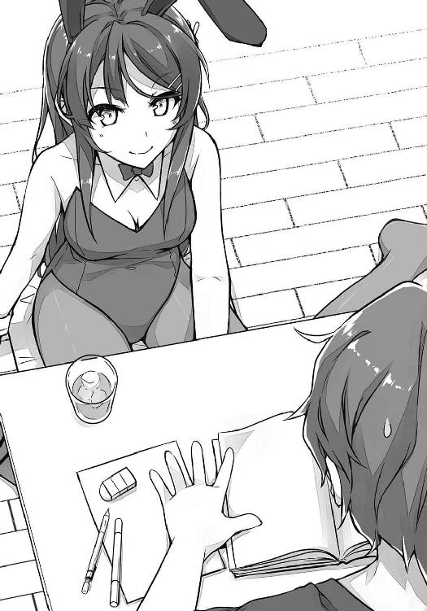
約束通り、咲太はノートを広げて教科書の例題を目で追った。
でも、気が付くと、視線は麻衣に吸い寄せられてしまう。触り心地の良さそうな剥き出しの肩。白い胸元。柔らかそうな丸みが作る胸の谷間。ウエストのラインはきゅっと引き締まり、お尻と太ももの曲線も芸術的に美しい。ずっと見ていたい。
「手ぇ、止まってる」
麻衣の手が伸びてきて、咲太の鼻をつついた。
「私じゃなくて教科書を見なさい」
怒られているのかと思ったが、そうではないことに気づく。自分に釘づけになっている咲太を見て、麻衣はどこか楽しそうだ。
「どうしたの、麻衣さん」
「なにが？」
「あんま怒らないし」
「なによそれ」
「何かあったとか？」
「別に......たまには、エサを上げた方がいいと思っただけよ」
そっぽを向いた麻衣が、小さな声で何か言っていた。
「なに？」
「あの子のために、ケンカまでするとは思わなかったって言ったの」
「もしかして、月曜のあれ見てた？」
「途中からね。あ、そうだ。靴洗いなさいよ？」
「うんこ踏んだっていうの、あれ、嘘です」
「あっそ。あーあ、やっぱりつまんない」
理不尽極まりない物言い。気分屋の女王様のご機嫌を取るのは大変だ。嫉妬というほどではないが、面白くないものは面白くないという態度。
テーブルに突っ伏した麻衣は、下から咲太を見上げてきた。胸が押し上げられて強調される。
「こら、胸を見るな」
「要するに、構ってほしかったんですか？」
「殴るわよ」
「顔はやめて」
冗談っぽくガードする。へろへろのパンチを麻衣は咲太の肩に打ち込んできた。
「はあ」
それから、大きなため息を吐かれてしまう。
「ほら、早く私の機嫌を取りなさいよ」
すごいことを言ってきた。けれど、それすらも似合うから困る。
「麻衣さん、夏休みの予定は？」
「半分は仕事。咲太は？」
「殆どバイトだけど、残りは全部麻衣さんと過ごしたいなあ。夏だし」
「海とかプールは無理だからね」
「えー」
「仕方ないでしょ。私、芸能人なんだから」
それも、ただの芸能人ではない。国民的な知名度を誇る人気の女優さん。その辺の海やプールで水着姿を披露しようものなら、海水浴場は軽くパニックに陥るだろう。
「海とかプールはかわいい彼女と行くのね」
たいして興味などなさそうに、麻衣がぐさりと刺してくる。
「麻衣さん」
「なによ？」
「好きです」
麻衣の手がすかさず伸びてきて、頬をつねってきた。
「いててててっ！」
「堂々と浮気をするな。今はあの一年生の彼氏なんでしょ」
「すごい美人がいたので、つい」
「ついで告白するな」
叱り付けるような口調でも、麻衣は笑顔だった。機嫌はよさそうだ。咲太を困らせて楽しんでいる。
「ほら、勉強」
「えー」
「この問題、全部解けるようになるまで寝かせないから」
麻衣が開いた問題集のページには、物理の応用問題がずらりと並んでいる。バニーガール姿の代償は、あまりに大きかった。だが、約束は約束だ......。
３
五日間に渡る期末試験が終わった金曜日の放課後、前に約束した通り、朋絵が買い物に付き合ってくれることになった。
藤沢駅からＪＲ東海道線に乗る。
乗車時間は約二十分。
リュックから出したファッション雑誌を、真剣な表情でチェックする朋絵の横顔を眺めているうちに横浜駅に到着した。
常にどこかしら工事中の大きな駅で、根岸線に乗り換える。
一駅だけ移動してやってきたのは桜木町だ。
最近、日本で二番目に高いビルになったランドマークタワーや、一際目を引く巨大な観覧車。七里ヶ浜とは違った港町の海がまとめて視界に収まる。
恐らく、一般的な横浜のイメージを凝縮した光景。横浜駅で外に出ても、この雰囲気は味わえない。
「先輩、もとは横浜の人なんだよね？ それも噂？」
「もうちょい陸の方だから、海とか全然見えない場所だけどな。横浜市は広いんだよ」
話を聞いているのか、いないのか......朋絵は、スマホをカメラモードにして、観覧車を遠くから撮影していた。嘘とは言え、一学期の間は恋人同士。思い出作りに余念がない。
咲太と朋絵がまずやってきたのは、駅から徒歩七、八分程度のところにある大型の商業施設。オープンから約一年の新しい店内は、さすがにどこも綺麗だった。
目的の買い物は、三十分程度で終わった。咲太の提示した予算である七、八千円くらいの枠で、朋絵はかえでに似合いそうな洋服を上下一式揃えてくれた。いかにも、今風のおしゃれな感じ。意外とリーズナブルだった。
多少、財布に余裕があるので、中身の方も年相応を目指せそうだ。
「あのさ、古賀」
「なに？」
「どんなパンツはいてんだ？」
「......」
「......」
「え？」
ぽかんと口が開いている。
「はいてないのか？」
「はいてる！ 普通の......ってか、なに言わせるの！ なに聞いてるの!?」
「いや、下着も十五歳の女子らしさが必要かと思って」
「それは妹さんが自分で買えばいいじゃん」
「あー、こないだ家に来たとき言わなかったけど、かえでは無類の家好き少女なんだよ」
「家好き少女？」
朋絵はきょとんとしていた。
「ひきこもりってこと。中学でいじめに遭って」
「え？ お母さんは？」
「妹の件で色々参っちゃったみたいで、今は一緒に住んでない。父親はその付き添い」
「......」
朋絵はじっと咲太の横顔を見ていた。
「やっとわかった」
「なにが？」
「だから、先輩、あたしのこと助けてくれたんだ」
「古賀って、すげえ空気読むよな」
今さら否定しても仕方がないので、咲太はあっさりと認めた。
「それ、先輩も。空気読めないから浮いてる人だと思ってたのに......わかっててあえて読まないじゃん」
「そうか？」
「そういうとこ」
笑いながら言うと、朋絵は左に逸れていく。
「ちょっと待ってて」
「なんで？」
「い、いいから！ 動かないでよ！」
朋絵は一方的に告げると、近くにあったエスカレーターで上のフロアへ行ってしまった。
待つこと約十分。上の階から戻ってきた朋絵の手には、中身の見えない青いビニールの巾着が握られていた。
「これ」
巾着を差し出してきたので受け取る。中身を見ようとすると、
「わー、ダメ見ちゃ！」
と、慌てて止められた。
「なんで？」
「だ、だって、今あたしがはいてるのと同じやつだから」
朋絵はスカートの裾を押さえてもじもじしている。その朋絵と、手にした青い巾着を咲太は見比べた。
「ますます見たいな」
問答無用で中を見ようとする。
「ダメ！ ダメだって！ も～、先輩、変態発言ばっかだと桜島先輩に嫌われるよ？」
「はあ？」
どうして、ここで麻衣が出てくるのだろうか。
「せっかく、あんな国民的知名度の人気女優さんに好意持ってもらえてるのに。後悔しても知らないから」
「それ、僕の勘違いだって、前に主張してなかったか？」
確実にしていた。麻衣から「好き」と言われたのかと、朋絵は聞いてきたのだ。あれは、朋絵が風邪を引いて保健室で休んでいたときだ。
「だって、こないだ先輩の家に来てるの見たし」
「ああ、お土産持ってきてくれたときか」
一緒に勉強する名目でやってきた朋絵が、帰り際に麻衣とエレベーターの前で鉢合わせしたのだ。
「あたし、先輩に協力してあげるね。桜島先輩と上手く行くように」
「誰のせいで、お付き合いが遠のいたと思ってるんだよ」
「うっ......だ、だから、応援するんだよ」
「はいはい、どうも。気持ちだけもらっとく......で、このあとどうする？ 古賀は買いたいものないのか？」
「え？ あ、うん、ひとつ見てもいい？」
朋絵と一緒にフロアを上がると、目の前に華やかでカラフルな空間が広がった。水着売り場だ。様々な色や形の水着がずらりと並んでいる。
「玲奈ちゃんたちと海に行く約束してるの。あたし、学校の水着しか持ってなくて......みんな、どんなの着るんだろ」
「中学のでいいんじゃないか？」
「なんで戻るの？ あ、これとかどうかな？」
少し恥ずかしそうに朋絵が手にしたのは、ふんわりしたデザインのピンクのビキニ。
朋絵はそれとなく自分の体に当てていた。
「僕は大量の詰め物を見て喜ぶ趣味はないな」
「先輩に見せるためじゃないし」
「そういう水着はさあ」
朋絵に身の程を教えるために、スタイル抜群のマネキンに視線を送る。だが、それ以上に説得力のある金髪美人が目に入った。思わず、口を開けて見惚れしまうレベルの異国の美女。とてもグラマラス。
綺麗な青い瞳。色っぽいぷっくりとした唇。服の上からでもわかるほど胸は大きく、ウエストはきゅっと引き締まっている。身長はたぶん麻衣と同じくらい。女性としては背が高い方だ。年齢は二十代前半から半ばくらいだろうか。水着売り場の一角で、一緒にいる黒髪ロングのスレンダーな女性に、「これはどうですか？ こっちはどうですか？」と、流暢な日本語で楽しげに迫っていた。
いや、よく見ると黒髪ロングの女性は女性ではない。線の細い中性的な顔立ちをした男性のようだ。イケメンというより、美男子という感じ。年齢は金髪の女性と同じくらい。
咲太と朋絵のみならず、その美男美女の国際的なカップルに、店内の客は興味を引かれている様子だった。
「これなんてどうでしょう？」
「どれでも好きにしろ」
彼氏の方は、どうやらご機嫌斜めらしい。
「そんなに照れなくてもいいじゃないですか。誰も見ていませんよ」
いや、むしろ、めちゃくちゃ注目されている。それに、彼氏の方は照れているのではなく、面倒くさいという感じだ。一体、どういう関係なのだろうか。
「どれも同じだ」
「それは、どれを着ても似合うって意味ですか？」
悪戯っぽく金髪碧眼の彼女が笑う。
その雰囲気は、どことなく麻衣を彷彿とさせた。自分の美貌を正しく理解した女性特有の自信。冗談なのだけど、冗談になっていない言葉。
「そうだ」
あっさりと彼女の言葉を彼氏が認める。それが意外だったのか、彼女は一瞬きょとんとしていた。でも、すぐに心底うれしそうに微笑む。周囲の空気まで華やいで見える素敵な笑顔。
「褒めてくれるなんて珍しいですね」
「僕は事実を言っただけだ」
付き合いきれないといった態度で、彼氏は売り場を離れていく。
「あ、待ってくださいよ」
跳ねるような足取りで追いかける彼女。嫌がる彼氏と無理やり腕を組んでいた。
「イギリスに帰ったくせに、なんでまた日本にいるんだ」
「こちらの美術展に出品するからだと言ったじゃないですか。あ、それと、今回は両親も来日しているので、今晩、会ってくださいね」
「ちょっ、ちょっと待て、僕は聞いてないぞ！」
「だから、今言いました」
なにやら、面白そうな展開になっている。だが、エスカレーターに乗ったふたりの姿は下の階へと消えてしまい、その後を知るすべはなくなってしまった。
「ま、そういうわけだ、古賀」
気を取り直して、朋絵に向き直る。
「ビキニはさっきの金髪美女くらいに成長してからにしろ」
「そんなの一生無理ぃ」
「こういう方がいいんじゃないか？」
近くにあった水着を一着手に取る。
上は胸からウエストのラインまでが隠れるキャミソールのような形。下はショートパンツっぽいやつ。よく見ると、上下共に、二枚重ねた造りになっている。
「もうちょっと考えて、買うのは今度にする」
しばらく水着とにらめっこしたあとで、朋絵はもとの場所に水着を戻していた。
買い物が終わると、咲太と朋絵は散歩がてら山下公園まで足を伸ばした。海に面して造られた広い公園。朋絵がスマホで写真を撮り、時々、一緒に映ってカップルのふりをした。
日が傾きかけたところで、朋絵が「最後にあれ」と、指差したのは巨大な観覧車。
イルミネーションが街に映えている。
ふたりを乗せたゴンドラはゆっくりと上昇していく。夕日に照らされた港町の景色。ここでも、スマホで写真を撮り、デートの記録を作っておく。
それが一段落したところで、咲太はひとつ問題に感じていることを朋絵に切り出すことにした。
「なあ、古賀」
「なに？」
朋絵はガラスに張り付いて、外の景色に見惚れている。
「別れ方、考えておいた方がよくないか？」
「え？ あ、うん。わかってる」
振り向いた朋絵はさらっと答えた。その態度を見て、すでに同じ問題に朋絵も気づいていたのだと咲太は思った。
学校内におけるふたりの関係性の浸透度はだいぶ高まっている。その上、上級生とケンカまでしたので、気持ちの本気度も峰ヶ原高校の生徒に広まってしまったのだ。
これでは、夏休みの間に関係がうやむやになったとするのは少し厳しい。別れる原因を具体的に作っておいた方が安全だ。
「先輩の振り方なら、考えてあるから安心して」
思いついた新しい遊びを提案するかのように、朋絵は楽しげだ。
「待て、僕が振られるのか？」
「結局、先輩は桜島先輩に未練たらたらで、それに気づいたあたしに振られる設定」
「微妙にリアルだな」
「『先輩なんていらない』って、最後は引っ叩いたことにする」
「それ、実演はしないよな？」
「リアリティは大事」
「やるのか......」
「先輩、終業式のあとは空けておいてね。海デートの帰りに、ケンカしたって想定だから」
咲太を引っ叩く計画を、朋絵は最後まで笑顔で話していた。
多くの恋人たちを乗せて回り続ける巨大な観覧車。
なのに、咲太と朋絵の間には、恋人同士の甘い空気は一切ない。嘘の恋人同士の無理した感じもまるでなかった。
ふたりの関係を言葉で言い表すなら、仲のいい先輩と後輩。じゃれ合って楽しんでいる自然な距離感がいつの間にか築かれている。
だから、以前に交わした約束は、もう果たされているような気がした。
──嘘が終わったら、友達になってくれ
ここ最近の朋絵とのやり取りは、完全に友人同士の温度になっている。
「先輩、にやにやしてなに？」
「なんでもない」
「え～、教えてよ～」
それは、咲太にとって、なんとも居心地のいい関係だった。
４
期末試験が終わると、学校内の雰囲気はもはや夏休みも同然だった。返ってくる試験の点数に一喜一憂しながらも、誰もが「今週さえ乗り切れば」という逃げの体勢になっている。
近隣の砂浜が海開きを迎えた今、教室で真面目に試験問題のおさらいなど、バカバカしくてやっていられないのだ。
目の前の七里ヶ浜は波が荒いため、遊泳禁止になっているのがせめてもの救い。目の前が海水浴場だった日には、軽く暴動くらい起きるだろう。とは言え、教室の窓からは、左に由比ヶ浜海水浴場、右に江の島東浜海水浴場を望むことができる。
遠くに見える海水浴客の影。海の家の屋根を毎日眺めていたら、勉強していても虚しくなるだけだ。
それがわかっているのか、授業をする教師にも熱心さはない。
しょうがないという空気を感じる。
生徒の中には、放課後に泳ぎに行った連中もすでに大勢いた。真っ赤に日焼けをしているので、見ればわかる。
海辺の学校特有のサマーシーズンの風景。
そうして日々は穏やかに過ぎていく。
朋絵との嘘の恋人関係も順調。誰にも疑われることはない。朋絵は友達とも仲良くやっているようで、日曜日には玲奈、日南子、亜矢と買い物に行って、水着を買ってきたとバイト中に教えてくれた。
「先輩、水着見たい？」
「いや、別に。そんなことより古賀」
「そんなことじゃないよぉ」
「こないだ選んでくれた洋服、妹すごい喜んでくれた。ありがとな」
「あ、うん。よかった」
「しかし、古賀があんなパンツをはいているとはな」
「え!? 先輩、見たの!?」
「意外とスカートの中はあれなんだな」
「ぜ、全然普通のだし！」
そんな風に朋絵と楽しく過ごしているうちに、一学期最後の一週間もやがて終わりを迎える。そして、最終日である七月十八日の金曜日は、あまりにもあっけなく、あまりにもあっさりとやってきた。
終業式の当日、咲太はいつも通りかえでにゆさゆさと体を揺すられて目を覚ました。
「おはよう、かえで」
「おはようございます」
リビングに出て、朝食の用意をする。トーストが焼けるのを待つ間にＴＶをつけると、昨日ナイトゲームで行われたフレッシュオールスターのダイジェストが流れていた。若手のみで構成された両リーグの有望選手たちが、長崎の球場を沸かせている。
ぼんやりその映像を見ながら、かえでと朝食を取った。足元では、猫のなすのがカリカリを熱心に食べている。
「明日から、夏休みですね」
「夏と言えば、なんだろうな」
「スイカですよ」
「じゃあ、今度、買ってくるか」
「丸いのがいいです」
一玉買うと食べるのが大変そうだ。少し麻衣におすそ分けすればいいかと思いながら、咲太は学校に行く準備をして家を出た。
「いってらっしゃい、お兄ちゃん」
今日もかえでが見送ってくれた。
行きの電車の中で、佑真と一緒になった。並んで吊り革に掴まる。
「咲太、夏の予定は？」
「バイト」
「古賀さんもいるしな」
からかうような佑真の視線は無視。最初の頃は、朋絵との関係に首を捻っていた佑真だが、日々の様子を見ているうちに、「アリかな？」と判断したようだ。
「国見は？」
「バイト、部活、デート」
「青春長者め」
「人のこと言えないだろ」
ふざけた感じで、佑真が軽く肩をぶつけてきた。
その後も、他愛のない話をしながら登校した。
朝のＨＲのあとは、全校生徒を体育館に集めた終業式。校長のありがたい言葉も、暑すぎてさっぱり入ってこない。うちわや扇子を持ち込んで、ぱたぱたと扇いでいる生徒もいた。教師が怒らないのは、自分たちも暑いからだ。
教室に戻った咲太を待っていたのは一学期最後のＨＲ。担任の教師からひとりずつ名前を呼ばれて、成績表が手渡された。
名字が『梓川』の咲太は、真っ先に呼ばれるので、どきどきする時間もない。早々に、十段階評価の数字が、現実として突きつけられる。
だいたい、いつも通りの成績。麻衣のバニーガール授業のおかげで、物理の成績は『８』がついたが、平均するとぴったり『６』くらいになる。
隅っこにある担任からのコメント欄には、前沢先輩と揉めたことに対するちょっとした注意が、遠回しに書かれていた。あとは取り立てて面白いことは何もない。
ＨＲの最後は、
「夏休みだからって、浮かれてケガとかするなよ」
という、担任の忠告で締めくくられた。このタイミングで言われることは、小学生の頃から変わっていない。
日直が「起立、礼」と告げる。その途端、教室には歓喜の声が上がった。終わった、やった、ついに来た。色々な感情が混ざってざわついていく。
それらを背中で聞き、咲太は足早に教室を出た。
廊下にも、名残惜しそうにたむろしている生徒たちがたくさんいる。長期休暇になったところで、スマホで連絡は取れるのだから、さっさと帰ればいいと思う。そうはいかない理由でもあるのだろうか。
居残る生徒が多いためか、校門を出てから駅までの道は、普段よりも空いていた。それは七里ヶ浜駅も同じで、咲太が来たときには十名ほどしかいなかった。
藤沢方面の先頭側まで歩き、電車を待つ。あと六分程度。
その前に、小走りで朋絵がやってきた。
「あ、先輩の方が早かった」
今日は放課後に海へ行く約束をしている。
最後のデート。
駅を待ち合わせ場所にしていた。
朋絵は服の収まりが悪いのか、スカートのウエストあたりをしきりに気にしている。
「水着、学校の更衣室で着てきたの」
質問する前に、視線に気づいた朋絵がそう教えてくれた。
海辺の学校ならではの裏ワザだ。部活をやっている連中の中には、遊び終わったあとに学校へ戻り、部室棟のシャワーを使うつわものもいるそうだ。佑真も去年やったと言っていた。
「先輩、目がエロい」
「知ってる」
制服のブラウスの下からピンクの水着が透けている。
「あんまり、見ないでって意味」
朋絵はマリントートバッグで胸元をガードしていた。
そんなやり取りをしているうちに、電車はゆるゆるとホームに入ってきた。
江ノ電の江ノ島駅で降りた咲太と朋絵がやってきたのは、徒歩十分足らずの場所にある東浜海水浴場。大きく弧を描いた広い砂浜で、毎年この時期は大勢の海水浴客で賑わう。
今日はまだ平日なので、地元の人間しかいない感じで空いていた。
海の家の前で朋絵とは一旦別れて、咲太は海パンに着替えた。胸の傷を晒すと、カタギの人間には見えなくなるので、Ｔシャツは着ておく。
荷物をロッカーに入れて外に出ると、朋絵も丁度出てきた。先に学校で水着を仕込んできただけに早い。
「よし、泳ぐか」
「え？ 感想なし？」
「あんま、見てほしくないんだろ？」
朋絵の着ている水着に、咲太は見覚えがあった。先週、買い物に付き合ってもらったときに、水着売り場で咲太が手に取ったやつ。あのときは、結局購入しなかったのに、後日友達と出かけた際に、同じのを見つけて手に入れたようだ。
「ま、かわいいと思うぞ」
「か、かわいいって言うな」
「じゃあ、なんて言ってほしい？」
「......」
少し朋絵が考え込む。
「かわいい、かな？」
「古賀は今日も情緒不安定なのか」
「乙女心はそういうものなの」
「いっちょんわからん」
「先輩、ほんと、むかつくー」
「むかつかれたから、僕は焼きトウモロコシでも食べるかな」
くるりと背を向けて、海の家へ。
「あたしも行く」
急いで朋絵は咲太の隣まで戻ってきた。
夏の太陽を浴びながら食べる焼きトウモロコシは格別だった。
途中、突然の天気雨に降られたりもしたが、どうせ海では濡れるので問題なし。
昼食は海の家で焼きそばを食べた。腹ごなしに波打ち際に朋絵を連れ出し、ずぶ濡れにしてからかって遊んだ。疲れたら砂浜にお城を作った。
「どっちの城が波に打ち勝つか勝負な」
「負けた方が、かき氷おごりね」
「吠え面かくなよ」
「先輩こそね」
結果は咲太の負け。
勝敗を分けたのは、お城の前にあるくぼみだった。朋絵が座って作業をしていたところに、お尻のあとがどっかりと残っていて、それがお堀の役目を果たしたのだ。
「尻に救われたな、古賀」
「う、うるさいな。おごりはおごりだからね」
お尻に手を当てた朋絵は、顔を真っ赤にしていた。
負けは負けなので、素直にかき氷をおごった。朋絵はいちごシロップを頼み、咲太はメロンシロップにした。
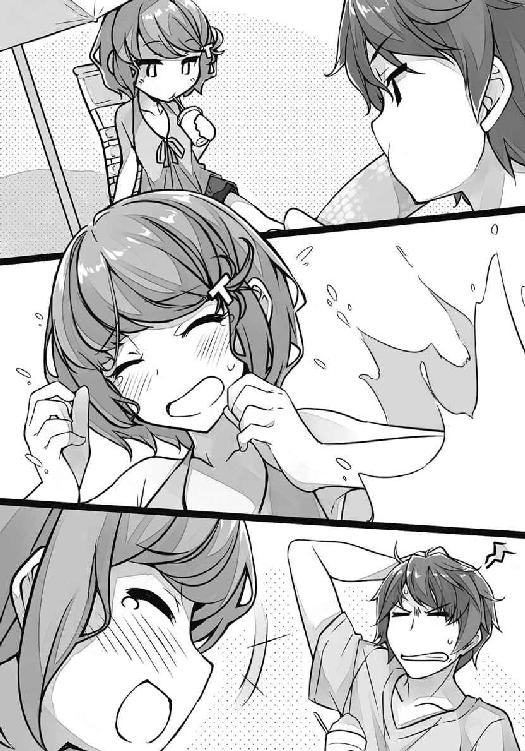
日が傾きかけた頃、咲太と朋絵は砂浜に座って、ビーチボールで遊んでいる五、六歳の男の子と女の子をぼんやり眺めていた。
女の子の強烈なアタックに男の子はたじたじだ。何度も顔面でボールを受け止めている。
「ねえ、先輩」
「また腹減ったのか？」
「今日までありがと」
「......」
「はい」
と、朋絵が手を差し出してくる。
「握手だよ」
「なんで？」
「お別れの」
咲太はＴシャツで手を拭いてから、朋絵の小さな手を握った。
「先輩は、結局、桜島先輩のことが好きで、あたしに愛想を尽かされて振られました」
物語でも読むように、朋絵が海の方に向かって語った。
「ビンタはしなくていいのか？」
「それはしたことにしておく。ここで、引っ叩いたら、あたし、超恩知らずだし」
「そっか、まー、なら、お疲れ」
こういう状況ははじめてのことで、なんと言うのが正解なのか、咲太にはわからなかった。
「うん」
「いい夏休みをな」
「先輩も......桜島先輩と付き合えるといいね」
「ま、気長にやるよ」
手を離して、朋絵が立ち上がる。
「そろそろ、帰ろ」
笑顔で言ってきた。
「そうだな。海で遊ぶと疲れる」
ふらりと咲太も立ち上がった。
「おじさんみたい」
朋絵に笑われながら、荷物を取りに海の家へと足を運ぶ。
着替えを済ませた咲太と朋絵は、江ノ電に乗って藤沢駅まで帰った。
「先輩、夏休みはなにするの？」
「ぐーたらする」
そんなどうでもいい会話を交わしながら......。
色っぽいやり取りは一切なしで......。
仲良く、楽しいだけの時間を最後まで過ごした。
気心の知れた友人と遊んでいるようで、本当に居心地のいい一日だった。
こうして、咲太と朋絵が全校生徒についた嘘は、誰にもばれることなく、無事に終わりを迎えたのだった。
楽しい楽しい夏休みがやってくる。
先輩のおかげで全部上手くできた。
これで、だいじょうぶ。
きっと、だいじょうぶ。
でも......。
先輩がいたから、あたしはひとつだけミスを犯したのかもしれない。
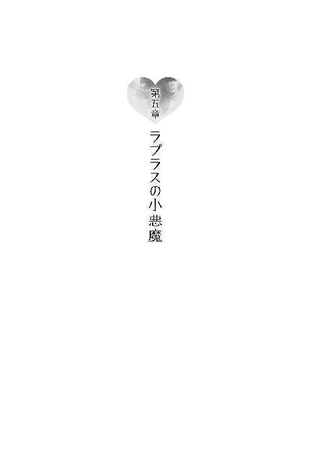
１
ゆさゆさと体が揺れている。揺らされている。
「お兄ちゃん、朝ですよ」
妹の熱意に応えて、兄である咲太はむくりと起きた。
「おはよう」
「おはようございます」
眠たい目を擦る。
「あのな、かえで」
「はい」
「世の中には、夏休みというものがあるんだぞ」
今日は惰眠を貪ってもいい日だ。夏休みの初日から元気に活動するのは、ラジオ体操に出かける小学生だけでいい。
「でも、夏休みは明日からですよね？」
かえでが体を傾けて疑問を表現している。
「......」
今、なんと言っただろうか。
「いや、今日だろ」
「いえ、明日です」
時計を手に取る。見慣れたデジタルの表示。液晶画面には、『七月十八日』とある。金曜日。咲太の記憶が正しければ、それは昨日のはず......。
七月十八日は確かにかえでの言う通りで、まだ夏休みではない。
一学期の最終日だ。
「......」
すっかりご無沙汰していたアレがまた起きたらしい。同じ日の繰り返し。六月二十七日以来の出来事。
だが、不思議と咲太に驚きはなかった。
心のどこかでこうなる予感があったのかもしれない。
朋絵と過ごした日々に、違和感が残っていた。
昨日、最後まで楽しそうに海で遊んでいた朋絵。別れ際も笑みが溢れ、悩んでいる様子などひとつもなかった。
けど、それこそが違和感の正体。
何もなさ過ぎた。
「......」
ベッドから起き上がり、リビングに出る。ＴＶをつけると、昨日のナイトゲームで行われた、プロ野球フレッシュオールスターの結果が報じられていた。
昨日......つまり、一回目の七月十八日に見たのと同じ内容。
奇妙な感覚。でも、なぜか懐かしい。
「お兄ちゃん？」
「かえで、スイカ、食べたいか？」
「え？ 食べたいです」
「丸いのを今度買ってくるよ」
その後、かえでと朝食を取り、学校に行く準備をした。
「いってらっしゃい、お兄ちゃん」
手を振るかえでに見送られ、咲太は二度目の七月十八日に踏み出した。
江ノ電の車内では、佑真と一緒になった。
隣に来た佑真が、咲太と同じように吊り革を掴む。
「咲太、夏の予定は？」
「バイト」
「古賀さんもいるしな」
覚えのあるやり取り。佑真のからかう笑顔も同じだ。
「国見は？」
「バイト、部活、デート」
「青春長者め」
「人のこと言えないだろ」
前回と同じように、ここで佑真は軽く肩をぶつけてきた。
何から何まで一度経験した七月十八日と同じだった。
下駄箱で佑真と別れた咲太は、二年の教室には行かずに、一年四組の教室へ向かった。朋絵が所属しているクラスだ。
ドア口から教室内を見ると、すぐに朋絵を見つけることができた。玲奈、日南子、亜矢と一緒に教卓の周りに集まって、なにやら楽しげに話をしている。
咲太に気づいた日南子が、朋絵を促してくれた。
一瞬驚いた顔をする朋絵。でも、すぐに少し周囲を気にしながら、廊下に出てきた。
「急に教室来られると困る」
照れた感じで、背後からの視線を気にしている。
「悪いとは思ったが、仕方ないだろ」
状況が状況だ。いち早く確認しておきたいことがあった。
「なんか、まずいことあったのか？」
咲太が認識している限り、特別おかしなことはなかったはずだ。すべて計画通り、予定通りに進行していた。無事に周囲を欺いて、夏休みを迎えた。あとは折を見て、朋絵が咲太を振ったことを身近な友達に説明すればいい。その情報は、放っておいても勝手に拡散していく。だから、もう全部終わったはずなのだ。
「なんで？」
朋絵が首を傾げる。どこかきょとんとした表情。
「なんでって」
今さらのように、会話が噛み合ってないことに咲太は気づいた。朋絵からは危機感というか、緊迫感のようなものを一切感じない。
「だから、またループしただろ」
「え？」
朋絵がぽかんと口を開ける。
この反応は、決定的だった。わかっていないという顔をしている。
ぞくぞくした感覚が、足元から駆け上がってくる。
「今日、二回目だよな？」
「......ううん」
咲太を案じてか、朋絵は遠慮がちに否定してきた。
「ちょっと待て。古賀は一回目なのか!?」
「うん」
真っ直ぐに咲太を見据えながら、朋絵は小さく頷いた。
そこで、朝のＨＲの開始を告げるチャイムが鳴った。
「わかった。一旦、今のは忘れてくれ」
「放課後は？」
「予定通りでいい」
「う、うん」
「あとでな」
そう言って立ち去ろうとする咲太に、朋絵は少し不安げな表情で手を振ってきた。
終業式が終わると、一学期最後のＨＲで担任から中身を知っている成績表を受け取った。前回見た通りの成績。前沢先輩とケンカになったことについて、担任から遠回しに注意と取れる文言が載っていたのも同じだ。
「夏休みだからって、浮かれてケガとかするなよ」
担任のありがたい忠告を背中で聞いて、咲太は二年一組の教室を出る。隣の二組は一足先にＨＲが終わったらしく、数人の生徒がだらだらと残っているだけだった。
双葉理央の姿は見当たらない。大方、いつもの場所だろう。
そう思って、物理実験室に足を伸ばすと、案の定理央はいた。黒板に何かの数式を書いている。
その背中に一方的に話しかけ、咲太は再びループが起こったことを伝えた。
「どう思う？」
説明が終わったところで理央に意見を求めた。
「梓川、頭は大丈夫？」
振り向いた理央は、机を挟んで咲太の向かいに座った。
「なんだ、その質問」
「それを聞き返すようじゃ、ダメみたいだね」
「理由を詳しく聞こうか」
「小学生にもわかるような質問をしてきたから」
「......」
最近の小学生は優秀らしい。この国の未来は安泰だ。
「梓川の考えた通り、あの一年生......」
「古賀朋絵な」
「その子がラプラスの悪魔なら、答えは簡単だよ」
「簡単か？」
「七月十八日と、七月十九日に、何か決定的な違いがあるんじゃないの？ たとえば、梓川との関係性が変わってしまうとか」
「......」
なかなかの洞察力だ。理央には朋絵との嘘の恋人契約に関しては、咲太の口からは何も説明していないのに、そういうことだと勘ぐっていたらしい。
「梓川が無期限でそんなことを続けるとは思えないからね」
咲太の性格も熟知されている。
「本当は梓川も気づいているんじゃないの？」
「なんにだよ？」
「彼女が再びサイコロを振り出した理由」
理央の視線を避けるように、咲太は天井を見た。
「......」
心当たりがないわけじゃない。あるか、ないかを問われたら、あると答える。その程度の確信ならあった。
「ただ、今回に関して言えば、古賀は今日が二回目だって気づいてないんだよ」
その点だけは腑に落ちない。
今朝のあのきょとんとした反応は、思い出すだけで少しぞっとする。肝が冷えた。
「なるほど......だとしたら、最初に私が言ったように、梓川が悪魔なのかもね」
理央はさして興味などなさそうだ。それどころか、人を悪魔呼ばわりしておきながら、その自分の発言を信じている様子もない。ただ、言ってみただけという雰囲気。
「僕は違う」
「なら、やっぱり可能性はひとつしかない」
「ひとつか......」
「そう、彼女は......嘘をついている」
その理央の言葉を、咲太は否定しなかった。
物理実験室をあとにした咲太は、待ち合わせ場所で朋絵と合流して海に向かった。前回同様、海の家で焼きトウモロコシを食べ、焼きそばを食べ、砂浜でお城を作り、かき氷を頬張って、海に入ってはしゃいだ。
なにをやっても朋絵は楽しそうだった。
帰り際には、今日までの感謝の言葉を朋絵から聞かされた。最後に別れの握手をしたのも、一回目の七月十八日に体験した通りだった。
何も変わったことはない。
これで、明日がやってくれば何も言うことはない状況だ。
だが、翌朝、咲太が目を覚ましたのは、またしても七月十八日の金曜日だった。
これで三度目となる一学期の最終日。
なかなか咲太の夏休みはやってこない。
六月二十七日のときは、四度目は来なかった。
その経験を踏まえ、咲太はこの日一日は、あえて前回と同じ行動を取ることにした。もしかしたら、回数制なのかもしれないと思ったからだ。
ループしていることを知らない朋絵は、今回も海で無邪気にはしゃいでいた。
２
咲太の淡い期待も虚しく、四度目の七月十八日の朝はやってきた。
やはり、ラプラスの悪魔を退治する以外に、この状況から抜け出すことはできそうにない。
いつもの時間に電車に乗ると、今回も佑真と一緒になった。
「よ」
「ああ」
さわやかな笑顔に、咲太は無愛想に答えた。
それを気にした様子もなく、佑真が隣に来て吊り革を握る。
のどかな海辺の街並みを窓の外に映しながら、咲太は口を開いた。
「なあ、国見」
「ん？」
「彼女いるよな」
「ありがたいことにな」
「そんなお前に想いを寄せている他の女子がいたらどうする？」
「......」
佑真の目に、わずかだが警戒の光が宿った。
「その子の気持ちに気づいたら、国見はどうするんだ？」
「それ、誰のこと言ってんだよ」
咲太の真意を探るように、佑真が横目を向けてくる。
「たとえばの話」
「たとえばね」
核心的なことはひとつも言っていない。それでも、佑真の真剣さから、咲太はある事実を察した。
佑真は理央の気持ちに気づいている。
だからこそ、意味深な咲太の発言を、はぐらかさずに聞いてくれているのだ。
「俺が気づいてること......ばれてんのかな」
「今はまだ気づいてない」
お互い、誰とは言わずに確認の言葉を交わした。
「今はね」
佑真は困ったように苦笑いを浮かべる。
「本人が胸に秘めた想いを、無理やり引っ張り出させるっていうのは、正直抵抗あるよな」
誰にともなく佑真がそうもらす。その目は正面に広がる海に注がれていた。眩しそうに目を細めている。
「自意識過剰って気もするし、俺って何様だよって」
言葉を選びながら、佑真が話を続ける。
「けど、このままでいいとも思ってない。どうするのが正解なんだ？」
「聞いたのは僕だ」
結局、答えは出ないまま、七里ヶ浜駅に電車は到着した。
全校生徒を体育館に集めた終業式。咲太にとっては四度目の終業式になる。当然、校長の話も四度目なので、咲太は耳を傾けずにずっと別のことを考えていた。
それは朋絵のこと。
一年生の列の中に、その朋絵の姿を見つける。
視線に気づいたのか、朋絵がちらっと振り向いた。
目が合うと、少し驚いた顔をする。でも、すぐに口元に笑みを浮かべた。
その表情を見た瞬間に、咲太の中ですべてが繋がった気がした。
──そう、彼女は......嘘をついている
まさに、その通りなのだ。
放課後、七里ヶ浜駅で待ち合わせた咲太と朋絵は、お互いの成績の話なんかをしながら、三駅先の江ノ島駅で降りた。
レンガ風の石畳が続くすばな通りを抜けて海辺に出る。１３４号線は、地下通路を使って渡った。
そのまま江の島に向けて直進する。
「先輩？ 海、こっちだよ」
朋絵が左を指差す。海の家がずらりと並ぶ東浜海水浴場だ。ちなみに、右側には西浜海水浴場がある。
「僕は今日が四度目なんだよ」
「海は飽きたってこと？」
「古賀は空気が読めて助かる」
そう言いながら、江の島にかかる弁天橋を渡っていく。
「江の島行くの？」
跳ねるような足取りで追いかけてきた朋絵が、咲太の横から顔を突き出してきた。
「最初のデートで行きそびれただろ」
「あ、そうだね」
あのときは、橋を途中まで渡ったところで、朋絵が困った様子のクラスメイトを発見したのだ。実際、その子......米山奈々は、友達とお揃いで買ったストラップをなくして困っていた。
「島、空、海」
進行方向には、江の島と青い空と広い海。それ以外は何も見えない。
朋絵が空を掴もうと両手を伸ばす。
上空を優雅に旋回しているのはトビだ。海に遊びに来た人が、頻繁に昼食を奪われるという被害が出ている。
四百メートル近く続いた橋を渡り切ると、観光地らしいお土産屋さんや、地元の魚介を扱う商店が咲太と朋絵を出迎えた。海の季節は活気に溢れている。
鳥居を抜けると、緩やかとは言えない坂になった。道幅も狭くなり、懐かしい趣が一段と増す。両脇には、地元の名物であるシラスのお店や、色鮮やかながま口の財布が並んだお店など、色々と目を引かれる。
すれ違った大学生のカップルは、やけに大きなタコせんべいをふたりで分けながら食べていた。
横から何かを要求する視線を感じる。
「買い食いは太るぞ」
そう言いながらも、店先のおばちゃんにお金を渡した。
「明日からダイエットするし」
「へー」
朋絵の相手はほどほどにして、目の前で焼いてくれたタコせんべいを受け取った。
「おっきい」
咲太や朋絵の顔より大きい。
それをふたりで少しずつ割って食べながら、坂になった参道をさらに進む。
見えてきたのは見上げるほど続く階段。途中には赤い鳥居がある。この上は三社からなる江島神社だ。
鳥居の前でタコせんべいを胃袋に収めた咲太と朋絵は、一段ずつ階段を上った。
無口になりながら、黙々と足を動かしてたどり着いたのは、一番手前にある辺津宮。ふたりともすっかり息が上がっている。
「足、ぱんぱん」
「一年生のくせに」
「なにその理屈」
「若いんだろ」
息を整えてから揃ってお参りをした。
「古賀、縁結びの絵馬だってさ」
近くのむすびの樹に、たくさんの絵馬がくくりつけられている。
「書いてくか」
「え？ 神様に嘘つくの？」
驚く朋絵を無視して、咲太は巫女のお姉さんから絵馬を買った。
「せ、先輩」
戸惑う朋絵を、照れているんだと思ったのか、絵馬を差し出すお姉さんはにこやかに笑っていた。
借りたペンで咲太はハートマークの中に『梓川咲太』とフルネームを書く。
「ほら」
「罰当たりだって」
「みんなをだますって決めた時点で、地獄に落ちる覚悟はできてんだろ」
「あたしはいいけど......先輩を巻き込むのは嫌」
迷った様子で朋絵が絵馬を裏返す。そこには、どんな人のための絵馬かが書かれていた。一番先頭にあったのは片想いの恋。
朋絵が小さな声で「あ」ともらすのが聞こえた。
少し悩んでから、朋絵がペンを走らせる。『梓川咲太』の隣に、『古賀朋絵』と丸文字で書き込まれた。それを、咲太は朋絵の手からひょいっと奪うと、むすびの樹にくくりつける。
「先輩！ みんなの本当のお願いの中に、嘘を混ぜたら罰が当たるって！ あたし、持って帰るから！」
腕を引っ張りながら、朋絵が小声で必死に止めようとしてくる。「嘘」という言葉が、巫女のお姉さんに聞かれていないか気にしていた。
「嘘をついてるのは僕だけだから、平気だろ」
「え？」
朋絵の腕から力が抜ける。その隙に、咲太は絵馬をしっかりと結び付けた。これなら、簡単には外せない。
再び黙々と修行をしているような境地で階段を上り、赤い柱が印象的な中津宮をお参りした。さらに歩き続けてやってきたのは、遠くからでも見えていた展望台の足元。
その脇を通り過ぎて、咲太と朋絵は一番奥の奥津宮を目指した。
石畳の古い通りは、道幅も狭くて、雰囲気がある。少し歩くと、階段の上り下りがあって、その周辺にはお土産屋さんや甘味処、食事処が軒を連ねていた。
古い映画に出てきそうな人のあたたかみを感じさせる風景。近隣に住んでいる人同士が、顔見知りだから成立しているやさしい空気感がある。時折、猫が前を横切り、そのたびに朋絵が触ろうとして逃げられていた。
「先輩、さっきの......」
「ん？」
「むすびの樹の......」
「......」
「ううん、なんでもない」
「......」
朋絵が何を聞こうとしたのかはわかる。
むすびの樹の前で咲太が口にした言葉。
──嘘をついてるのは僕だけだから、平気だろ
横を歩く朋絵からは、その真意を確認したい感情が伝わってきた。けれど、朋絵が再び口を開く前に、奥津宮に到着した。
黙ってお参りする。手を合わせる朋絵の横顔は、やけに真剣だった。一体、何を願ったのだろうか。
さらに奥へと進むと、道幅は狭くなる。細い階段を下りた先は、江の島の西の端......稚児ヶ淵に行きつく。
幅五十メートルほど続く海辺の岩場。海水に浸食された岩は、表面が削られて穏やかな顔をしている。この場所は、関東大震災の際に隆起して、今の姿になったらしい。
天気のいい今日は、富士山がよく見えた。気持ちのいい見晴らし。
海の風が疲れた体を包み込んでくれる。自然が造り出した不思議な地形に、他のカップルたちも足を止めていた。
「日南子ちゃんが、ここ夕日がすごい綺麗だって言ってた」
手すりに両手を乗せた朋絵は、独り言のようにそう呟いていた。
恐らく、朋絵は気づいている。
咲太が江の島に誘った理由に......。
先ほどの咲太の言葉の意味に......。
気づいた上で、気づいていないふりをしている。
「行くか」
「うん」
交わす言葉は、次第に短くなっていた。
来た道を黙々と戻る。
咲太と朋絵に殆ど会話はなかった。
行きは大変だった階段をゆっくりと下り、最初の鳥居をくぐった。活気のある商店から、呼び込みの声がかかる。それらに見送られながら、咲太と朋絵は江の島に背を向けた。
帰りがけの弁天橋からは、左右に広がる海水浴場の様子がよく見えた。行きとは左右が逆になって、左が西浜海水浴場で、右が東浜海水浴場だ。太陽も南の空へと高く昇り、海は賑わいを見せている。峰ヶ原高校の生徒の中には、終業式のあとで直行したグループもあるはずだ。咲太たちも当初はその予定でいた。
「ねえ、先輩。今からでも海行かない？」
海水浴場の様子を見ていた朋絵が、そんなことを言ってくる。
「あたし、この下、水着だし」
声は弾んで楽しげだ。今まで通りで、いつも通りの朋絵。
それを見て、咲太は決心した。橋の途中で突然足を止める。
気づくのが少し遅れた朋絵は、三メートルほど先に進んでから疑問の表情で振り返った。ふたりが立ち止まったのは弁天橋の丁度真ん中あたり。左右は海だ。
「先輩？」
「古賀、もう嘘は終わりだ」
「え？ あ、うん、今日までだしね」
「そうじゃない」
「......先輩？ 顔、なんかこわいよ？」
わからないという朋絵の顔。
「......」
それでも、咲太は険しい態度を崩さなかった。
「なに？ どうしたの？」
「僕が気づかないと思ったか？」
「だから、何の話？」
「嘘でも約三週間、恋人やってたんだぞ」
「......」
「前に、古賀言ったよな。僕は空気を読めているくせに読まないって」
「先輩、変だよ？」
困惑が顔に滲んでいる。それでも、咲太は続けた。
「古賀が言わなくても、僕は言う」
「......」
「いいんだな？」
ずっと咲太から視線を逸らさなかった朋絵が、わずかに俯いた。
「古賀が何度サイコロを振り直しても、人の気持ちは変わらない」
「......」
「嘘は本当にならないし、本当は嘘にならないんだ」
その言葉に反応して、朋絵は制服の裾をぎゅっと掴んだ。何かに耐えるように......。
「......百回やっても？」
俯いたまま、絞り出された朋絵の声が海風にさらわれていく。
「ああ」
「......千回やっても？」
その声は震えていた。
「そうだ」
「一万回でも？」
「一億回やっても変わらない。僕が好きなのは麻衣さんだ」
「......」
「同じことを繰り返しても、古賀の気持ちだってずっとそのままだ」
「......」
「......」
重たい沈黙がふたりの間に積もる。
空からは突然大きな雨粒が落ちてきた。すぐに乾いた地面を色濃く塗り替えていく。
見上げた空は青い。天気雨だ。
「先輩、嘘つきだよ......」
朋絵のか細い声は、雨音に紛れてしまう。
「......気持ちは変わるよ」
当たると痛いくらいの大粒の雨。勢いは増す一方だった。
「繰り返した分だけ、積み重なっていく......積み重なっていった......」
掠れた朋絵の声は、自らがついた嘘を認めていた。今日という日を繰り返していることを朋絵は自覚している。自覚した上で、今日も一回目として振る舞っていたのだ。二回目と三回目の七月十八日は、何も知らないふりをして海ではしゃいでいた。そう演じていた。
すべては、ある感情を隠すため。
「忘れようって決めて......なのに、忘れられなくて。今度こそ、忘れようと思ったのに......ダメだった。この気持ちとさよならしようって決めてたのに！」
震える想いが咲太の胸に突き刺さる。
朋絵の中で押し殺されていた強い感情が、ようやく少しだけ顔を出している。それはとても人間らしい感情。悪魔は持ち合わせていないであろう感情。
「今日はね、先輩と楽しく最後のデートをして......嘘の恋人を笑顔で終わらせなきゃいけないの。あたしと別れた先輩は、ちゃんと桜島先輩と上手くいって、二学期になったら、あたしは『よかったね』って、少し意地悪に先輩をからかうんだよ？」
「古賀......」
「それで、先輩と友達になるの。仲良く何でも話せる友達。先輩はね、あたしがちょっと甘えられる年上の友達。先輩もそれをまんざらでもないって思ってくれて......今までのことも、『嘘の恋人ごっこ、結構、面白かったね』って思い出話にして、これからもずっと仲良くするんだから！」
顔を上げた朋絵は、にっこりと笑おうとして失敗した。
「するんだから......」
悲痛な思いがその表情には宿っている。胸が痛いくらいに締め付けられた。
「あたしが望んでいるのはそれだけ......特別な何かをほしがっているわけじゃない。わがままだって言ってない。誰にも迷惑だってかけてないよ？ なのに......なのに、どうして、明日になってくれないの！」
「......」
「この気持ちも終わりにするって決めてるのに、なんで朝起きると、昨日よりも気持ちが大きくなってるの!?」
そんなのは当たり前だ。胸の奥深くに隠しても、なくなったわけじゃない。消えてしまったわけじゃない。その気持ちは胸の奥深くで息づいている。
違う違うと否定すればするほど、逆にその気持ちを強く意識してしまうのだ。
「こんなの酷いよ......」
人の記憶や感情はデジタルじゃない。スイッチひとつで消せるものではない。スマホに登録された番号やメアド、ＩＤとは違うのだ。消して、はい、さようならとはいかない。人はもっと違うところで結びついている。この三週間で咲太と朋絵は結びついてしまった。
「なかったことにするって決めたのに......あたしはそう決めたの！」
「そんなことしなくていい」
「しなきゃダメ！」
自分で決めた生き方に、朋絵はどこまでも一途だ。一途に自分を苦しめている。
「だって、先輩は桜島先輩のことが好きじゃん。あたしなんか迷惑でしょ？ こんな気持ち、友達は持ってないもん。友達にはいらない感情だもん！」
それは咲太が朋絵に求めたこと。
──嘘が終わったら、友達になってくれ
その願いを叶えるために、朋絵は自分の気持ちを我慢することに決めた。我慢しなければならなかった。咲太の負担にならないようにするために。
だから、何も言わずにひとりで諦めようとした。気持ちを全部押し殺そうとした。最初から何もなかったことにしようとした。そうやって、咲太の友達になろうとしてくれたのだ。
ひとつ年下の友達。少しだけ生意気な後輩として側にいてくれた。
でも、考えた通りに気持ちをすべて割り切って、何もかもを自分で決めた通りにするなんて到底不可能な話だ。
制御できないほどに強い感情だってある。自分では理解し切れていない感情だってある。
そうした感情と向き合うのは、朋絵にとっては、はじめてのことだったのかもしれない。
嘘ではじまったふたりの関係。
なのに、気が付くと気持ちは本当になっていた。本物になっていた。
それでも、嘘だから別れの日は淡々とやってきて......本当になってしまった朋絵の気持ちだけが置き去りにされてしまった。解決されないまま、心の奥に仕舞われた強い感情。すっきりと気持ちが晴れることはなく、外に出してほしいとその想いは暗闇の中で朋絵に訴え続けた。
けど、朋絵の理性はそれを許さない。外に出したら、誰かを困らせるから。咲太を困らせるから。咲太の求めた『古賀朋絵』であり続けるために、朋絵は本当の感情を殺し続けるしかなかった。我慢に我慢を重ねるしかなかった。
それが、苦しくて、寂しくて、行き場がなくて、ついには、眠っていた悪魔を再び起こしたのだ。
それが悪魔の正体。朋絵の中に抑え込まれた朋絵自身。その本心は、このまま夏休みがやってくることを拒んだ。たとえ嘘であっても、今日までは咲太と朋絵は恋人同士だから......。明日など来なければいいと思ったのだろう。
それでもなお、朋絵は黙って咲太を忘れようとしていた。最初からなかったことにしようとした。だから、嘘をついたのだ。
「古賀」
「っ！」
声をかけると怯えたように朋絵が反応した。
たとえ傷付けることになっても、言わなければならないことはある。
「僕がいつ迷惑だって言った」
「ひどいよ、先輩......」
「今頃、気づいたのか？」
「先輩なんて嫌い、大嫌い！ 先輩がいけないんじゃん！ あたしに、いっぱいやさしくしたから......」
「そうだよ。だから、僕に気を遣う必要なんてないんだ」
「こんなあたしも嫌い、大嫌い......こんなのあたしじゃない！」
「いいや、古賀だよ。それも古賀だ」
「違う！ これはあたしじゃないよ！ あたしは夏休みが来てほしい。早く先輩と友達になって楽しく笑いたい！ それしか望んでない！」
この期に及んでも、朋絵は涙を一滴も零していなかった。こぼしたら全部が終わってしまうことを知っているかのように、潤んだ瞳で咲太を見ている。
「もう、自分に嘘をつくのはやめろ」
「......」
「お前は、正義の女子高生だろ？」
「ずるい......そんな言い方......」
「古賀にできないことなんてない」
「ずるい、ずるいよ、先輩......」
「だからさ、もう我慢しなくていいんだ」
「先輩のバカ！ バカ！ 嫌い、大嫌い！ でも......」
朋絵の声は悲痛な想いに濡れていた。
「でも......好き......」
じわっと瞳に涙が溜まっていく。
「あたしは、先輩が好き......」
鼻をすすりながら、朋絵が大きく息を吸い込んだ。
「大好きぃ───！」
ずっと溜め込んでいた想いが、朋絵の体から一気に溢れ出す。咲太の全身に真正面からぶつかってきた。
その純粋さは、空高く舞い上がっていく。
「古賀」
そっと、声をかけた。知り得る限りのやさしさを総動員して......。
朋絵は一瞬だけ涙を耐えようとしていた。けれど、咲太の言葉がそれを許さなかった。
「よくがんばったな」
「ううっ......」
朋絵が顔をくしゃくしゃにする。溢れ出る涙は、きらきらと朋絵の頬を輝かせた。
「ほんとがんばった」
「うう......うわあああああ............」
言葉にならない嗚咽が空へと昇る。わんわんと泣き続ける朋絵の足元を、涙の雨が濡らしていく。ぼたぼたと、ぼたぼたと......。
ふたりを見下ろす空は青い。高く、遠く、どこまでも透き通っている。
もう、天気雨は上がっていた。
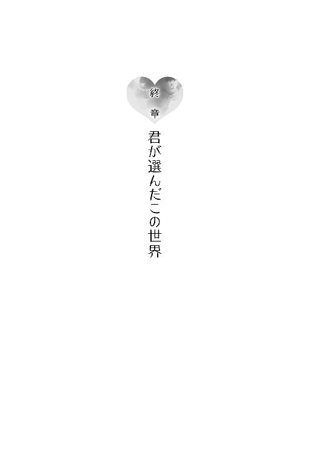
まぶたの向こうが少し明るい。そのことに気づき、咲太は自分が目を覚ましたのだと自覚した。
カーテンの隙間から差し込む朝の光が、見慣れた天井に雲のような影を作っている。背中に伝わる馴染んだベッドの感触は、ここが自分の部屋であることを教えてくれていた。
自然とデジタルの目覚まし時計に手が伸びる。
繰り返しの現象が起こっていなければ、今日は七月十九日のはずだ。夏休みの初日。
そう頭の中で確認してから、咲太は時計の表示を視界に収めた。
「......」
一瞬、液晶の数字が読めなかった。七月十九日か、そうでなければ、また繰り返しの七月十八日だと思っていた。けれど、時計は別の日付を咲太に示していたのだ。
「は？」
起き上がった咲太はリビングへ出て、ＴＶをつけた。
丁度、朝のニュース番組がはじまったところだった。
「やってくれました。日本代表！」
どこか懐かしさすら感じる、聞き覚えのあるフレーズ。興奮しながらも、男性キャスターが喜びをあらわにしている。
「おはようございます。今日は六月二十七日。金曜日。早速、サッカーの話題からいきたいと思います！」
続けて映し出されたのは、地球の裏側で行われているワールドカップの模様。グループリーグ第二戦のダイジェストだ。
１点のビハインドで迎えた前半終了間際。敵陣のドリブルで切り込んだ日本の背番号10番が、相手選手の強引な守備によって倒されてしまう。吹かれるホイッスル。
ペナルティエリアの少し外で得たフリーキックのチャンスだ。蹴るのは背番号４番。短い助走から繰り出されたシュートは、相手キーパーの逆をついて、ゴールネットに突き刺さる。雄叫びを上げる背番号４番。そこへ集まり歓喜に沸く日本代表イレブン。
この得点で勢い付いた日本は、後半に追加点を決めて、２---１で勝利した。
なおも試合を振り返るニュース番組をぼんやり見ながら、咲太はある人物のことを考えていた。
古賀朋絵。
ひとつ下の後輩にして、ラプラスの悪魔。
「すげえな、あいつ......」
無自覚にそんな言葉がもれる。
「最初から、全部が未来のシミュレーションだったのかよ」
あの日、理央が示唆した通りだ。同じ日の繰り返しは、時間が戻っているのではなく、ある時間から未来を計算したもの。
そして、この場合のある時間とは、すなわち、六月二十七日。
このとんでもない状況に、咲太は笑うしかなかった。
かえでと朝食を取ったあと、いつも通りに学校へ行く身支度をして咲太は家を出た。
梅雨が明けきらない六月の終わり。昨日まで経験していた七月より、照り付ける太陽の日差しはましだが、その分湿度の方は高くてじめじめしている。
何事もなく学校に着くと、下駄箱のところで佑真に声をかけられた。
「うす、咲太。今日も寝癖立ってるぞ」
「これはこういうヘアスタイルなんだよ」
「斬新だな」
そう言って佑真が笑う。身に覚えのあるやり取り。以前に体験した『六月二十七日』と同じだ。
「......」
「どうした、咲太？」
「......いや」
「なんだよ？」
「ほんと国見はイケメンでむかつくよな」
「はあ？ なんだそれ」
「あ～、ほんとむかつくな」
午前中の授業は、数学、物理、英語、現国の四教科。数学の時間には「ここ期末に出すからな～」と言われた。物理教師の寒いギャグも健在。三時間目の英語では、「ミスターアズサガワ、リッスントゥーミー」と、ぼんやりしているところを注意され、教科書を読まされた。当然、現国教師のＹシャツの襟には、口紅がついていた。
ひとつひとつを確認するにつれて、本当に未来を先に体験していたのだという実感が咲太には湧いてきていた。
そうして訪れた昼休み。
三階の空き教室には、咲太と麻衣のふたりだけ。
少し開けた窓から、湿った海風が吹き込んでくる。わずかに揺れるカーテン。穏やかな時間がここにはあった。
ふたりが挟んだ机の上には、麻衣が咲太のために作ってきてくれたお弁当がある。鶏の竜田揚げ、卵焼き、ポテトサラダにはプチトマトが添えられ、ヒジキと豆の煮ものまで揃っている。そのひとつひとつを味わいながら、咲太は「おいしい」を言い続けた。
料理の腕前を披露できた麻衣は満足げだ。
完食したところで、
「麻衣さん」
と、咲太は改まって呼びかけた。
「ん？」
まだ食事中の麻衣は、箸の先端を甘噛みしている。
「好きです。付き合ってください」
「......」
麻衣はあっさりと視線を逸らすと、自分のお弁当の卵焼きを箸で口に運んだ。
「......」
もぐもぐと咀嚼している。
「......」
ごくんと飲み込むのを待っても返事はない。
「え？ 無視？」
「なんか、ときめかない」
退屈そうに麻衣がため息を落とす。
「一ヵ月もの間、同じこと言われてると何も感じなくなる」
「そっか......失恋か。じゃあ、新しい恋を探すしかないな」
「ちょっ......」
「今までありがとうございました」
ぺこりとお辞儀をしてから、「はあ～」と失恋の深いため息を咲太は落とした。
「だ、だめとは言ってない......なに、諦めようとしてるのよ！」
拗ねたような麻衣の瞳。
「なら、いいの？」
「う......咲太のくせに生意気」
「いいの？」
諦めずにもう一押しすると、
「......うん」
と、小さく頷き、
「いいよ」
と、消えそうな声で麻衣は呟いた。
恥ずかしさを隠すように、麻衣が卵焼きを無言で頬張る。なんともかわいらしい。ここは、この勢いでひとつ大切なことを確認しておこう。
「あのさ」
「なによ」
「麻衣さんって、僕のことどう思ってる？」
「どうって、それは......」
言いながら、麻衣は視線を箸で摘んだプチトマトに落とす。
「それは？」
「いいでしょ、別に」
「よくないから聞いてるんだけど」
「咲太、しつこい」
「そりゃ、大事なことだからね」
「どうしても聞きたい？」
「麻衣さんの口から聞きたい」
その唇にプチトマトが吸い込まれていく。ゆっくりと噛んでからごくんと飲み込む。
「一回しか言わないからね」
「はい」
「......」
「......」
一瞬の沈黙。麻衣が静かに息を吸い込むのがわかった。
その直後、「あっ」と麻衣の視線が窓の外に何かを見つける。
「ん？」
つられて咲太も横を向いた。見えるのは七里ヶ浜の海と空。特に珍しいものは何もない。大きな夏の雲が流れているくらいだ。
その咲太に、ふわっと甘い香りが被さってきた。視界がわずかに暗くなる。気づいたときには、やわらかくてあたたかい感触が頬に触れていた。
驚きと共に、正面に向き直る。
「これでわかったでしょ？」
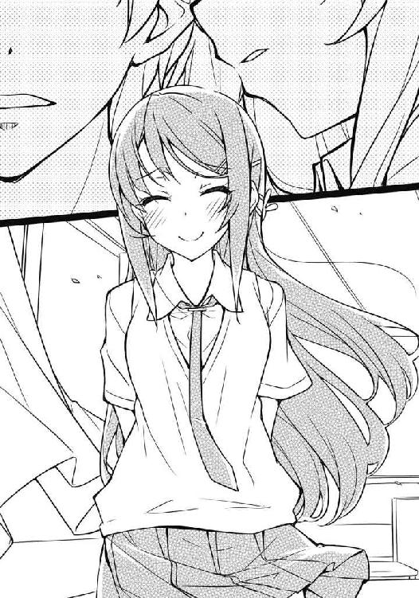
少し照れながら、麻衣が悪戯っぽく笑う。
思わず、手が頬に伸びた。先ほどの感触は間違いなく、麻衣の唇だったのだ。
「マウストゥマウスがよかったな」
「調子に乗るな」
机の下で、麻衣が足を踏んでくる。でも、全然痛くない。
「にやにやしないの」
「させてるの、麻衣さんじゃん」
咲太は麻衣と過ごす幸せな時間を噛み締めていた。
予鈴が鳴ったところで、麻衣との昼休みデートは残念ながら終了。二年の教室に戻るため、咲太はひとりで廊下を歩いていた。
途中、通りかかった階段の踊り場に、見知った人物を見つけた。
古賀朋絵だ。
一緒にいるのは、三年の前沢先輩。
ただならぬ空気が漂っていたので、咲太は廊下の壁に張り付いて隠れた。
「ごめんなさい。あたし、前沢先輩とは付き合えません」
様子を窺うと、朋絵がぺこりと頭を下げている。
「今、彼氏とかいないよな？」
「はい」
「好きなやついるの？」
「はい」
迷わずに朋絵が頷く。
「それ、バスケ部のやつ？」
「いえ」
「じゃあ......」
「その人は、今どきスマホも持ってない原始人です」
そう告げた朋絵の表情には、ぱっと笑顔の花が咲いていた。
「はあ？」
前沢先輩は意味がわからない様子だ。それでも、「そっか、じゃあまた」と、何がまたなのかよくわからない言葉を残して、階段を上がってこようとする。
咲太は何食わぬ顔で、前沢先輩とすれ違い、逆に階段を下りていった。
すぐに気づいた朋絵と目が合った。
「覗きは犯罪」
と、文句を言ってくる。
その一言で、朋絵はすべてを覚えているのだと咲太は確信した。
「たまたま通りかかったんだ」
「ふ～ん」
「だいたい、誰が原始人だ」
「別に先輩のことだなんて言ってない」
ぷうっと朋絵が頬を膨らませる。
「自意識過剰とか、かっこ悪い」
体感的には、咲太が朋絵を振ったのは昨日の出来事。それでも、こんな風に接することができるのは朋絵が強いからだ。この状況を朋絵が許してくれている。
「先輩、責任取ってよ？」
「ん？」
「これで玲奈ちゃんに嫌われて、クラスに居場所なくなるんだから」
「なんでその責任が僕にくる？」
「だって、先輩のせいだし」
「理由を聞こうか」
「先輩があたしを大人にしたんじゃん」
「なんか、エロいな」
「先輩って、わかってるくせにいつもそういうこと言うよね。照れ隠し？」
お見通しだとばかりに、にやついている。その小生意気な態度に、若干腹は立ったが、ここで反撃したら朋絵の言葉を認めることになる。だから、さっさと話を戻した。
「ま、古賀に何かあっても、一生、僕が友達でいてやるよ」
そう言いながら、朋絵の頭にぽんと手を置く。
「だから、ひとりぼっちにはならない」
「先輩を親友にしてあげるの、あたしの方だし」
さらに生意気を言ってきたので、六時起きでセットしているらしい髪を咲太はくしゃくしゃにしてやった。
「あ～、やめてって！」
昼休みの終わりを告げるチャイムが鳴るまで、咲太はやめなかった。
それから、夏休みがはじまるまでの期間は、驚きの連続だった。
咲太と朋絵が先に体験した日々は、実際にその通りになったのだ。
サッカー日本代表はグループリーグを見事に突破。快進撃の勢いで、ベスト８まで勝ち進んだ。惜しくもそこで敗退となったが、念願の優勝も夢ではないことを世界中に知らしめる結果と言えた。
身近な高校生活の中では、期末試験の内容がそっくり同じだった。どの教科も一度は受けたことがある試験問題。答え合わせもしたので、高得点を獲得。
多少の罪の意識はあったが、思春期症候群に巻き込まれた苦労を考えれば、これくらいのことで、罰は当たらないだろう。
あとは、バイト先に朋絵が新人として入ってきた。
ある土曜日には、上里沙希から屋上への呼び出しを受けた。
麻衣に関する出来事も同様で、かえでのために服を持ってきてくれたり、ドラマの撮影で一週間鹿児島に行ったり、そこから電話をくれたり、突然勉強をさせられたり、そのときにバニーガールの衣装を着てくれるという状況も訪れた。
朋絵と『嘘の恋人をする』という関係がなくなった分、微妙な違いはあったけれど、ひとつの例外もなく、似たような出来事は全部起こったのだ。
朋絵と一緒に経験した六月二十七日から七月十八日までの日々が、単なる夢ではなくて、本当に未来予測だったと咲太に思わせるには、十分すぎる状況だった。
ある日の放課後、そのことを物理実験室で理央に話した。
「本当なら、驚くべき事態だね」
「僕が嘘をつくとでも？」
「その未来予測の中で、一年生の女子と嘘の恋人やっていた梓川なら、それくらいの嘘はつくんじゃない？」
そう返されては、それ以上信じろとは言えなかった。
「でも、なるほどね......周囲に合わせるため、必死に空気を読んでいた少女は、気が付くと未来まで読めるようになっていたわけだ」
ひとり納得したように、理央は誰にともなくそう呟いていた。
ただ、一点だけ引っかかるのは、どうして咲太だけが朋絵の起こした思春期症候群に巻き込まれたのか。その他七十億人の人類は状況を認識していなかった。同じ日が繰り返されていることにも気づいていなかった。
それを理央に質問すると、
「量子もつれじゃないの？」
と、知っていて当然のように言われた。
「量子がもつれるんだな」
「そ、わかった？」
「いっちょんわからん」
「なにそれ？」
「まったくわからないという意味らしい」
「ふ～ん」
少し興味があったのか、理央は黒板に『いっちょん』と書いている。
「てか、量子もつれってなんだ？」
「離れた位置にあるふたつの粒子が、何の媒介も必要とせずに、瞬時に情報を共有して動く奇妙な現象のこと」
「粒子もケータイでやり取りしてるとか？」
「何の媒介も必要としないって言ったでしょ」
「なら、粒子のテレパシー的なものか？」
「いい目の付け所だね」
「え、まじ？」
冗談のつもりだったのだが......。
「実際に、量子もつれの現象を応用して、テレパシーが実現できないかを研究している世界有数の有名大学の教授だっているよ」
「それこそ、まじか」
「量子もつれ自体は確認されている現象だからね」
「つまり、双葉は僕と古賀がもつれて同期してたって言いたいのか？」
ゆっくりと理央が頷く。
「けど、なんでもつれたんだよ」
「量子もつれが起こるのは、粒子同士が衝突したあと。その一年生と、最近何か衝撃を与え合ったりはしなかった？」
心当たりならひとつある。
「尻を蹴り合った」
「......」
「......」
「梓川」
「なんだ？」
「再現実験をしたい。尻を出せ」
「断る」
「いいから出せ、ブタ野郎」
「それが人にものを頼む態度か！」
あのとき、理央は地味に残念そうな顔をしていた。何気に本気だったのかもしれない。
前沢先輩を振った朋絵はというと......朋絵が前に言っていた通り、玲奈のグループからは追い出されてしまっていた。
翌週の水曜日。屋上に続く階段にぽつんと座って、お弁当をひとりで食べている朋絵の姿を咲太は目撃したのだ。
その日は、隣に座って朋絵と一緒に昼食を取った。
「トイレも一緒に行ってやろうか」
「その方が恥ずかしい」
「遠慮するなよ」
「本気で嫌なの。通報するよ？」
そんなことが、木曜日、金曜日と続いたが、期末試験の初日......登校中の電車内でクラスメイトの女子と話をしている朋絵を見かけた。玲奈でもなければ、日南子や亜矢でもない。それでも、朋絵のクラスの一年生だとわかったのは、未来予知の世界の中で、咲太が会っていた人物だったからだ。
朋絵と初デートをした日。友達とお揃いにしたストラップを落として困っていた眼鏡の一年生。確か名前は米山奈々。
奈々がポケットから出したスマホには、あのとき朋絵がずぶ濡れになって拾ったクラゲのストラップがぶら下がっている。
恐らく、朋絵はもう一度一緒に捜してあげたのだと思う。その証拠に、ちゃんと朋絵は同じタイミングで風邪を引いていた。
期末試験が終わった頃には、
「あたし、友達できた」
と、バイト先で朋絵が教えてくれた。
「ストラップの子か？」
「うん。奈々ちゃんがクラスのグループにも入れてくれて」
「よかったな」
「うん」
どこか照れくさそうだけど、朋絵はとてもうれしそうだった。
「先輩のおかげだね」
「僕は何もしてないだろ」
朋絵の日ごろの行いが、朋絵自身を救ったに過ぎない。
この性格なら、そのうち玲奈たちとも仲直りできるんじゃないだろうか。そんな気がした。
「今度は嘘をつかずにいられたことは先輩のおかげだから......ありがと」
ひとつは、言葉通りの意味。周囲に嘘をつかずに済んだということ。それともうひとつ、自分自身についた嘘に関しても、このときの朋絵は言っていたのだと思う。
心配事も消えて、日々は穏やかに流れていく。
すぐに、一学期の終業式を迎えた。
校長先生のありがたい挨拶をもらい、担任の教師からは成績表をもらった。
帰りのＨＲが終わったあと、下駄箱の前で麻衣と待ち合わせをして一緒に下校する。ここ一、二週間の麻衣は、仕事で学校に来ていないことも多く、こうして並んで帰れるのは実に二週間ぶりだったりする。
その麻衣は、七里ヶ浜駅で電車に乗るなり、
「はい」
と、何かを要求するように手を出してきた。
とりあえず、握ろうとしたが、あっさり避けられてしまう。
「成績表を出しなさいと言ってるの」
「言ってないよね？」
「いいから、ほら」
「普通に、嫌なんだけど」
「なんで？」
「なんで見たいの？」
「咲太は私と同じ大学に行くんでしょ？」
「進路調査はそう書いたけど......」
「いいから、ほら」
麻衣に引く気配はなさそうだ。咲太が差し出すこと前提でいる。
「想像よりよかったらご褒美くれる？」
「平均が７以上なら、ひとつ咲太のお願いを聞いてあげる」
峰ヶ原高校の成績は十段階評価。平均７以上はかなり優秀な方だ。
「ハードル高いなあ」
咲太は渋々成績表を麻衣に差し出した。
開いて目に入れた瞬間、麻衣の表情に驚きが宿る。
「え、なんで？」
きちんと計算はしていないが、恐らく平均７以上あるはずだ。それもこれもラプラスの悪魔のおかげ。今度、朋絵に昼飯くらいはおごってあげてもいい気分だ。なんたって、麻衣にお願いをひとつ聞いてもらえるのだから。
「さ～て、なにしてもらおうかな」
「変なこと言ったら、別れるから」
成績表を返却しながら、麻衣が牽制してくる。
「じゃあ、今日の夕飯、うちに作りに来てくれるっていうのは？」
「それだけでいいの？」
自分の家で彼女に手料理を振る舞ってもらうというのは、相当ハイレベルなイベントだ。それが桜島麻衣ともなればなおさらなのだが、麻衣には自覚がないようだ。
「麻衣さんのエプロン姿楽しみだなあ」
「私、料理のときエプロンしないけど」
「えー」
「はいはい、わかったわよ。してあげるから」
「なんなら裸エプロンでも」
「下剤でも入れようかしら」
「冗談です」
「本気だったくせに」
見透かすような麻衣の視線は笑ってごまかした。
「駅着いたら、スーパー寄るけどいい？」
「お供します」
買い出しデートもできて、咲太にとっては言うことなしだった。
藤沢駅のスーパーで買い物を済ませた咲太と麻衣が外に出ると、空からは大きな雨粒が降っていた。空は青いのにかなりの土砂降り。見事な天気雨だ。
「咲太、傘は？」
「持ってます」
鞄から出して早速開く。麻衣は当然のように隣に入ってきた。
「どっちか、持つわよ」
咲太の右手は傘で埋まり、左は肩に鞄、手にはネギの飛び出したレジ袋が握られている。
「大丈夫ですよ」
「そう？」
麻衣が濡れないように傘を傾けつつ歩き出す。
「麻衣さん、なに作ってくれるの？」
「秘密。今言ったらつまらないでしょ」
「ま、そうだね」
そんなやり取りをしているうちに、住んでいるマンションから徒歩で二、三分の場所にある公園が見えてきた。
その前を通りかかった際、麻衣がふいに立ち止まった。
「あの子......どうしたのかしら？」
咲太もつられて麻衣の視線を追う。
入り口から少し入ったところ。緑の茂みの前に、赤い傘を差した少女がぽつんと立っていた。着ているのは近くの中学校の制服。まだ真新しい。一年生だろうか。
いつからそこにいるのか、肩や足元はだいぶ濡れていた。
よく見ると、緑の茂みに隠れて段ボールが置かれている。
先に歩き出した麻衣と一緒に、咲太はその少女に近づいていった。
「どうしたの？」
麻衣がそっと声をかける。
傘に隠れた顔がこちらを向いた。
少女の儚げな表情を見た瞬間、咲太は違和感を覚えた。いや、正確には違和感ではない。なんとなく、この赤い傘の少女と前に会ったことがあるような気がしたのだ。面影が知り合いの誰かによく似ている。
「あ、この子が」
か細い声で答えた少女が、段ボールの中に視線を戻す。そこには、ぐったりした子猫が一匹丸くなっていた。雨に濡れて寒いのか、小刻みに体が震えている。
子猫は心配だけど、少女はどうすればいいかわからずに立ち尽くしていたようだ。
「麻衣さん、傘いい？」
「うん」
すぐに麻衣が傘を受け取ってくれる。
咲太はしゃがみ込むと、片手で子猫を抱き上げた。
「とりあえず、うちにつれていくよ。元気になればいいし、ダメならあとで病院に行くから」
「はい。あ、でも、その子」
「ん？」
「わたし、引き取りたいんです」
「あ、だったら......」
そう前置きをして、咲太は自宅の電話番号を口頭で少女に伝えた。少女は言われた通りにスマホに番号を登録すると、
「これで大丈夫ですか？」
と、画面を見せて確認してくる。
「あってる。名前は、梓川咲太ね。梓川サービスエリアの『梓川』に、花咲く太郎の『咲太』」
言われたままに、今度は名前を登録している。
終わるとスマホの画面から顔を上げて、じっと咲太を見据えてきた。
「わたしは、牧之原翔子と言います」
その名前を聞いた瞬間、咲太の心臓はどくんと痛いくらいに脈打った。けれど、何を言われたのかすぐには理解できなかった。
瞬きを数回繰り返す。そうしているうちに、先ほど咲太の中に生まれた違和感が氷解していく。聞いたことのある名前。どこかで会ったことがあると思うはずだ。その奇妙な納得感に反して、咲太の脳内にはもっと大きな疑問が生まれつつあった。
「今、なんて？」
「わたしは、牧之原翔子と言います」
目の前の中学生が口にしたのは、咲太の初恋相手である女子高生と同じ名前だった。
あとがき
本書は『青春ブタ野郎』シリーズの第二巻です。
第一巻は『青春ブタ野郎はバニーガール先輩の夢を見ない』というタイトルになっておりますので、もし本書から興味をお持ちになった方がいましたら、そちらも一緒にお手にとっていただけたら幸いです。
そんなわけで、今回はナンバリングをしない方向で、少しずつタイトルを変化させていくという暴挙に出ました。
何巻かわかりにくくてすみません。
ですが、恐らく、帯などを使い、担当編集の荒木さんがわかりやすくしておいてくれていると思いますので、きっと大丈夫です。
もしかしたら、溝口ケージさんが気を利かせて、表紙で何巻かわかるという、ミラクルなイラストにしてくれているかもしれません。
ありがとうございます。
というわけで、第三巻のタイトルも『青春ブタ野郎は○×△□の夢を見ない』になるわけですが、果たして『○×△□』に何が入るのか!?
予想したり、しなかったりしながら、お待ちいただけたらと思います。
溝口さん、荒木さん、今回も何かとありがとうございました。次回もよろしくお願いいたします。
最後までお付き合いいただいた読者の皆様方にも厚く御礼申し上げます。
第三巻は、寒い季節のうちに......出せるといいですね。
鴨志田一
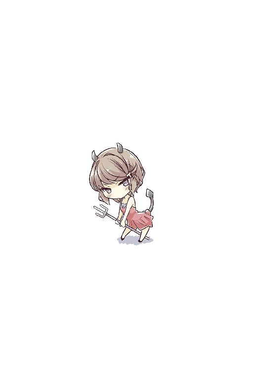
鴨志田一
１９７８年４月11日誕生。神奈川県出身の左利き。
先日、取材のために水族館に行きました。
水槽の中で泳ぐ色々な魚やペンギンショー、
アシカとイルカのショーも合わせて堪能。
三十も半ばを過ぎたおっさんがひとりで行っても、水族館は楽しいところでしたとさ......。
溝口ケージ
最近生ハムを食べた際に２枚が張り付いていたため、上手く剥がれず諦めてそのまま食べたのが今年の上半期最大の贅沢です。来年は３枚を目指します。
本書に対するご意見、ご感想をお寄せください。
電撃文庫公式ホームページ 読者アンケートフォーム
http://dengekibunko.dengeki.com/
※メニューの「読者アンケート」よりお進みください。
ファンレターあて先
〒102-8584 東京都千代田区富士見1-8-19
アスキー・メディアワークス電撃文庫編集部
「鴨志田 一先生」係
「溝口ケージ先生」係
本書は書き下ろしです。
 電撃文庫
電撃文庫
青春ブタ野郎はプチデビル後輩の夢を見ない
鴨志田一
発 行 2014年8月28日
発行者 塚田正晃
発行所 株式会社KADOKAWA
〒102-8177 東京都千代田区富士見2-13-3
03-3238-8745（営業）
http://www.kadokawa.co.jp/
プロデュース アスキー・メディアワークス
〒102-8584 東京都千代田区富士見1-8-19
03-5216-8399（編集）
http://dengekibunko.dengeki.com/
本書（電子版）に掲載されているコンテンツ（ソフトウェア／プログラム／データ／情報を含む）の著作権およびその他の権利は、すべて株式会社KADOKAWAおよび正当な権利を有する第三者に帰属しています。
法律の定めがある場合または権利者の明示的な承諾がある場合を除き、これらのコンテンツを複製・転載、改変・編集、翻案・翻訳、放送・出版、公衆送信（送信可能化を含む）・再配信、販売・頒布、貸与等に使用することはできません。
(C)2014 HAJIME KAMOSHIDA
※2014年8月9日発行の電撃文庫『青春ブタ野郎はプチデビル後輩の夢を見ない』初版に基づき制作